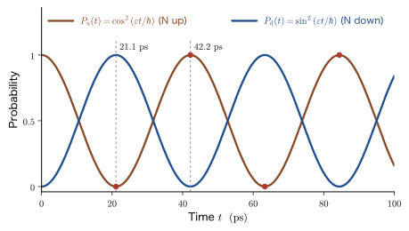

Chapter 50The Time-Evolution Operator and the Three Pictures — Schrödinger, Heisenberg, and Interaction Pictures
In the previous chapter we solved the time-dependent Schrödinger equation as a superposition of energy eigenfunctions, $\Psi(x,t)=\sum_nA_n\psi_n(x)\,e^{-iE_nt/\hbar}$. This is a deterministic time evolution: once the initial wave function $\Psi(x,0)$ is given, everything that happens afterward is determined. In this chapter we extract the very operation of “advancing time” as a single operator, $e^{-i\hat{H}t/\hbar}$. This operator is unitary (a “rotation” that preserves probability), and it is the true nature of time evolution in quantum mechanics.
Take one more step from here, and something interesting happens. All that can be measured in an experiment is the expectation value of a physical quantity, $\langle\hat{A}\rangle=\mel{\psi(t)}{\hat{A}}{\psi(t)}$, and the probability of obtaining a given measured value. These are expressions in which a “bra,” an “operator,” and a “ket” are lined up, and whether we place the factor $e^{\mp i\hat{H}t/\hbar}$ that carries the time dependence on the ket side, on the operator side, or split it half and half between the two is merely a convention of calculation. In English, this choice of where to place it is called a picture. (Many Japanese books translate the word with one standard term, and the “pictures” in the chapter title mean the same thing; the Japanese edition of this book, to match Linear Response Theory (AD 08), uses a different term. This English edition renders both simply as “picture.”) If we place the time dependence on the ket, we have the Schrödinger picture; if on the operator, the Heisenberg picture; and if we distribute part of it to each, the interaction picture. Like the difference between “looking outside from inside a train” and “looking at the train from outside,” a change in the way of looking does not change the physics. What changes is how clear the view of the problem is.
Which viewpoint is useful depends on the problem. In the Heisenberg picture, the position $\hat{x}_H(t)$ and the momentum $\hat{p}_H(t)$ obey equations that closely resemble Newton's equations of motion in classical mechanics. The connection to classical mechanics is clear at a glance, and for the harmonic oscillator the solutions for the operators have the same “appearance” as the classical solutions. A conservation law reduces to the single phrase “commutes with the Hamiltonian.” The interaction picture is a tool for treating the transitions of electrons when weak light or an electric field is applied (time-dependent perturbation theory, Fermi's golden rule, and Rabi oscillations in the next chapter). We first remove the fast rotation of the phase caused by the solvable part $\hat{H}_0$ (the carrier wave of a radio), and then follow only the slow change (the envelope) produced by the perturbation $\hat{H}_1(t)$. The Dyson series derived in this chapter is the starting point common to all of time-dependent perturbation theory, Green's functions, the Kubo formula of linear response, and quantum field theory.
As concrete examples from materials, we take up in turn the inversion vibration of the ammonia molecule $\mathrm{NH_3}$ (period $42\ \mathrm{ps}$), the Larmor precession of an electron spin in a magnetic field ($28\ \mathrm{GHz}$ at $1\ \mathrm{T}$), the spreading of a free-electron wave packet ($17\ \mathrm{fs}$ for a size of $1\ \mathrm{nm}$), the optical phonon of Si ($520.5\ \mathrm{cm^{-1}}$, period $64\ \mathrm{fs}$), and the lifetime of an excited state and the width of a spectral line.
- Write the Schrödinger equation as $\ket{\psi_S(t)}=\hat{U}_S(t,t_0)\ket{\psi_S(t_0)}$, and understand the time-evolution operator $\hat{U}_S(t,t_0)=e^{-i\hat{H}(t-t_0)/\hbar}$ in two ways: through the power series and through the eigenbasis $\sum_n\ket{n}e^{-iE_nt/\hbar}\bra{n}$
- Prove from $\hat{H}=\hat{H}^\dagger$ the unitarity $\hat{U}_S^\dagger\hat{U}_S=\hat{1}$ of $\hat{U}_S$ (conservation of probability) and its group properties
- Introduce the Heisenberg picture $\hat{A}_H(t)=e^{i\hat{H}t/\hbar}\hat{A}\,e^{-i\hat{H}t/\hbar}$, derive the equation of motion $\dfrac{\dd\hat{A}_H}{\dd t}=\dfrac{i}{\hbar}\comm{\hat{H}}{\hat{A}_H}$ and Ehrenfest's theorem in three lines, and relate them to the Poisson bracket of classical mechanics
- Solve the free particle ($\hat{x}_H(t)=\hat{x}+\hat{p}t/m$, the commutation relation at different times $-i\hbar t/m$, the spreading of the wave packet) and the harmonic oscillator ($\hat{a}_H(t)=\hat{a}\,e^{-i\omega t}$) in the Heisenberg picture
- Derive the energy–time uncertainty relation (Mandelstam–Tamm) and estimate the shortest time needed for a state to change into another state
- Derive the interaction picture $\ket{\psi_I(t)}=e^{i\hat{H}_0t/\hbar}\ket{\psi_S(t)}$ and $i\hbar\,\partial_t\hat{U}=\hat{H}_{1I}(t)\hat{U}$, understand the Dyson series and the time-ordered product $T$ (how the coefficient $1/n!$ arises), and arrive at the simultaneous equations for the transition amplitudes, $i\hbar\dot{c}_m=\sum_nV_{mn}(t)e^{i\omega_{mn}t}c_n$
- Confirm that the three pictures give the same expectation values and transition probabilities, and choose among them according to the problem
Source notes: This chapter supplements material that is not in the original notes. Related notes: Yasuhide Mochizuki, “Physics Notes: Quantum Mechanics 3,” pp. 69–71 (the time-dependent Schrödinger equation and its general solution), and a photograph of the notes (Ehrenfest's theorem).
50.1 The Time-Evolution Operator and Unitarity — The Schrödinger Picture
50.1.1 Road map of this chapter — seeing the same physics in three ways
In Part III, we treated the wave function $\Psi(x,t)$ as a function of the position $x$ and solved the Schrödinger equation as a partial differential equation. In this chapter, the abstract ket $\ket{\psi_S(t)}$, which represents the state itself, takes the leading role. The subscript $S$ is the initial letter of Schrödinger. The wave function is the position representation of this ket, that is, its inner product with the position eigenket $\ket{x}$, $\Psi(x,t)=\braket{x}{\psi_S(t)}$ (Chapter 10, Section 10.6). In Dirac notation, the time-dependent Schrödinger equation (Axiom 8.5) is written as
\begin{equation} i\hbar\,\frac{\dd}{\dd t}\ket{\psi_S(t)}=\hat{H}\,\ket{\psi_S(t)} \label{eq:50-tdse} \end{equation}Multiplying both sides from the left by $\bra{x}$ brings us back to the familiar form $i\hbar\,\partial\Psi(x,t)/\partial t=\hat{H}\Psi(x,t)$ ($\hat{H}$ is a differential operator in the $x$ representation). $\hat{H}$ is a Hermitian operator ($\hat{H}^\dagger=\hat{H}$), and in this section we assume that it does not depend explicitly on time (the time-dependent case is treated in Section 50.1.7). Likewise, we consider only operators $\hat{A}$ (representing physical quantities) that do not depend explicitly on time.
Math Tool: Review of bras and kets
In this chapter we continue to use Dirac notation (Chapter 10, Section 10.2). We first summarize the meaning of the symbols.
- $\ket{\psi}$ (a ket) is a vector representing a state, and corresponds to a column vector. $\bra{\phi}$ (a bra) is the conjugate transpose of a ket (the result of transposing and then taking the complex conjugate), and corresponds to a row vector. $\braket{\phi}{\psi}$ is the inner product of two states (a complex number), and $\braket{\psi}{\phi}=\braket{\phi}{\psi}^*$.
- $\ket{n}\bra{n}$ is the projection operator onto the state $\ket{n}$ (the product of a column vector and a row vector is a matrix). For a complete orthonormal set of states ($\braket{m}{n}=\delta_{mn}$), we have $\sum_n\ket{n}\bra{n}=\hat{1}$ (completeness). Inserting the identity operator $\hat{1}$ shows that any ket can be expanded as $\ket{\psi}=\sum_n\ket{n}\braket{n}{\psi}$.
- $\braket{x}{\psi}=\Psi(x)$ is the wave function obtained by writing the ket $\ket{\psi}$ in the position ($x$) representation.
- Hermitian conjugate ($\dagger$): $(\hat{A}\ket{\psi})^\dagger=\bra{\psi}\hat{A}^\dagger$, $(\hat{A}\hat{B})^\dagger=\hat{B}^\dagger\hat{A}^\dagger$ (the order is reversed). An operator is called Hermitian when $\hat{A}^\dagger=\hat{A}$ and unitary when $\hat{U}^\dagger\hat{U}=\hat{1}$.
- $\mel{\phi}{\hat{A}}{\psi}$ is a matrix element (a complex number). If $\hat{A}$ is Hermitian, $\mel{\psi}{\hat{A}}{\psi}$ is real and is the expectation value $\langle\hat{A}\rangle$ of $\hat{A}$.
Only the following two kinds of quantities can be measured in experiments.
- The expectation value $\langle\hat{A}\rangle(t)=\mel{\psi_S(t)}{\hat{A}}{\psi_S(t)}$ of a physical quantity $\hat{A}$.
- The probability $\abs{\braket{f}{\psi_S(t)}}^2$ of finding the system in a certain state $\ket{f}$ (a transition probability or the probability of a measured value).
Both are expressions in which a “bra–operator–ket” sequence is written out, and the time dependence is contained in the solution of Eq. \eqref{eq:50-tdse}. If we write this solution in the form of the operator $e^{-i\hat{H}t/\hbar}$, a choice arises: “where to put the time dependence.”
Intuition: Viewing from inside the train or from outside
A person standing inside a moving train and a person watching the train from beside the track describe the same events in different coordinate systems. Whichever way we look at it, the time and the order of the event “a passenger reaches the window” do not change. The Schrödinger picture is the view in which “the measuring apparatus (the operator) is fixed and the system (the state) moves,” whereas the Heisenberg picture is the view in which “the system is fixed and it is the measuring apparatus that moves.” The interaction picture corresponds to riding in a coordinate system that moves at exactly the same speed as the train (a rotating frame) and observing only the remaining slow motion.
50.1.2 The time-evolution operator $\hat{U}_S$ — the formal solution of the Schrödinger equation
Eq. \eqref{eq:50-tdse} is a linear differential equation that is first order in time. Therefore, if we give the state $\ket{\psi_S(t_0)}$ at some time $t_0$, the state $\ket{\psi_S(t)}$ at any time $t$ is determined uniquely. Moreover, because the equation is linear, doubling the state at $t_0$ doubles the state at $t$, and the sum of two states at $t_0$ is carried to the sum of the two corresponding states at $t$ (the principle of superposition). Hence, the map that produces $\ket{\psi_S(t)}$ from $\ket{\psi_S(t_0)}$ is a linear operator. This is the time-evolution operator.
Its form can be guessed from the differential equation of the exponential function that we know from high school mathematics. For a constant $a$, the solution of $\dd y/\dd t=-a\,y$ is $y(t)=y(t_0)\,e^{-a(t-t_0)}$. Since Eq. \eqref{eq:50-tdse} can be written as $\dd\ket{\psi_S}/\dd t=-\dfrac{i}{\hbar}\hat{H}\ket{\psi_S}$, replacing $a$ by the operator $\dfrac{i}{\hbar}\hat{H}$ gives the following definition.
Definition 50.1: Time-evolution operator (Schrödinger picture)
When $\hat{H}$ does not depend explicitly on time, the operator
\begin{equation} \hat{U}_S(t,t_0)\equiv\exp\left[-\frac{i\hat{H}(t-t_0)}{\hbar}\right]=\sum_{n=0}^{\infty}\frac{1}{n!}\left(-\frac{i(t-t_0)}{\hbar}\right)^{n}\hat{H}^{\,n} \label{eq:50-Udef} \end{equation}is called the time-evolution operator. $\hat{H}^{\,0}=\hat{1}$ is the identity operator. Using the time-evolution operator, the solution of the Schrödinger equation, Eq. \eqref{eq:50-tdse}, can be written as
\begin{equation} \ket{\psi_S(t)}=\hat{U}_S(t,t_0)\,\ket{\psi_S(t_0)} \label{eq:50-Uact} \end{equation}The subscript $S$ indicates the Schrödinger picture.
The argument of the exponential function, $\hat{H}(t-t_0)/\hbar$, is dimensionless, since it is (energy) × (time) ÷ (energy × time). Because the argument of an exponential function must be dimensionless, we divide by $\hbar$.
Derivation: Eq. \eqref{eq:50-Uact} satisfies the Schrödinger equation
The only quantity on the right-hand side of Eq. \eqref{eq:50-Udef} that depends on $t$ is $(t-t_0)^n$ ($\hat{H}$ is time-independent). When we differentiate term by term with respect to $t$, the $n=0$ term is a constant and vanishes, and using $\dd(t-t_0)^n/\dd t=n(t-t_0)^{n-1}$ and $n/n!=1/(n-1)!$ we obtain
$$ \frac{\partial}{\partial t}\hat{U}_S=\sum_{n=1}^{\infty}\frac{1}{(n-1)!}\left(-\frac{i}{\hbar}\right)^{n}(t-t_0)^{n-1}\hat{H}^{\,n} $$Now we factor out just one copy of $-\dfrac{i}{\hbar}\hat{H}$ from the right-hand side (since $\hat{H}$ commutes with its own power $\hat{H}^{\,n-1}$, it may be taken out to the left) and let $m=n-1$. Then
$$ \frac{\partial}{\partial t}\hat{U}_S=-\frac{i}{\hbar}\hat{H}\sum_{m=0}^{\infty}\frac{1}{m!}\left(-\frac{i(t-t_0)}{\hbar}\right)^{m}\hat{H}^{\,m}=-\frac{i}{\hbar}\hat{H}\,\hat{U}_S $$and the sum returns to the original series. Multiplying both sides by $i\hbar$, we obtain
\begin{equation} i\hbar\,\frac{\partial}{\partial t}\hat{U}_S(t,t_0)=\hat{H}\,\hat{U}_S(t,t_0),\qquad\hat{U}_S(t_0,t_0)=\hat{1} \label{eq:50-Ueq} \end{equation}(at $t=t_0$ only the $n=0$ term $\hat{1}$ of the series remains). Applying this to $\ket{\psi_S(t_0)}$, we see that $\ket{\psi_S(t)}=\hat{U}_S\ket{\psi_S(t_0)}$ satisfies Eq. \eqref{eq:50-tdse} and takes the correct initial value at $t=t_0$. Since the equation is first-order, the solution is unique once the initial value is fixed, and Eq. \eqref{eq:50-Uact} gives every solution.
∎
In general $\hat{H}$ is an infinite-dimensional operator (a differential operator), and the convergence of the power series \eqref{eq:50-Udef} requires mathematical care. The definition in terms of the eigenbasis, described next in Section 50.1.3, does not require such care. In what follows, as is usual in physics, we treat the two ways of writing as the same thing.
Caution: This book has two time-evolution operators, $\hat{U}_S$ and $\hat{U}$
In this chapter, two kinds of operators responsible for time evolution appear. To avoid confusing them, we contrast them at the outset.
| Symbol | What it advances | Generating Hamiltonian | Where in this chapter |
|---|---|---|---|
| $\hat{U}_S(t,t_0)$ | The state $\ket{\psi_S}$ in the Schrödinger picture | The full $\hat{H}$ ($=\hat{H}_0+\hat{H}_1$) | Sections 50.1 and 50.5.4 |
| $\hat{U}(t,t_0)$ | The state $\ket{\psi_I}$ in the interaction picture | The perturbation alone, $\hat{H}_{1I}(t)$ | Section 50.5 |
The two are related by $\hat{U}_S(t,t_0)=e^{-i\hat{H}_0t/\hbar}\,\hat{U}(t,t_0)\,e^{i\hat{H}_0t_0/\hbar}$ (Eq. \eqref{eq:50-USU}). What is written as $\hat{U}(t,t_0)$ in Chapter 6 of Linear Response Theory (AD 08) is the one in the interaction picture.
Incidentally, the subscript $S$ (for the Schrödinger picture) happens to be the same letter as the $S$ of the spin operators $\hat{S}_x,\hat{S}_y,\hat{S}_z$. The spin operators carry the subscripts $x,y,z$, so they are distinguishable from $\hat{U}_S$.
Math Tool: The exponential function of a matrix (operator)
The power series of the exponential function of a number, $e^x=\sum_nx^n/n!$ (University Mathematics, Chapter 4, Section 4.2), extended unchanged to a matrix or operator $\hat{X}$, gives $e^{\hat{X}}=\sum_{n=0}^{\infty}\hat{X}^n/n!$. In actual calculations we use the following three viewpoints selectively.
- Power series: when the powers of $\hat{X}$ can be found easily. For example, if $\hat{X}^2\propto\hat{1}$, split the series into even-order and odd-order terms and add them (see the 2×2 matrix example below).
- Diagonalization: if $\hat{X}$ can be diagonalized, $X=PDP^{-1}$ ($D$ is a diagonal matrix), then $X^n=PD^nP^{-1}$, so $e^{X}=P\,e^{D}\,P^{-1}$, where $e^{D}$ is the diagonal matrix obtained by replacing each diagonal element $d_i$ by $e^{d_i}$ (University Mathematics, Chapter 12, Section 12.4). The representation in the eigenbasis in Section 50.1.3 is the operator version of this.
- Differential equation: $\hat{U}(t)=e^{-i\hat{H}t/\hbar}$ is the unique solution of $i\hbar\,\dot{\hat{U}}=\hat{H}\hat{U}$, $\hat{U}(0)=\hat{1}$ (Eq. \eqref{eq:50-Ueq}).
Caution: For numbers, $e^ae^b=e^{a+b}$, but for operators, in general $e^{\hat{A}}e^{\hat{B}}\ne e^{\hat{A}+\hat{B}}$. If $\comm{\hat{A}}{\hat{B}}=0$, equality holds (a sufficient condition). When the commutator is not $0$, equality usually breaks down (the formula for the general case is the Baker–Campbell–Hausdorff formula in Section 50.2.2, and the effect of noncommutativity in the time-dependent case is treated in Section 50.5.5). Exponentials of the same operator, for example $e^{a\hat{H}}e^{b\hat{H}}=e^{(a+b)\hat{H}}$, satisfy the equality because they commute.
Illustration: the 2×2 matrix. Using the Pauli matrices (Chapter 23, Section 23.7), we find $e^{-i\theta\,\bm{u}\cdot\bm{\sigma}}$ ($\bm{u}$ is a unit vector and $\theta$ is a real number). By the anticommutation relation $\acomm{\sigma_i}{\sigma_j}=2\delta_{ij}$, the square of $\bm{u}\cdot\bm{\sigma}=u_x\sigma_x+u_y\sigma_y+u_z\sigma_z$ is
$$ (\bm{u}\cdot\bm{\sigma})^2=\sum_{i,j}u_iu_j\sigma_i\sigma_j=\sum_iu_i^2\sigma_i^2+\sum_{i\lt j}u_iu_j\acomm{\sigma_i}{\sigma_j}=u_x^2+u_y^2+u_z^2=1 $$(we used $\sigma_i^2=1$). Therefore $(\bm{u}\cdot\bm{\sigma})^{2k}=1$ and $(\bm{u}\cdot\bm{\sigma})^{2k+1}=\bm{u}\cdot\bm{\sigma}$. Splitting the power series into even-order and odd-order terms, we obtain
\begin{equation} e^{-i\theta\,\bm{u}\cdot\bm{\sigma}}=\sum_{k=0}^\infty\frac{(-1)^k\theta^{2k}}{(2k)!}\,\hat{1}-i\sum_{k=0}^\infty\frac{(-1)^k\theta^{2k+1}}{(2k+1)!}\,\bm{u}\cdot\bm{\sigma}=\cos\theta-i\,(\bm{u}\cdot\bm{\sigma})\sin\theta \label{eq:50-expsigma} \end{equation}(we used $(-i\theta)^{2k}=(-1)^k\theta^{2k}$ and $(-i\theta)^{2k+1}=-i(-1)^k\theta^{2k+1}$. This has the form of Euler's formula $e^{-i\theta}=\cos\theta-i\sin\theta$ (University Mathematics, Chapter 21, Section 21.4) with the $i$ replaced by $i\,\bm{u}\cdot\bm{\sigma}$). We will use this equation many times in the examples of this chapter.
50.1.3 Representation in the eigenbasis — just multiply each eigenstate by a phase
Let the eigenstates of $\hat{H}$ be $\hat{H}\ket{n}=E_n\ket{n}$. The eigenstates are orthonormal ($\braket{m}{n}=\delta_{mn}$) and complete ($\sum_n\ket{n}\bra{n}=\hat{1}$; Chapter 10, Section 10.2). Then the time-evolution operator can be written as follows.
Theorem 50.1: Representation of the time-evolution operator in the eigenbasis
\begin{equation} e^{-i\hat{H}t/\hbar}=\sum_n\ket{n}\,e^{-iE_nt/\hbar}\,\bra{n} \label{eq:50-spectral} \end{equation}This formula holds (for a continuous spectrum, $\sum_n\to\int\dd E$). That is, $\hat{U}_S$ is the operator that merely multiplies each eigenstate $\ket{n}$ by the phase factor $e^{-iE_nt/\hbar}$.
Proof
Inserting the identity operator $\hat{1}=\sum_n\ket{n}\bra{n}$ to the right of $\hat{H}^k$ and using $\hat{H}^k\ket{n}=E_n^k\ket{n}$, we have
$$ \hat{H}^k=\hat{H}^k\sum_n\ket{n}\bra{n}=\sum_nE_n^k\ket{n}\bra{n} $$Substituting this into Eq. \eqref{eq:50-Udef} ($t_0=0$) and interchanging the order of the sums, we get
$$ e^{-i\hat{H}t/\hbar}=\sum_{k=0}^{\infty}\frac{1}{k!}\left(-\frac{it}{\hbar}\right)^k\sum_nE_n^k\ket{n}\bra{n}=\sum_n\left[\sum_{k=0}^{\infty}\frac{1}{k!}\left(-\frac{iE_nt}{\hbar}\right)^k\right]\ket{n}\bra{n}=\sum_ne^{-iE_nt/\hbar}\ket{n}\bra{n} $$The expression in the square brackets is nothing but the power series of the exponential function of the number $-iE_nt/\hbar$.
∎
From this formula, the general solution of the previous chapter follows immediately. Letting the state at time $t_0=0$ be $\ket{\psi_S(0)}$, we have
\begin{equation} \ket{\psi_S(t)}=\sum_n\ket{n}\,e^{-iE_nt/\hbar}\braket{n}{\psi_S(0)}=\sum_nA_n\,e^{-iE_nt/\hbar}\ket{n},\qquad A_n=\braket{n}{\psi_S(0)} \label{eq:50-expand} \end{equation}Multiplying from the left by $\bra{x}$ and letting $\psi_n(x)=\braket{x}{n}$, we get $\Psi(x,t)=\sum_nA_n\psi_n(x)\,e^{-iE_nt/\hbar}$, which is exactly the “superposition of stationary states” of the previous chapter. The expansion coefficient $A_n=\braket{n}{\psi_S(0)}=\int\psi_n^*(x)\Psi(x,0)\dd x$ is the same as well. The method of solution in the previous chapter (expand the initial state in eigenstates and multiply each component by a phase) is nothing other than the actual computational procedure for the definition of $e^{-i\hat{H}t/\hbar}$ in terms of the eigenbasis. Because the rotation speed of the phase, $E_n/\hbar$, differs from component to component, the relative phase of the superposition changes with time, and this is the cause of interference (quantum beats). The magnitude $\abs{A_n}$ of each component (the probability $\abs{A_n}^2$ of obtaining $E_n$ when the energy is measured) does not change as time passes.
Bridge: The propagator and the retarded Green's function (Chapter 55)
The position representation of the time-evolution operator (multiply Eq. \eqref{eq:50-spectral} by $\bra{x}$ from the left and by $\ket{x'}$ from the right, and use $\psi_n(x)=\braket{x}{n}$ and $\psi_n^*(x')=\braket{n}{x'}$)
\begin{equation} K(x,t;x',t_0)\equiv\mel{x}{\hat{U}_S(t,t_0)}{x'}=\sum_n\psi_n(x)\,\psi_n^*(x')\,e^{-iE_n(t-t_0)/\hbar} \label{eq:50-propagator} \end{equation}is called the propagator. Multiplying $\ket{\psi_S(t)}=\hat{U}_S\ket{\psi_S(t_0)}$ from the left by $\bra{x}$ and inserting $\hat{1}=\int\ket{x'}\bra{x'}\dd x'$, we obtain $\Psi(x,t)=\int K(x,t;x',t_0)\,\Psi(x',t_0)\dd x'$. $K$ represents the amplitude for a particle that was at position $x'$ at time $t_0$ to be found at position $x$ at time $t$.
To restrict the direction of time to $t\gt0$ (to impose causality), we multiply by the step function $\theta(t)$ ($1$ for $t\gt0$ and $0$ for $t\lt0$), which gives the operator
\begin{equation} K^{\mathrm{R}}(t)=-\frac{i}{\hbar}\,\theta(t)\,e^{-i\hat{H}t/\hbar} \label{eq:50-KR} \end{equation}This is the retarded Green's function, whose position representation is $-\dfrac{i}{\hbar}\theta(t)K(x,t;x',0)$. Attaching the convergence factor $e^{-\eta t/\hbar}$ ($\eta\to+0$) and taking the Fourier transform in time (with the time kernel $e^{+iEt/\hbar}$), we obtain $\displaystyle\int_{-\infty}^{\infty}\dd t\,e^{iEt/\hbar}e^{-\eta t/\hbar}K^{\mathrm{R}}(t)=-\frac{i}{\hbar}\int_0^{\infty}e^{i(E-\hat{H}+i\eta)t/\hbar}\dd t=\frac{1}{E-\hat{H}+i\eta}=\hat{G}(E)$. This $\hat{G}(E)=(E-\hat{H}+i\eta)^{-1}$ is the main subject of Chapter 55 (Green's function). The time-evolution operator is nothing other than the time representation of the Green's function.
Example 50.1: Inversion of the ammonia molecule $\mathrm{NH_3}$ — time evolution of a two-level system
The $\mathrm{NH_3}$ molecule has two stable shapes with respect to the plane of the equilateral triangle formed by the three H atoms: a configuration $\ket{u}$ in which the N atom is above the plane and a configuration $\ket{d}$ in which it is below. Since the N atom passes through the plane by tunneling (Chapter 12), the Hamiltonian in the basis of these two states can be written as $\hat{H}=\begin{bmatrix}E_0&-\varepsilon\\-\varepsilon&E_0\end{bmatrix}$ ($\varepsilon\gt0$). $\ket{u}$ and $\ket{d}$ are the basis states corresponding to the first and second columns, respectively. (1) Find the eigenstates and the energies. (2) Suppose that N was above the plane at time $t=0$; find the time-evolution operator $\hat{U}_S(t,0)$ and the probability $P_{\mathrm{u}}(t)$ of finding N above. (3) The spacing between the two levels is $2\varepsilon=hf$ with $f=23.694\ \mathrm{GHz}$ (the value for the inversion line of the rotational state $(J,K)=(1,1)$). Find $2\varepsilon$ in $\mathrm{eV}$ and the period of the inversion.
Solution. (1) $\hat{H}=E_0\hat{1}-\varepsilon\sigma_x$ ($\sigma_x$ is the Pauli matrix in the basis $\ket{u},\ket{d}$). The eigenvalues of $\sigma_x$ are $\pm1$ and the eigenvectors are $(\ket{u}\pm\ket{d})/\sqrt{2}$, so the eigenstates and energies are
$$ \ket{\mathrm{S}}=\frac{\ket{u}+\ket{d}}{\sqrt{2}}\ (E_{\mathrm{S}}=E_0-\varepsilon),\qquad \ket{\mathrm{A}}=\frac{\ket{u}-\ket{d}}{\sqrt{2}}\ (E_{\mathrm{A}}=E_0+\varepsilon) $$The even-function-like (symmetric) combination $\ket{\mathrm{S}}$ is lower by $2\varepsilon$. This is the “inversion splitting,” and the stronger the tunneling, the larger it is.
(2) Using Eq. \eqref{eq:50-expsigma} ($\bm{u}=\bm{e}_x$, $\theta=-\varepsilon t/\hbar$) together with $e^{-i\hat{H}t/\hbar}=e^{-iE_0t/\hbar}\,e^{+i\varepsilon t\sigma_x/\hbar}$, we obtain
$$ \hat{U}_S(t,0)=e^{-iE_0t/\hbar}\left[\cos\frac{\varepsilon t}{\hbar}+i\sigma_x\sin\frac{\varepsilon t}{\hbar}\right]=e^{-iE_0t/\hbar}\begin{bmatrix}\cos\dfrac{\varepsilon t}{\hbar}&i\sin\dfrac{\varepsilon t}{\hbar}\\[2mm] i\sin\dfrac{\varepsilon t}{\hbar}&\cos\dfrac{\varepsilon t}{\hbar}\end{bmatrix} $$Let us check this by a calculation in the eigenbasis. Applying Eq. \eqref{eq:50-spectral} to $\ket{u}=(\ket{\mathrm{S}}+\ket{\mathrm{A}})/\sqrt{2}$ and writing $\theta\equiv\varepsilon t/\hbar$, we get
$$ \hat{U}_S\ket{u}=\frac{1}{\sqrt{2}}\left(e^{-i(E_0-\varepsilon)t/\hbar}\ket{\mathrm{S}}+e^{-i(E_0+\varepsilon)t/\hbar}\ket{\mathrm{A}}\right)=\frac{e^{-iE_0t/\hbar}}{\sqrt{2}}\left(e^{i\theta}\ket{\mathrm{S}}+e^{-i\theta}\ket{\mathrm{A}}\right) $$Rewriting $\ket{\mathrm{S}},\ket{\mathrm{A}}$ in terms of $\ket{u},\ket{d}$, we have
$$ \hat{U}_S\ket{u}=e^{-iE_0t/\hbar}\left[\frac{e^{i\theta}+e^{-i\theta}}{2}\ket{u}+\frac{e^{i\theta}-e^{-i\theta}}{2}\ket{d}\right]=e^{-iE_0t/\hbar}\bigl[\cos\theta\,\ket{u}+i\sin\theta\,\ket{d}\bigr] $$which agrees with the first column of the matrix. The probabilities of finding N above the plane and below the plane are
\begin{equation} P_{\mathrm{u}}(t)=\abs{\braket{u}{\psi_S(t)}}^2=\cos^2\frac{\varepsilon t}{\hbar},\qquad P_{\mathrm{d}}(t)=\abs{\braket{d}{\psi_S(t)}}^2=\sin^2\frac{\varepsilon t}{\hbar} \label{eq:50-nh3} \end{equation}(the overall phase $e^{-iE_0t/\hbar}$ does not affect the probabilities; $P_{\mathrm{u}}+P_{\mathrm{d}}=1$). The N atom moves back and forth periodically between the upper and lower positions.
(3) We find $2\varepsilon=hf=(4.1357\times10^{-15}\ \mathrm{eV\,s})(23.694\times10^{9}\ \mathrm{s^{-1}})=9.80\times10^{-5}\ \mathrm{eV}$ (in wavenumber, $0.790\ \mathrm{cm^{-1}}$). Hence $\varepsilon=4.90\times10^{-5}\ \mathrm{eV}$. Since $\varepsilon t/\hbar=\pi ft$ ($\varepsilon=hf/2=\pi\hbar f$), the period of $P_{\mathrm{u}}(t)=\cos^2(\pi ft)$ is $1/f=42.2\ \mathrm{ps}$. N moves completely to the opposite side ($P_{\mathrm{d}}=1$) when $\pi ft=\pi/2$, that is, at $t=1/(2f)=21.1\ \mathrm{ps}$ (Figure 50.2).

Application: The ammonia maser
The microwave absorption lines corresponding to the inversion of $\mathrm{NH_3}$ are lined up from $23.7\ \mathrm{GHz}$ to about $25\ \mathrm{GHz}$ (wavelengths of about $1.2$–$1.3\ \mathrm{cm}$), and the frequency differs slightly depending on the rotational state $(J,K)$ of the molecule. The value $f=23.694\ \mathrm{GHz}$ in the example is the value for the $(J,K)=(1,1)$ line (a correction due to rotation is added to the $2\varepsilon=hf$ of the two-level model for each $(J,K)$). The first amplifier (the maser), realized in 1954 by Gordon, Zeiger, and Townes, used the $(J,K)=(3,3)$ line (about $23.87\ \mathrm{GHz}$). It became the forerunner of the later laser (Chapter 53). The example above depicts, using nothing but the exponential function of a 2×2 matrix, a behavior peculiar to quantum mechanics: within that molecule the N atom keeps switching between above and below $23.7$ billion times per second (an oscillation due to tunneling).
50.1.4 Unitarity and conservation of probability
The most important property here is that probability is preserved by time evolution. If $\ket{\psi_S(t)}$ is normalized, then $\braket{\psi_S(t)}{\psi_S(t)}=1$ must hold at every time (a particle neither disappears nor multiplies; this is the conservation of probability of Chapter 9, Section 9.3). In the language of operators, this says that $\hat{U}_S$ is unitary.
Theorem 50.2: Unitarity of the time-evolution operator
If $\hat{H}=\hat{H}^\dagger$ (Hermitian), then $\hat{U}_S(t,t_0)$ is unitary:
\begin{equation} \hat{U}_S^\dagger(t,t_0)\,\hat{U}_S(t,t_0)=\hat{U}_S(t,t_0)\,\hat{U}_S^\dagger(t,t_0)=\hat{1} \label{eq:50-unitary} \end{equation}Therefore the inverse operator is $\hat{U}_S^{-1}=\hat{U}_S^\dagger$, and neither the norm of a state nor the inner product of two states changes under time evolution:
\begin{equation} \braket{\phi_S(t)}{\psi_S(t)}=\braket{\phi_S(t_0)}{\psi_S(t_0)} \label{eq:50-norm} \end{equation}Proof
Let $\Delta t=t-t_0$ (a real number). Take the Hermitian conjugate of the power series in Eq. \eqref{eq:50-Udef}. The Hermitian conjugate of a product reverses the order, so $(\hat{H}^n)^\dagger=(\hat{H}^\dagger)^n=\hat{H}^n$, and numerical coefficients become their complex conjugates: $(-i\Delta t/\hbar)^*=+i\Delta t/\hbar$. Therefore,
$$ \hat{U}_S^\dagger=\sum_{n=0}^{\infty}\frac{1}{n!}\left(\frac{i\Delta t}{\hbar}\right)^n\hat{H}^n=\exp\left[+\frac{i\hat{H}\Delta t}{\hbar}\right] $$Here we used $\hat{H}=\hat{H}^\dagger$. If $\hat{H}$ were not Hermitian, $\hat{U}_S^\dagger$ would be $e^{+i\hat{H}^\dagger\Delta t/\hbar}$, and since $\hat{H}$ and $\hat{H}^\dagger$ do not commute, the next calculation could not proceed. The operators $e^{+i\hat{H}\Delta t/\hbar}$ and $e^{-i\hat{H}\Delta t/\hbar}$ commute, because they are power series in the same $\hat{H}$. For arbitrary complex numbers $\alpha,\beta$, from $\hat{H}^m\hat{H}^n=\hat{H}^{m+n}$ and the binomial theorem, we have $e^{\alpha\hat{H}}e^{\beta\hat{H}}=\displaystyle\sum_{m,n}\frac{\alpha^m\beta^n}{m!\,n!}\hat{H}^{m+n}=\sum_{N=0}^{\infty}\frac{\hat{H}^N}{N!}\sum_{m=0}^{N}\binom{N}{m}\alpha^m\beta^{N-m}=\sum_{N=0}^{\infty}\frac{(\alpha+\beta)^N}{N!}\hat{H}^N=e^{(\alpha+\beta)\hat{H}}$ (we grouped the terms by $N=m+n$). In other words, the product of two series becomes an addition of exponents. Taking $\alpha=i\Delta t/\hbar$ and $\beta=-i\Delta t/\hbar$, we obtain
$$ \hat{U}_S^\dagger\hat{U}_S=e^{+i\hat{H}\Delta t/\hbar}\,e^{-i\hat{H}\Delta t/\hbar}=e^{0}=\hat{1} $$Reversing the order gives the same result, so Eq. \eqref{eq:50-unitary} is proved. For the inner product, from $\ket{\phi_S(t)}=\hat{U}_S\ket{\phi_S(t_0)}$ and $\bra{\phi_S(t)}=\bra{\phi_S(t_0)}\hat{U}_S^\dagger$ we have
$$ \braket{\phi_S(t)}{\psi_S(t)}=\bra{\phi_S(t_0)}\hat{U}_S^\dagger\hat{U}_S\ket{\psi_S(t_0)}=\braket{\phi_S(t_0)}{\psi_S(t_0)} $$Setting $\ket{\phi_S}=\ket{\psi_S}$ gives the conservation of the norm.
In the eigenbasis, from Eq. \eqref{eq:50-spectral} we have $\hat{U}_S^\dagger\hat{U}_S=\sum_{m,n}\ket{m}e^{+iE_m\Delta t/\hbar}\braket{m}{n}e^{-iE_n\Delta t/\hbar}\bra{n}=\sum_n\ket{n}\bra{n}=\hat{1}$ (since $\braket{m}{n}=\delta_{mn}$ and $e^{+iE_n\Delta t/\hbar}e^{-iE_n\Delta t/\hbar}=1$). The fact that the eigenvalues $E_n$ are real ($\hat{H}$ is Hermitian) is the reason why the phase factors have magnitude 1, that is, the reason for unitarity.
∎
The analogue in the world of real numbers is “rotation.” A rotation matrix $R(\theta)$ in the plane does not change lengths or angles ($R^{\mathsf T}R=1$). A unitary operator is a “rotation” of a complex vector space: it changes neither the length (norm) of a state vector nor the angle between two vectors (inner product). Time evolution is the rotation of the state vector within the state space.
Caution: If $\hat{H}$ is not Hermitian, probability is not conserved
When an excited state emits light and moves to the ground state, the probability of “being in that excited state” decreases (lifetime). This decay is sometimes expressed phenomenologically by an effective Hamiltonian $\hat{H}_{\mathrm{eff}}=\hat{H}-i\hbar\Gamma/2$ ($\Gamma\gt0$), in which the energy of the excited state is given an imaginary part. In this case $\hat{H}_{\mathrm{eff}}^\dagger\ne\hat{H}_{\mathrm{eff}}$, and $e^{-i\hat{H}_{\mathrm{eff}}t/\hbar}=e^{-i\hat{H}t/\hbar}\,e^{-\Gamma t/2}$ is not unitary: the norm $\sqrt{\braket{\psi}{\psi}}$ decreases as $e^{-\Gamma t/2}$, and the square of the norm (the probability) decreases as $e^{-\Gamma t}$. The lost probability has moved to other states (states containing a photon). For the whole system, the Hamiltonian is Hermitian and the time evolution is unitary (Chapter 52).
Example 50.2: Checking unitarity — $e^{-i\varepsilon\sigma_xt/\hbar}$
For $\hat{U}_S=\exp(-i\varepsilon\sigma_xt/\hbar)$, verify explicitly that $\hat{U}_S^\dagger\hat{U}_S=\hat{1}$ and find $\det\hat{U}_S$. Also show that the norm of an arbitrary normalized state $(a,b)^{\mathsf T}$ ($\abs{a}^2+\abs{b}^2=1$) is conserved.
Solution. Let $\theta=\varepsilon t/\hbar$. Then by Eq. \eqref{eq:50-expsigma} ($\bm{u}=\bm{e}_x$) we have $\hat{U}_S=\cos\theta-i\sigma_x\sin\theta=\begin{bmatrix}\cos\theta&-i\sin\theta\\-i\sin\theta&\cos\theta\end{bmatrix}$. The Hermitian conjugate, obtained by transposing and taking the complex conjugate, is $\hat{U}_S^\dagger=\begin{bmatrix}\cos\theta&i\sin\theta\\i\sin\theta&\cos\theta\end{bmatrix}$. The product is
$$ \hat{U}_S^\dagger\hat{U}_S=\begin{bmatrix}\cos^2\theta+(i\sin\theta)(-i\sin\theta)&-i\cos\theta\sin\theta+i\sin\theta\cos\theta\\ i\sin\theta\cos\theta-i\cos\theta\sin\theta&(i\sin\theta)(-i\sin\theta)+\cos^2\theta\end{bmatrix}=\begin{bmatrix}1&0\\0&1\end{bmatrix} $$(since $(i)(-i)=1$, the diagonal elements are $\cos^2\theta+\sin^2\theta=1$, and the off-diagonal elements cancel each other). The determinant is $\det\hat{U}_S=\cos^2\theta-(-i\sin\theta)^2=\cos^2\theta+\sin^2\theta=1$. This is what is expected from $\det e^{\hat{X}}=e^{\mathrm{tr}\hat{X}}$ and $\mathrm{tr}(\sigma_x)=0$. For the general Hamiltonian $\hat{H}=E_0\hat{1}+\varepsilon\sigma_x$, we have $\det\hat{U}_S=e^{-2iE_0t/\hbar}$, whose absolute value is 1 and whose phase is $-\mathrm{tr}(\hat{H})\,t/\hbar$ (the determinant of a unitary matrix has absolute value 1).
When an arbitrary state $(a,b)^{\mathsf T}$ is advanced by $\hat{U}_S$, its components become $a'=a\cos\theta-ib\sin\theta$ and $b'=-ia\sin\theta+b\cos\theta$.
$$ \abs{a'}^2=\abs{a}^2\cos^2\theta+\abs{b}^2\sin^2\theta+2\cos\theta\sin\theta\,\mathrm{Re}(-i\,a^*b) $$ $$ \abs{b'}^2=\abs{a}^2\sin^2\theta+\abs{b}^2\cos^2\theta+2\cos\theta\sin\theta\,\mathrm{Re}(+i\,a^*b) $$(We used $\abs{u+v}^2=\abs{u}^2+\abs{v}^2+2\mathrm{Re}(u^*v)$; for example, for $a'$ we have $u=a\cos\theta$ and $v=-ib\sin\theta$.) When we add the two, the cross terms cancel, since $\mathrm{Re}(-ia^*b)+\mathrm{Re}(ia^*b)=0$, and we obtain $\abs{a'}^2+\abs{b'}^2=(\abs{a}^2+\abs{b}^2)(\cos^2\theta+\sin^2\theta)=1$.
50.1.5 Group properties — it can be advanced and reversed
Theorem 50.3: Group properties of the time-evolution operator
When $\hat{H}$ is time-independent, the following hold.
\begin{equation} \hat{U}_S(t_2,t_1)\,\hat{U}_S(t_1,t_0)=\hat{U}_S(t_2,t_0),\qquad\hat{U}_S(t,t)=\hat{1},\qquad\hat{U}_S(t,t_0)^{-1}=\hat{U}_S(t_0,t)=\hat{U}_S(t,t_0)^\dagger \label{eq:50-group} \end{equation}Moreover, $\hat{U}_S(t,t_0)$ depends only on the time difference $t-t_0$, so that $\hat{U}_S(t,t_0)=\hat{U}_S(t-t_0,0)$.
Proof
$\hat{U}_S(t_2,t_1)\hat{U}_S(t_1,t_0)=e^{-i\hat{H}(t_2-t_1)/\hbar}e^{-i\hat{H}(t_1-t_0)/\hbar}=e^{-i\hat{H}[(t_2-t_1)+(t_1-t_0)]/\hbar}=e^{-i\hat{H}(t_2-t_0)/\hbar}$. Along the way, we used the fact that the product of exponential functions of the same $\hat{H}$ is the exponential of the sum of the exponents ($e^{a\hat{H}}e^{b\hat{H}}=e^{(a+b)\hat{H}}$). The second equation follows from the fact that the exponent is 0 at $t=t_0$; the third follows from $e^{-i\hat{H}(t-t_0)/\hbar}\,e^{-i\hat{H}(t_0-t)/\hbar}=e^0=\hat{1}$ together with the unitarity $\hat{U}_S^{-1}=\hat{U}_S^\dagger$ of Theorem 50.2. The last claim follows because the right-hand side of Eq. \eqref{eq:50-Udef} is determined only by $\hat{H}$ and $t-t_0$ and does not contain $t$ and $t_0$ separately, so that $\hat{U}_S(t,t_0)=\hat{U}_S(t-t_0,0)$.
∎
The first equation says that “advancing from $t_0$ to $t_1$ and then from $t_1$ to $t_2$ is the same as advancing from $t_0$ to $t_2$ in one step.” It seems obvious that time evolution may be broken up at an intermediate point, but we will use this property many times later in the Dyson series (Section 50.5). The third equation expresses the existence of $\hat{U}_S(t_0,t)$ (the operator that takes the state at time $t$ back to the past time $t_0$). Unlike the probabilistic measurement (collapse of the wave function), the time evolution in quantum mechanics, while no measurement is made, is reversible. The intermediate history is not lost: from the state at time $t$, the state at any past time is uniquely determined. (What physics calls “time-reversal symmetry” is a different property: that a motion with the direction of time reversed is also a solution of the equation of motion.)
50.1.6 $\hat{H}$ is the generator of time translation
$\hat{U}_S=e^{-i\hat{H}\Delta t/\hbar}$ is an operator that represents the operation of shifting time by $\Delta t$. For an infinitesimal $\Delta t$, $\hat{U}_S\approx\hat{1}-i\hat{H}\Delta t/\hbar$, so $\hat{H}$ is the source of the “infinitesimal shift in time.” Such an operator is called the generator of the transformation. The same structure also appears in translations and rotations in space.
For example, when the operator $e^{-i\hat{p}a/\hbar}=e^{-a\,\dd/\dd x}$, whose generator is the momentum operator $\hat{p}=-i\hbar\,\dd/\dd x$, acts on a function $\psi(x)$, the Taylor expansion (University Mathematics, Chapter 4, Section 4.2) gives
$$ e^{-a\,\dd/\dd x}\psi(x)=\sum_{n=0}^{\infty}\frac{(-a)^n}{n!}\frac{\dd^n\psi}{\dd x^n}=\psi(x-a) $$so the wave function is shifted to the right by $a$. Similarly, $e^{-i\hat{L}_z\varphi_0/\hbar}$, whose generator is $\hat{L}_z=-i\hbar\,\partial/\partial\varphi$, changes $\psi(\varphi)$ into $\psi(\varphi-\varphi_0)$ (a rotation by the azimuthal angle $\varphi_0$). For spin $\tfrac12$, $e^{-i\hat{S}_z\varphi_0/\hbar}=e^{-i\sigma_z\varphi_0/2}$ represents the rotation about the $z$ axis (Chapter 24, Section 24.9).
| Transformation | Operator of the transformation | Generator | Corresponding conservation law |
|---|---|---|---|
| Translation in time (by $\Delta t$) | $e^{-i\hat{H}\Delta t/\hbar}$ | $\hat{H}$ | Conservation of energy |
| Translation in space (by $a$) | $e^{-i\hat{p}a/\hbar}$ | $\hat{p}$ | Conservation of momentum |
| Rotation about the $z$ axis (by $\varphi_0$) | $e^{-i\hat{L}_z\varphi_0/\hbar}$ | $\hat{L}_z$ | Conservation of the $z$ component of angular momentum |
| Rotation of the spin | $e^{-i\hat{S}_z\varphi_0/\hbar}$ | $\hat{S}_z$ | Conservation of $\hat{S}_z$ (if the magnetic field is along the $z$ direction) |
The correspondence between symmetries and conservation laws (Noether's theorem of classical mechanics; Introductory University Physics, Chapter 46, Section 46.2 (in Japanese)) is rephrased in quantum mechanics as “the generator commutes with $\hat{H}$.” This will become clear in Section 50.2.
Example 50.3: Larmor precession of an electron spin in a magnetic field
An electron spin is in a uniform magnetic field $B=1\ \mathrm{T}$ in the $z$ direction. The Hamiltonian is $\hat{H}=\dfrac{g_s\mu_{\mathrm{B}}}{2}B\,\sigma_z=\dfrac{\hbar\omega_{\mathrm{L}}}{2}\sigma_z$, with $\omega_{\mathrm{L}}=\dfrac{g_s\mu_{\mathrm{B}}B}{\hbar}$ (Chapter 23, Section 23.9; $g_s=2.0023$). (1) Find $\omega_{\mathrm{L}}$, the frequency $f_{\mathrm{L}}=\omega_{\mathrm{L}}/2\pi$, and the period. (2) Assuming that the spin starts at time 0 from the state $\ket{\psi_S(0)}=(\ket{\uparrow}+\ket{\downarrow})/\sqrt{2}$, which points in the positive direction of the $x$ axis, find the time dependence of $\langle\hat{S}_x\rangle$, $\langle\hat{S}_y\rangle$, and $\langle\hat{S}_z\rangle$. (3) Evaluate $\hat{U}_S=e^{-i\sigma_z\omega_{\mathrm{L}}t/2}$ at $\omega_{\mathrm{L}}t=2\pi$ and $4\pi$. (We also write $\ket{\uparrow}=\alpha$ and $\ket{\downarrow}=\beta$.)
Solution. (1) $\omega_{\mathrm{L}}=\dfrac{(2.0023)(9.2740\times10^{-24}\ \mathrm{J/T})(1\ \mathrm{T})}{1.05457\times10^{-34}\ \mathrm{J\,s}}=1.761\times10^{11}\ \mathrm{rad/s}$, $f_{\mathrm{L}}=\omega_{\mathrm{L}}/2\pi=28.02\ \mathrm{GHz}$, and the period is $2\pi/\omega_{\mathrm{L}}=35.7\ \mathrm{ps}$. The quantity $\hbar\omega_{\mathrm{L}}=115.9\ \mu\mathrm{eV}$ is the spacing between the two spin levels (the ESR resonance energy).
(2) The Hamiltonian $\hat{H}=(\hbar\omega_{\mathrm{L}}/2)\sigma_z$ is a diagonal matrix, and its eigenstates are $\ket{\uparrow},\ket{\downarrow}$ (eigenvalues $\pm\hbar\omega_{\mathrm{L}}/2$). From Eq. \eqref{eq:50-spectral}, $\hat{U}_S=\mathrm{diag}\bigl(e^{-i\omega_{\mathrm{L}}t/2},\,e^{+i\omega_{\mathrm{L}}t/2}\bigr)$, so we have
$$ \ket{\psi_S(t)}=\frac{1}{\sqrt{2}}\left(e^{-i\omega_{\mathrm{L}}t/2}\ket{\uparrow}+e^{+i\omega_{\mathrm{L}}t/2}\ket{\downarrow}\right) $$Writing the components as $a=e^{-i\omega_{\mathrm{L}}t/2}/\sqrt{2}$ and $b=e^{+i\omega_{\mathrm{L}}t/2}/\sqrt{2}$, we have $\langle\sigma_x\rangle=a^*b+b^*a=2\,\mathrm{Re}(a^*b)$, $\langle\sigma_y\rangle=-ia^*b+ib^*a=2\,\mathrm{Im}(a^*b)$, and $\langle\sigma_z\rangle=\abs{a}^2-\abs{b}^2$, with $a^*b=e^{+i\omega_{\mathrm{L}}t}/2$. Therefore, using $\hat{\bm{S}}=\dfrac{\hbar}{2}\bm{\sigma}$, we obtain
\begin{equation} \langle\hat{S}_x\rangle=\frac{\hbar}{2}\cos\omega_{\mathrm{L}}t,\qquad\langle\hat{S}_y\rangle=\frac{\hbar}{2}\sin\omega_{\mathrm{L}}t,\qquad\langle\hat{S}_z\rangle=0 \label{eq:50-larmor} \end{equation}The direction of the spin rotates in the $xy$ plane, from the $+x$ axis toward the $+y$ axis, with angular velocity $\omega_{\mathrm{L}}$. This is called Larmor precession. Since the magnetic moment of the electron points in the direction opposite to the spin (Chapter 23, Section 23.9), the sense of rotation of the precession is counterclockwise as seen from the direction of the magnetic field ($+z$). (For a spin pointing in an arbitrary direction, the motion is that of a cone: the $z$ component is constant, and the $x$ and $y$ components rotate. Figure 50.3.)
(3) For $\omega_{\mathrm{L}}t=2\pi$, we have $\hat{U}_S=\mathrm{diag}(e^{-i\pi},e^{i\pi})=-\hat{1}$. The spin has returned to its original direction, but the sign of the state vector has been reversed. At $\omega_{\mathrm{L}}t=4\pi$, we return to $\hat{U}_S=+\hat{1}$ for the first time. A spinor changes sign under a rotation by $2\pi$ and returns to its original form after $4\pi$. For a single spin, this sign is an overall phase and cannot be observed, but it can be observed by making a beam that has undergone the rotation interfere with a beam that has not (this was confirmed with a neutron interferometer in 1975).
Related simulator: how the sign of a spinor reverses at $2\pi$ and returns to its original value at $4\pi$ when it is rotated can be checked in “② SU(2) and SO(3)” of the Lie Group simulator.
50.1.7 When $\hat{H}$ depends on time
So far we have assumed that $\hat{H}$ is independent of time. However, problems in which the Hamiltonian changes with time ($\hat{H}=\hat{H}(t)$), such as an atom exposed to light or an electric field, or a spin in an oscillating magnetic field, play the leading role in the chapters that follow. In this case the Schrödinger equation is $i\hbar\,\dd\ket{\psi_S}/\dd t=\hat{H}(t)\ket{\psi_S}$, and the time-evolution operator is again defined by
\begin{equation} \ket{\psi_S(t)}=\hat{U}_S(t,t_0)\ket{\psi_S(t_0)}\ \text{and}\quad i\hbar\,\frac{\partial}{\partial t}\hat{U}_S(t,t_0)=\hat{H}(t)\,\hat{U}_S(t,t_0),\quad\hat{U}_S(t_0,t_0)=\hat{1} \label{eq:50-Utdep} \end{equation}We have simply replaced $\hat{H}$ in Eq. \eqref{eq:50-Ueq} by $\hat{H}(t)$. Unitarity holds in this case as well.
Derivation: $\hat{U}_S^\dagger\hat{U}_S=\hat{1}$ also for $\hat{H}(t)$
Take Eq. \eqref{eq:50-Utdep} and its Hermitian conjugate. Since $(i\hbar\,\partial_t\hat{U}_S)^\dagger=-i\hbar\,\partial_t\hat{U}_S^\dagger$ and $[\hat{H}(t)\hat{U}_S]^\dagger=\hat{U}_S^\dagger\hat{H}(t)$ ($\hat{H}(t)$ is Hermitian at every time), we have
$$ \frac{\partial\hat{U}_S}{\partial t}=-\frac{i}{\hbar}\hat{H}(t)\hat{U}_S,\qquad\frac{\partial\hat{U}_S^\dagger}{\partial t}=+\frac{i}{\hbar}\hat{U}_S^\dagger\hat{H}(t) $$Substituting these into the time derivative of $\hat{U}_S^\dagger\hat{U}_S$, we obtain
$$ \frac{\partial}{\partial t}\bigl(\hat{U}_S^\dagger\hat{U}_S\bigr)=\frac{i}{\hbar}\hat{U}_S^\dagger\hat{H}(t)\hat{U}_S-\frac{i}{\hbar}\hat{U}_S^\dagger\hat{H}(t)\hat{U}_S=0 $$Hence $\hat{U}_S^\dagger\hat{U}_S$ is independent of time, and since it equals $\hat{1}$ at $t=t_0$, it equals $\hat{1}$ at all times.
∎
The group property $\hat{U}_S(t_2,t_1)\hat{U}_S(t_1,t_0)=\hat{U}_S(t_2,t_0)$ also holds (the left- and right-hand sides satisfy the same differential equation with the same initial condition, so they coincide by the uniqueness of the solution). However, $\hat{U}_S(t,t_0)$ is no longer a function of the time difference only.
Another difference is the following. The quantity $\hat{H}\,(t-t_0)$ in the exponent of the solution $e^{-i\hat{H}(t-t_0)/\hbar}$ for time-independent $\hat{H}$ equals $\int_{t_0}^{t}\hat{H}\,\dd t'$, so one is tempted to imagine that $\exp\left[-\dfrac{i}{\hbar}\displaystyle\int_{t_0}^{t}\hat{H}(t')\dd t'\right]$ would also be the solution in the case of $\hat{H}(t)$. This is, in general, wrong. The reason becomes clear when we examine the second-order term. Let $A(t)\equiv\displaystyle\int_{t_0}^{t}\hat{H}(t')\dd t'$.
- The second-order term of the exponential function $e^{-iA/\hbar}$ in this prediction is $\dfrac12\left(-\dfrac{i}{\hbar}\right)^2A^2$, and differentiating it with respect to $t$ gives $\dfrac12\left(-\dfrac{i}{\hbar}\right)^2\bigl(\hat{H}(t)A+A\hat{H}(t)\bigr)$.
- On the other hand, substituting $\hat{U}_S=\hat{1}-\dfrac{i}{\hbar}A+\hat{U}^{(2)}+\cdots$ into the correct equation, Eq. \eqref{eq:50-Utdep}, we find that $\hat{U}^{(2)}$ satisfies $i\hbar\,\partial_t\hat{U}^{(2)}=\hat{H}(t)\left(-\dfrac{i}{\hbar}A\right)$. That is, $\partial_t\hat{U}^{(2)}=\left(-\dfrac{i}{\hbar}\right)^2\hat{H}(t)\,A(t)$.
The two agree only when $\hat{H}(t)A(t)=A(t)\hat{H}(t)$, that is, when $\displaystyle\int_{t_0}^{t}\comm{\hat{H}(t)}{\hat{H}(t')}\dd t'=0$. The fact that the Hamiltonians at different times do not commute with one another ($\comm{\hat{H}(t)}{\hat{H}(t')}\ne0$) is the essential difficulty of time-dependent problems. This difficulty is resolved by the Dyson series of Section 50.5, which uses the time-ordered product $T$; an example in which the prediction actually fails (a spin in a rotating magnetic field) will also be seen in Section 50.5.7. Note that when the Hamiltonians at different times do commute, as in $\hat{H}(t)=f(t)\hat{H}_a$ (the time dependence is only in the coefficient $f(t)$), the prediction is correct and we have $\hat{U}_S=\exp\left[-\dfrac{i}{\hbar}\hat{H}_a\displaystyle\int_{t_0}^{t}f(t')\dd t'\right]$.
50.2 The Heisenberg Picture and Ehrenfest's Theorem — The Operators Move
50.2.1 Regrouping the parentheses in the expectation value — definition of the Heisenberg picture
In the Schrödinger picture, we rewrite the expectation value of a physical quantity $\hat{A}$ in terms of the state at time 0. Substituting $\ket{\psi_S(t)}=\hat{U}_S(t,0)\ket{\psi_S(0)}$ and $\bra{\psi_S(t)}=\bra{\psi_S(0)}\hat{U}_S^\dagger(t,0)$, we obtain
$$ \langle\hat{A}\rangle(t)=\mel{\psi_S(t)}{\hat{A}}{\psi_S(t)}=\bra{\psi_S(0)}\;\underbrace{e^{+i\hat{H}t/\hbar}\,\hat{A}\,e^{-i\hat{H}t/\hbar}}_{\text{treat as a single block}}\;\ket{\psi_S(0)} $$The Heisenberg picture consists in regarding the underbraced part as a single new operator and leaving the bra and ket at time 0. The value of the expression is the same; we have only changed how the parentheses are placed.
Definition 50.2: The Heisenberg picture
When $\hat{H}$ is time-independent, we define the operator and the state as
\begin{equation} \hat{A}_H(t)\equiv e^{i\hat{H}t/\hbar}\,\hat{A}\,e^{-i\hat{H}t/\hbar}=\hat{U}_S^\dagger(t,0)\,\hat{A}\,\hat{U}_S(t,0),\qquad\ket{\psi_H}\equiv\ket{\psi_S(0)} \label{eq:50-Hdef} \end{equation}The state $\ket{\psi_H}$ is time-independent. All of the time dependence is carried by the operator $\hat{A}_H(t)$. An operator $\hat{A}$ without a subscript denotes an operator in the Schrödinger picture (time-independent), so that $\hat{A}_H(0)=\hat{A}$.
The definition in Eq. \eqref{eq:50-Hdef} is chosen so that the two pictures coincide at time 0 ($t_0=0$). If we want them to coincide at another time $t_0$, we set $\hat{A}_H(t)=\hat{U}_S^\dagger(t,t_0)\hat{A}\hat{U}_S(t,t_0)$ and $\ket{\psi_H}=\ket{\psi_S(t_0)}$. Below we take $t_0=0$. Immediately from the definition, we see that the expectation value is the same in either picture:
\begin{equation} \langle\hat{A}\rangle(t)=\mel{\psi_S(t)}{\hat{A}}{\psi_S(t)}=\mel{\psi_H}{\hat{A}_H(t)}{\psi_H} \label{eq:50-expect} \end{equation}The probabilities are also the same. Let the eigenstates of $\hat{A}$ be $\hat{A}\ket{a}=a\ket{a}$. In the Schrödinger picture, the probability of obtaining the measured value $a$ is $\abs{\braket{a}{\psi_S(t)}}^2=\abs{\bra{a}\hat{U}_S\ket{\psi_H}}^2=\abs{\braket{a_H(t)}{\psi_H}}^2$. Here we have put $\ket{a_H(t)}\equiv\hat{U}_S^\dagger\ket{a}$. This is an eigenstate of $\hat{A}_H(t)$, and its eigenvalue remains $a$, unchanged ($\hat{A}_H\ket{a_H}=\hat{U}_S^\dagger\hat{A}\hat{U}_S\hat{U}_S^\dagger\ket{a}=a\ket{a_H}$). In the Heisenberg picture, the state stands still, and it is the eigenstate $\ket{a_H(t)}$, which corresponds to the “orientation of the measuring instrument,” that moves.
Intuition: $\hat{A}_H(t)$ is “$\hat{A}$ measured at time $t$”
In the Schrödinger picture, measuring a physical quantity $\hat{A}$ at time $t$ means “evolving the state at time 0 up to $t$ and then measuring $\hat{A}$.” The operator $\hat{A}_H(t)=\hat{U}_S^\dagger\hat{A}\hat{U}_S$ is one in which this “evolving” operation has been taken over by the $\hat{A}$ side, and it represents “$\hat{A}$ measured at time $t$ on the state at time 0.” We may simply think of it as a single operator $\hat{A}$ to which a time label $t$ has been attached.
This “operator with a time label” will prove essentially useful later. In linear response (the Kubo formula, Chapter 54), we “strike at time $t'$ and listen for the response at time $t$,” so products of operators at two different times, $\hat{A}_H(t)\hat{B}_H(t')$, appear. In the Schrödinger picture, where the state moves, it is awkward to write such quantities.
Theorem 50.4: Properties of operators in the Heisenberg picture
Let $\hat{A},\hat{B}$ be operators in the Schrödinger picture.
- Products: $(\hat{A}\hat{B})_H=\hat{A}_H\hat{B}_H$. The same holds for sums, constant multiples, and functions, and $f(\hat{A})_H=f(\hat{A}_H)$.
- Commutators: if $\comm{\hat{A}}{\hat{B}}=\hat{C}$, then $\comm{\hat{A}_H(t)}{\hat{B}_H(t)}=\hat{C}_H(t)$. In particular, the canonical commutation relation at equal times is preserved: $\comm{\hat{x}_H(t)}{\hat{p}_H(t)}=i\hbar$.
- Hermiticity: if $\hat{A}^\dagger=\hat{A}$, then $\hat{A}_H^\dagger(t)=\hat{A}_H(t)$. The eigenvalues of $\hat{A}$ and $\hat{A}_H(t)$ are the same.
- The Hamiltonian itself: $\hat{H}_H(t)=\hat{H}$ (time-independent).
Proof
(1) Insert $\hat{1}=\hat{U}_S\hat{U}_S^\dagger$ between the factors of the product: $\hat{A}_H\hat{B}_H=\hat{U}_S^\dagger\hat{A}\,\hat{U}_S\hat{U}_S^\dagger\,\hat{B}\hat{U}_S=\hat{U}_S^\dagger\hat{A}\hat{B}\hat{U}_S=(\hat{A}\hat{B})_H$. A function defined by a power series is handled in the same way, since each term obeys (1). (2) $\comm{\hat{A}_H}{\hat{B}_H}=\hat{A}_H\hat{B}_H-\hat{B}_H\hat{A}_H=(\hat{A}\hat{B}-\hat{B}\hat{A})_H=\hat{C}_H$, and when $\hat{C}=i\hbar\hat{1}$, we have $\hat{C}_H=i\hbar\hat{1}$. (3) $\hat{A}_H^\dagger=(\hat{U}_S^\dagger\hat{A}\hat{U}_S)^\dagger=\hat{U}_S^\dagger\hat{A}^\dagger\hat{U}_S=\hat{A}_H$. The statement about the eigenvalues was given in Section 50.2.1. (4) Since $\hat{H}$ commutes with $e^{\pm i\hat{H}t/\hbar}$, we have $e^{i\hat{H}t/\hbar}\hat{H}e^{-i\hat{H}t/\hbar}=\hat{H}$.
∎
The words “at equal times” in (2) are important. Operators at different times do not commute in general, and this fact is connected with the “indeterminate trajectory” of the free particle in Section 50.3.
50.2.2 Heisenberg's equation of motion
We find how $\hat{A}_H(t)$ changes with time from the time derivative of the definition in Eq. \eqref{eq:50-Hdef}.
Theorem 50.5: Heisenberg's equation of motion
When $\hat{H}$ does not depend explicitly on time, and neither does $\hat{A}$,
\begin{equation} \frac{\dd\hat{A}_H(t)}{\dd t}=\frac{i}{\hbar}\comm{\hat{H}}{\hat{A}_H(t)},\qquad\text{that is}\qquad i\hbar\,\frac{\dd\hat{A}_H}{\dd t}=\comm{\hat{A}_H}{\hat{H}} \label{eq:50-Heq} \end{equation}holds. If $\hat{A}$ depends explicitly on time (for example, if it contains an external field), the term $\left(\dfrac{\partial\hat{A}}{\partial t}\right)_H=e^{i\hat{H}t/\hbar}\dfrac{\partial\hat{A}}{\partial t}e^{-i\hat{H}t/\hbar}$ is added to the right-hand side. In particular, if $\comm{\hat{H}}{\hat{A}}=0$, then $\hat{A}_H(t)=\hat{A}$ is a constant (a conserved quantity).
Derivation
We differentiate the definition in Eq. \eqref{eq:50-Hdef} using the product rule (this holds for operators too, as long as the order is preserved). There are two places to differentiate, the exponential functions on the left and on the right. From the same calculation as in the derivation of Eq. \eqref{eq:50-Ueq}, we have $\dfrac{\dd}{\dd t}e^{-i\hat{H}t/\hbar}=-\dfrac{i}{\hbar}\hat{H}e^{-i\hat{H}t/\hbar}$ and $\dfrac{\dd}{\dd t}e^{+i\hat{H}t/\hbar}=+\dfrac{i}{\hbar}\hat{H}e^{+i\hat{H}t/\hbar}$. Therefore,
$$ \frac{\dd\hat{A}_H}{\dd t}=\frac{i}{\hbar}\hat{H}\,e^{i\hat{H}t/\hbar}\hat{A}\,e^{-i\hat{H}t/\hbar}+e^{i\hat{H}t/\hbar}\hat{A}\,e^{-i\hat{H}t/\hbar}\left(-\frac{i}{\hbar}\hat{H}\right)=\frac{i}{\hbar}\left(\hat{H}\hat{A}_H-\hat{A}_H\hat{H}\right) $$In the last equality, we moved the $\hat{H}$ of the second term to the right end, using the fact that it commutes with $e^{\pm i\hat{H}t/\hbar}$. This is $\dfrac{i}{\hbar}\comm{\hat{H}}{\hat{A}_H}$. Multiplying both sides by $i\hbar$, we obtain $i\hbar\,\dfrac{\dd\hat{A}_H}{\dd t}=-\comm{\hat{H}}{\hat{A}_H}=\comm{\hat{A}_H}{\hat{H}}$. If $\hat{A}$ depends explicitly on time, there is one more place to differentiate, namely $\hat{A}$, and $e^{i\hat{H}t/\hbar}(\partial\hat{A}/\partial t)e^{-i\hat{H}t/\hbar}$ is added. When $\comm{\hat{H}}{\hat{A}}=0$, $\hat{A}$ commutes with $e^{\pm i\hat{H}t/\hbar}$, so $\hat{A}_H=\hat{A}$.
∎
The $\hat{A}_H$ on the right-hand side of Eq. \eqref{eq:50-Heq} satisfies $\comm{\hat{H}}{\hat{A}_H}=\comm{\hat{H}_H}{\hat{A}_H}=\comm{\hat{H}}{\hat{A}}_H$, so it makes no difference if we write the right-hand side as $\dfrac{i}{\hbar}\comm{\hat{H}}{\hat{A}}_H$. In other words, Heisenberg's equation of motion is “the Schrödinger-picture commutator $\comm{\hat{H}}{\hat{A}}$, computed and then carried over to the Heisenberg picture.” The calculation of the commutator can be completed in the picture that contains no time (as an ordinary commutation-relation calculation).
A formal solution of this equation is obtained either by using Heisenberg's equation repeatedly or by using the following math tool. We expand $\hat{A}_H(t)=e^{i\hat{H}t/\hbar}\hat{A}e^{-i\hat{H}t/\hbar}$ in nested commutators with $\hat{H}$:
\begin{equation} \hat{A}_H(t)=\hat{A}+\frac{it}{\hbar}\comm{\hat{H}}{\hat{A}}+\frac{1}{2!}\left(\frac{it}{\hbar}\right)^2\comm{\hat{H}}{\comm{\hat{H}}{\hat{A}}}+\cdots=\sum_{n=0}^{\infty}\frac{1}{n!}\left(\frac{it}{\hbar}\right)^n\underbrace{\comm{\hat{H}}{\comm{\hat{H}}{\cdots\comm{\hat{H}}{\hat{A}}}}}_{n\text{-fold commutator}} \label{eq:50-hadamard} \end{equation}Math Tool: Expansion of $e^{\hat{X}}\hat{A}\,e^{-\hat{X}}$ and the Baker–Campbell–Hausdorff formula
Eq. \eqref{eq:50-hadamard} is a special case of the following general formula. For operators $\hat{X},\hat{A}$,
$$ e^{\hat{X}}\hat{A}\,e^{-\hat{X}}=\hat{A}+\comm{\hat{X}}{\hat{A}}+\frac{1}{2!}\comm{\hat{X}}{\comm{\hat{X}}{\hat{A}}}+\frac{1}{3!}\comm{\hat{X}}{\comm{\hat{X}}{\comm{\hat{X}}{\hat{A}}}}+\cdots $$Proof: Consider the function $F(s)=e^{s\hat{X}}\hat{A}\,e^{-s\hat{X}}$ of a real number $s$. By the product rule, $F'(s)=\hat{X}e^{s\hat{X}}\hat{A}e^{-s\hat{X}}-e^{s\hat{X}}\hat{A}e^{-s\hat{X}}\hat{X}=\comm{\hat{X}}{F(s)}$. Repeating this gives $F^{(n)}(s)=\underbrace{\comm{\hat{X}}{\cdots\comm{\hat{X}}{F(s)}}}_{n\text{-fold}}$, and since $F(0)=\hat{A}$, setting $s=1$ in the Taylor expansion about $s=0$, $F(s)=\sum_n F^{(n)}(0)s^n/n!$, gives the formula. Eq. \eqref{eq:50-hadamard} is this formula with $\hat{X}=i\hat{H}t/\hbar$.
If the commutator vanishes along the way, or becomes proportional to the original operator, the series closes and the right-hand side can be found in a concrete form (the harmonic oscillator in Section 50.3).
Another formula is the Baker–Campbell–Hausdorff (BCH) formula. If the commutator $\comm{\hat{A}}{\hat{B}}$ of $\hat{A},\hat{B}$ commutes with both $\hat{A}$ and $\hat{B}$, then $e^{\hat{A}}e^{\hat{B}}=e^{\hat{A}+\hat{B}+\frac12\comm{\hat{A}}{\hat{B}}}$. In general, higher-order commutators follow as well, and we obtain
$$ e^{\hat{A}}e^{\hat{B}}=\exp\left(\hat{A}+\hat{B}+\frac12\comm{\hat{A}}{\hat{B}}+\frac1{12}\comm{\hat{A}}{\comm{\hat{A}}{\hat{B}}}-\frac1{12}\comm{\hat{B}}{\comm{\hat{A}}{\hat{B}}}+\cdots\right) $$If $\comm{\hat{A}}{\hat{B}}=0$, all the higher-order commutators are also $0$, so $e^{\hat{A}}e^{\hat{B}}=e^{\hat{A}+\hat{B}}$ holds (a sufficient condition). The converse does not hold in general, but when the commutator is not $0$, the commutator terms take effect and the equality usually breaks down. The fundamental reason why the time-ordered product $T$ is needed in time-dependent problems is this noncommutativity (Section 50.5).
Correspondence with classical mechanics: Poisson brackets
In classical mechanics, the time dependence of a physical quantity $A(q,p,t)$ on phase space can be written, from Hamilton's canonical equations, as $\dfrac{\dd A}{\dd t}=\{A,H\}+\dfrac{\partial A}{\partial t}$ (Introductory University Physics, Chapter 46, Section 46.3 (in Japanese). The Poisson bracket is $\{A,B\}=\sum_i\left(\dfrac{\partial A}{\partial q_i}\dfrac{\partial B}{\partial p_i}-\dfrac{\partial A}{\partial p_i}\dfrac{\partial B}{\partial q_i}\right)$). If we rewrite Heisenberg's equation of motion \eqref{eq:50-Heq} as $\dfrac{i}{\hbar}\comm{\hat{H}}{\hat{A}_H}=\dfrac{1}{i\hbar}\comm{\hat{A}_H}{\hat{H}}$, the following correspondence emerges (Dirac, 1925).
\begin{equation} \{A,B\}\quad\longleftrightarrow\quad\frac{1}{i\hbar}\comm{\hat{A}}{\hat{B}} \label{eq:50-poisson} \end{equation}For example, $\{q,p\}=1$ corresponds to $\comm{\hat{x}}{\hat{p}}/(i\hbar)=1$, and the condition for a conserved quantity, $\{A,H\}=0$, corresponds to $\comm{\hat{A}}{\hat{H}}=0$. In classical mechanics, however, $A,B$ are mere functions, so $AB=BA$ and we need not worry about the order. In quantum mechanics, $\hat{A}\hat{B}\ne\hat{B}\hat{A}$, and the difference is the commutator, which is proportional to $\hbar$. That the commutator approaches $0$ in the limit $\hbar\to0$ is the mathematical expression of the mechanism by which classical mechanics becomes a limit of quantum mechanics. The matrix mechanics first written down by Heisenberg (1925), and developed by Born and Jordan, is in effect written in this picture.
| Classical mechanics | Quantum mechanics (Heisenberg picture) | |
|---|---|---|
| Physical quantity | function $A(q,p)$ on phase space | operator $\hat{A}_H(t)$ |
| Fundamental relation | $\{q,p\}=1$ | $\comm{\hat{x}}{\hat{p}}=i\hbar$ |
| Equation of motion | $\dfrac{\dd A}{\dd t}=\{A,H\}$ | $\dfrac{\dd\hat{A}_H}{\dd t}=\dfrac{1}{i\hbar}\comm{\hat{A}_H}{\hat{H}}$ |
| Conserved quantity | $\{A,H\}=0$ | $\comm{\hat{A}}{\hat{H}}=0$ |
50.2.3 Ehrenfest's theorem — derived in three lines
In Chapter 9, Section 9.4, we derived Ehrenfest's theorem by means of integrals of the wave function and integration by parts. Formula 8.2 in Chapter 8 (Section 8.8) derives the same equation from the Schrödinger equation. Using Heisenberg's equation of motion, the same theorem is obtained in three lines in the Heisenberg picture. What is new is this way of deriving it, and the operator equation that comes out of it (Eq. \eqref{eq:50-newton-op}).
Theorem 50.6: Ehrenfest's theorem (general form)
For any state, the time dependence of the expectation value of a physical quantity $\hat{A}$ obeys
\begin{equation} \frac{\dd}{\dd t}\langle\hat{A}\rangle=\frac{i}{\hbar}\langle\comm{\hat{H}}{\hat{A}}\rangle+\left\langle\frac{\partial\hat{A}}{\partial t}\right\rangle \label{eq:50-ehrenfest} \end{equation}(the second term is $0$ if $\hat{A}$ does not depend explicitly on time). In particular, when $\hat{H}=\dfrac{\hat{p}^2}{2m}+V(\hat{x})$, the equations
\begin{equation} \frac{\dd\langle\hat{x}\rangle}{\dd t}=\frac{\langle\hat{p}\rangle}{m},\qquad\frac{\dd\langle\hat{p}\rangle}{\dd t}=-\bigl\langle V'(\hat{x})\bigr\rangle \label{eq:50-ehr-xp} \end{equation}hold.
Derivation (three lines)
(i) From Eq. \eqref{eq:50-expect}, $\langle\hat{A}\rangle(t)=\mel{\psi_H}{\hat{A}_H(t)}{\psi_H}$, where $\ket{\psi_H}$ is time-independent. Therefore, the time derivative acts only on the operator part: $\dfrac{\dd}{\dd t}\langle\hat{A}\rangle=\mel{\psi_H}{\dfrac{\dd\hat{A}_H}{\dd t}}{\psi_H}$.
(ii) Substitute Heisenberg's equation of motion \eqref{eq:50-Heq}: $=\dfrac{i}{\hbar}\mel{\psi_H}{\comm{\hat{H}}{\hat{A}_H(t)}}{\psi_H}$.
(iii) By Theorem 50.4(2), $\comm{\hat{H}}{\hat{A}_H}=\comm{\hat{H}}{\hat{A}}_H$, so using Eq. \eqref{eq:50-expect} in the reverse direction, $=\dfrac{i}{\hbar}\mel{\psi_S(t)}{\comm{\hat{H}}{\hat{A}}}{\psi_S(t)}=\dfrac{i}{\hbar}\langle\comm{\hat{H}}{\hat{A}}\rangle$. This is Eq. \eqref{eq:50-ehrenfest}.
(iv) We apply this to $\hat{H}=\hat{p}^2/2m+V(\hat{x})$. From $\comm{\hat{x}}{\hat{p}}=i\hbar$, we get $\comm{\hat{p}^2}{\hat{x}}=\hat{p}\comm{\hat{p}}{\hat{x}}+\comm{\hat{p}}{\hat{x}}\hat{p}=-2i\hbar\hat{p}$, so $\comm{\hat{H}}{\hat{x}}=-\dfrac{i\hbar}{m}\hat{p}$. Also, from $\comm{\hat{x}^n}{\hat{p}}=ni\hbar\hat{x}^{n-1}$ (by induction on $n$, or by the Leibniz rule for the commutator of a product), for any function $V(\hat{x})$ that can be written as a power series we have $\comm{V(\hat{x})}{\hat{p}}=i\hbar V'(\hat{x})$, and hence $\comm{\hat{H}}{\hat{p}}=\comm{V(\hat{x})}{\hat{p}}=i\hbar V'(\hat{x})$ ($\hat{p}^2$ commutes with $\hat{p}$). Putting these into Eq. \eqref{eq:50-ehrenfest}:
$$ \frac{\dd\langle\hat{x}\rangle}{\dd t}=\frac{i}{\hbar}\left\langle-\frac{i\hbar}{m}\hat{p}\right\rangle=\frac{\langle\hat{p}\rangle}{m},\qquad\frac{\dd\langle\hat{p}\rangle}{\dd t}=\frac{i}{\hbar}\bigl\langle i\hbar V'(\hat{x})\bigr\rangle=-\bigl\langle V'(\hat{x})\bigr\rangle\qquad(i\cdot(-i)=1,\ i\cdot i=-1) $$∎
When $\hat{H}$ is time-dependent. Eq. \eqref{eq:50-ehrenfest} holds as it stands even when $\hat{H}=\hat{H}(t)$. Using the Schrödinger equation $i\hbar\,\partial_t\ket{\psi}=\hat{H}(t)\ket{\psi}$ and its conjugate $-i\hbar\,\partial_t\bra{\psi}=\bra{\psi}\hat{H}(t)$, and differentiating $\langle\hat{A}\rangle=\mel{\psi}{\hat{A}}{\psi}$ with the product rule, we directly obtain $\dfrac{\dd}{\dd t}\langle\hat{A}\rangle=\dfrac{i}{\hbar}\mel{\psi}{\hat{H}(t)\hat{A}-\hat{A}\hat{H}(t)}{\psi}+\left\langle\dfrac{\partial\hat{A}}{\partial t}\right\rangle$ (the same calculation as Formula 8.2 in Chapter 8). On the other hand, when the Heisenberg picture is used for a problem with $\hat{H}(t)$, we take $\hat{A}_H(t)=\hat{U}_S^\dagger(t,0)\,\hat{A}\,\hat{U}_S(t,0)$ ($\hat{U}_S$ is given by Eq. \eqref{eq:50-Utdep}), and from Eq. \eqref{eq:50-Utdep} and its conjugate the equation of motion becomes $\dfrac{\dd\hat{A}_H}{\dd t}=\dfrac{i}{\hbar}\comm{\hat{H}_H(t)}{\hat{A}_H}+\left(\dfrac{\partial\hat{A}}{\partial t}\right)_H$. Here $\hat{H}_H(t)\equiv\hat{U}_S^\dagger\hat{H}(t)\hat{U}_S$ does not, in general, coincide with $\hat{H}(t)$. Theorem 50.4(4), Eq. \eqref{eq:50-Heq} of Theorem 50.5, and the exponential form in Definition 50.2 are results for the case where $\hat{H}$ is time-independent.
In the derivation by integration in Chapter 9, at every integration by parts we had to check the condition that “the boundary term vanishes because the wave function goes to $0$ as $x\to\pm\infty$.” Here, that check is entirely absorbed into the Hermiticity of the operator ($\hat{H}^\dagger=\hat{H}$) and the algebra of commutators. At the level of operators, the equations behind Eq. \eqref{eq:50-ehr-xp} are:
\begin{equation} \frac{\dd\hat{x}_H}{\dd t}=\frac{\hat{p}_H}{m},\qquad\frac{\dd\hat{p}_H}{\dd t}=-V'(\hat{x}_H) \label{eq:50-newton-op} \end{equation}These have exactly the same form as Newton's equations of motion $\dot{x}=p/m$, $\dot{p}=-V'(x)=F$. Ehrenfest's theorem is what we obtain by taking the expectation value of this operator equation. The difference from classical mechanics lies in “whether the equations for the expectation values close.” The right-hand side of $\dd\langle\hat{p}\rangle/\dd t=-\langle V'(\hat{x})\rangle$ is not necessarily the function $V'(\langle\hat{x}\rangle)$ of $\langle\hat{x}\rangle$ only. If the wave packet is sufficiently narrow and $V'$ varies slowly, then $\langle V'(\hat{x})\rangle\approx V'(\langle\hat{x}\rangle)$, and $\langle\hat{x}\rangle$ follows the classical trajectory. Otherwise, the spread of the wave packet affects the force.
Example 50.4: When Ehrenfest's theorem closes and when it does not
For the potentials (a) $V=-Fx$ (uniform force), (b) $V=\tfrac12kx^2$ (harmonic oscillator), and (c) $V=cx^4$ ($c\gt0$, anharmonic), can $\dd\langle\hat{p}\rangle/\dd t$ in Eq. \eqref{eq:50-ehr-xp} be written as a function of $\langle\hat{x}\rangle$? For (c), evaluate the deviation from the classical force for a Gaussian wave packet with mean $\bar{x}=\langle\hat{x}\rangle$ and standard deviation $\sigma$.
Solution. (a) Since $V'=-F$ is a constant, $\langle V'\rangle=-F$ and $\dd\langle\hat{p}\rangle/\dd t=F$. Regardless of the shape of the wave packet, $\langle\hat{x}\rangle$ follows exactly the classical motion under a uniform force, $\langle x\rangle=x_0+\langle p\rangle_0t/m+Ft^2/2m$.
(b) Since $V'=kx$ is linear in $\hat{x}$, $\langle V'(\hat{x})\rangle=k\langle\hat{x}\rangle$ and $\dd\langle\hat{p}\rangle/\dd t=-k\langle\hat{x}\rangle$. Combining this with Eq. \eqref{eq:50-ehr-xp}, we get $\dfrac{\dd^2\langle\hat{x}\rangle}{\dd t^2}=-\dfrac{k}{m}\langle\hat{x}\rangle$, and the equation closes. For any wave packet, $\langle\hat{x}\rangle$ undergoes classical simple harmonic motion with angular frequency $\omega=\sqrt{k/m}$.
(c) Since $V'=4cx^3$, $\dd\langle\hat{p}\rangle/\dd t=-4c\langle\hat{x}^3\rangle$. Let $\hat{x}=\bar{x}+\delta$ ($\delta$ is the fluctuation about the mean, with $\langle\delta\rangle=0$ and $\langle\delta^2\rangle=\sigma^2$). Then $\langle\hat{x}^3\rangle=\bar{x}^3+3\bar{x}^2\langle\delta\rangle+3\bar{x}\langle\delta^2\rangle+\langle\delta^3\rangle=\bar{x}^3+3\bar{x}\sigma^2+\langle\delta^3\rangle$. For a Gaussian wave packet, the probability density $\abs{\Psi}^2$ is symmetric about $\bar{x}$, so $\langle\delta^3\rangle=0$, which gives
$$ \frac{\dd\langle\hat{p}\rangle}{\dd t}=-4c\left(\bar{x}^3+3\bar{x}\sigma^2\right)=-4c\bar{x}^3\left(1+\frac{3\sigma^2}{\bar{x}^2}\right) $$The classical force $-V'(\bar{x})=-4c\bar{x}^3$ is multiplied by the factor $1+3\sigma^2/\bar{x}^2$. For example, for $\sigma/\bar{x}=0.1$ the force is $3\%$ larger, and for $\sigma/\bar{x}=0.3$ it is $27\%$ larger. Because $\sigma^2$ (the spread of the wave packet) appears on the right-hand side, the equations do not close with $\langle\hat{x}\rangle$ and $\langle\hat{p}\rangle$ alone. In general, expanding $V'(x)$ about $x=\bar{x}$ and taking the average gives $\langle V'\rangle=V'(\bar{x})+\tfrac12V'''(\bar{x})\sigma^2+\cdots$. If $V'''=0$ ($V$ is at most quadratic), the effect of the spread does not appear.
The fact that, for a potential $V$ that is at most quadratic, the expectation values move exactly as in classical mechanics is the basis of the semiclassical picture of the harmonic oscillator (coherent states; Section 50.3 and Chapter 56). Related simulator: Deriving the spread of a wave packet with Ehrenfest's tools alone.
Example 50.5: A conserved quantity — $\hat{L}_z$ for a central-force potential
For a particle in a potential $V(x,y,z)$, with $\hat{H}=\dfrac{\hat{\bm{p}}^2}{2m}+V(\hat{x},\hat{y},\hat{z})$, find the time dependence of the $z$ component of the angular momentum, $\hat{L}_z=\hat{x}\hat{p}_y-\hat{y}\hat{p}_x$, using the Heisenberg equation. When $V$ is a function $V(r)$ of the distance $r$ from the origin only, show that $\hat{L}_z$ is a conserved quantity.
Solution. We have $\dfrac{\dd\hat{L}_{z,H}}{\dd t}=\dfrac{i}{\hbar}\comm{\hat{H}}{\hat{L}_z}_H$. First, the kinetic-energy part: $\comm{\hat{p}_x^2}{\hat{x}\hat{p}_y-\hat{y}\hat{p}_x}=\comm{\hat{p}_x^2}{\hat{x}}\hat{p}_y=-2i\hbar\hat{p}_x\hat{p}_y$ ($\hat{p}_x^2$ commutes with $\hat{y}$, $\hat{p}_x$, and $\hat{p}_y$, so only the commutator with $\hat{x}$ remains). Similarly, $\comm{\hat{p}_y^2}{\hat{x}\hat{p}_y-\hat{y}\hat{p}_x}=-\comm{\hat{p}_y^2}{\hat{y}}\hat{p}_x=+2i\hbar\hat{p}_y\hat{p}_x$. $\hat{p}_z^2$ commutes with $\hat{L}_z$. Since $\hat{p}_x\hat{p}_y=\hat{p}_y\hat{p}_x$, the sum of the kinetic-energy parts is $0$.
The potential part: $\comm{V}{\hat{x}\hat{p}_y-\hat{y}\hat{p}_x}=\hat{x}\comm{V}{\hat{p}_y}-\hat{y}\comm{V}{\hat{p}_x}=i\hbar\left(\hat{x}\dfrac{\partial V}{\partial y}-\hat{y}\dfrac{\partial V}{\partial x}\right)$ (we used $\comm{V}{\hat{p}_y}=i\hbar\,\partial V/\partial y$). Hence
$$ \frac{\dd\hat{L}_z}{\dd t}=\frac{i}{\hbar}\cdot i\hbar\left(\hat{x}\frac{\partial V}{\partial y}-\hat{y}\frac{\partial V}{\partial x}\right)=\hat{x}F_y-\hat{y}F_x,\qquad F_i=-\frac{\partial V}{\partial x_i} $$The right-hand side is the $z$ component of the moment of the force (the torque), in agreement with the classical $\dd L_z/\dd t=xF_y-yF_x$. When $V=V(r)$ with $r=\sqrt{x^2+y^2+z^2}$, we have $\partial V/\partial y=V'(r)\,y/r$ and $\partial V/\partial x=V'(r)\,x/r$, so $\hat{x}\,\partial V/\partial y-\hat{y}\,\partial V/\partial x=V'(r)(xy-yx)/r=0$, and $\hat{L}_z$ is a conserved quantity ($x,y$ commute, so we need not worry about the order). It is thanks to this conservation that we could use the eigenvalue $m\hbar$ of $\hat{L}_z$ as a label for the states of the hydrogen atom.
50.3 Solving in the Heisenberg Picture — The Free Particle and the Harmonic Oscillator
We see the power of Heisenberg's equation of motion in the two simplest problems. In both, the Hamiltonian is at most quadratic in $\hat{x}$ and $\hat{p}$, so the equations of motion are linear in $\hat{x}_H$ and $\hat{p}_H$ and can be solved exactly.
50.3.1 The free particle — the position operator has the same form as classical uniform motion in a straight line
Consider a free particle of mass $m$, $\hat{H}=\hat{p}^2/2m$. Since $\hat{H}$ commutes with $\hat{p}$, the momentum is conserved (Theorem 50.5): $\hat{p}_H(t)=\hat{p}$. From the calculation $\comm{\hat{H}}{\hat{x}}=-\dfrac{i\hbar}{m}\hat{p}$ in Section 50.2.3, the equation for the position is
$$ \frac{\dd\hat{x}_H}{\dd t}=\frac{i}{\hbar}\comm{\hat{H}}{\hat{x}_H}=\frac{i}{\hbar}\left(-\frac{i\hbar}{m}\hat{p}_H\right)=\frac{\hat{p}_H}{m}=\frac{\hat{p}}{m} $$The right-hand side does not depend on time, so integrating once and using the initial value $\hat{x}_H(0)=\hat{x}$, we obtain
\begin{equation} \hat{x}_H(t)=\hat{x}+\frac{\hat{p}}{m}\,t,\qquad\hat{p}_H(t)=\hat{p} \label{eq:50-xfree} \end{equation}This has the same form as uniform motion in a straight line in classical mechanics, $x(t)=x_0+p\,t/m$, except that $x_0$ and $p$ are not numbers but operators that do not commute ($\comm{\hat{x}}{\hat{p}}=i\hbar$). Taking expectation values gives $\langle\hat{x}\rangle(t)=\langle\hat{x}\rangle+\langle\hat{p}\rangle t/m$, in agreement with the result of Ehrenfest's theorem.
50.3.2 Positions at different times do not commute — why there is no “trajectory”
From Eq. \eqref{eq:50-xfree}, we can compute the commutator of the position operators at two different times ($t$ and $0$), using $\comm{\hat{p}}{\hat{x}}=-i\hbar$:
\begin{equation} \comm{\hat{x}_H(t)}{\hat{x}_H(0)}=\comm{\hat{x}+\dfrac{\hat{p}}{m}t}{\hat{x}}=\frac{t}{m}\comm{\hat{p}}{\hat{x}}=-\frac{i\hbar t}{m}\neq0 \label{eq:50-xx-comm} \end{equation}At equal times ($t=0$) we have $\comm{\hat{x}}{\hat{x}}=0$, but as time passes, the positions at different times can no longer be determined simultaneously. Applying the Robertson inequality (Chapter 8, Section 8.6) $\Delta A\,\Delta B\ge\tfrac12\abs{\langle\comm{\hat{A}}{\hat{B}}\rangle}$ to $\hat{A}=\hat{x}_H(t)$ and $\hat{B}=\hat{x}_H(0)$, we find that the following holds in any state:
\begin{equation} \Delta x(t)\,\Delta x(0)\ge\frac{\hbar\,t}{2m}\qquad(t\gt0) \label{eq:50-xx-unc} \end{equation}If we fix the position at time 0 exactly ($\Delta x(0)\to0$), the position at time $t$ becomes completely uncertain. Conversely, we cannot know both the position at time 0 and the position at time $t$ exactly. The reason we cannot picture the motion of a particle as “a trajectory made by lining up the position at each time” is not a limitation of measurement technique but the structure of quantum mechanics, in which the position operators at different times do not commute (the double-slit experiment, Chapter 7).
50.3.3 Spreading of the wave packet — time dependence of the position variance
We find the position variance $\sigma_x^2(t)=\langle\delta\hat{x}_H(t)^2\rangle$ ($\delta\hat{A}=\hat{A}-\langle\hat{A}\rangle$ is the deviation from the average. In this subsection, $\sigma_x$ and $\sigma_p$ are the standard deviations of position and momentum, not Pauli matrices). From Eq. \eqref{eq:50-xfree}, $\delta\hat{x}_H(t)=\delta\hat{x}+\delta\hat{p}\,t/m$, so expanding the square and taking the expectation value gives
\begin{equation} \sigma_x^2(t)=\langle\delta\hat{x}^2\rangle+\frac{t}{m}\langle\delta\hat{x}\,\delta\hat{p}+\delta\hat{p}\,\delta\hat{x}\rangle+\frac{t^2}{m^2}\langle\delta\hat{p}^2\rangle=\sigma_x^2+\frac{2C}{m}\,t+\frac{\sigma_p^2}{m^2}\,t^2 \label{eq:50-spread} \end{equation}Here $\sigma_x^2=\langle\delta\hat{x}^2\rangle$ and $\sigma_p^2=\langle\delta\hat{p}^2\rangle$ are the variances at time 0, and $C\equiv\tfrac12\langle\delta\hat{x}\,\delta\hat{p}+\delta\hat{p}\,\delta\hat{x}\rangle$ is the covariance of position and momentum (the symmetrized-order product). Since $\delta\hat{x}$ and $\delta\hat{p}$ do not commute, the cross term appears in the symmetrized-order form. Because the momentum is conserved, $\sigma_p^2(t)=\sigma_p^2$ is constant, and the covariance, $C(t)=C+\sigma_p^2t/m$, increases at a constant rate.
- The uncorrelated case ($C=0$; the minimum-uncertainty Gaussian wave packet $\psi(x,0)\propto e^{-x^2/4\sigma_0^2}$, for which the standard deviation of the probability density $\abs{\psi}^2$ is $\sigma_0$): since $\sigma_x=\sigma_0$ and $\sigma_p=\hbar/2\sigma_0$, we have
The quantity $\tau$ is a rough measure of the time at which the width becomes $\sqrt{2}$ times as large. For $t\gg\tau$, the width grows linearly, $\sigma_x\approx\dfrac{\sigma_p}{m}t$. This corresponds to the classical picture in which the spread in position grows as “the spread in velocity $\sigma_p/m$ × time.” The result is the same as the formula for the spreading of the wave packet that we derived in Chapter 49, Section 49.6 in the Schrödinger picture (the Fourier integral of plane waves and the Gaussian integral). In the Heisenberg picture, the same result comes out simply by taking the expectation value of the square of $\hat{x}_H(t)=\hat{x}+\hat{p}t/m$. Moreover, Eq. \eqref{eq:50-spread} holds as it stands even for a general wave packet that is not Gaussian (we only need to insert the values of $\sigma_x^2$, $\sigma_p^2$, and $C$ of that wave packet at time 0). Note that $\sigma_0$ here is the standard deviation ($\Delta x$) of the probability density $\abs{\psi}^2$, and it is related to the $\sigma$ in $e^{-x^2/2\sigma^2}$ for the wave packet of Chapter 9 by $\sigma=\sqrt{2}\,\sigma_0$.
- When position and momentum are correlated ($C\neq0$): Eq. \eqref{eq:50-spread} is a quadratic in $t$, and if $C\lt0$, the position variance at first shrinks. The time of the minimum is $t^*=-mC/\sigma_p^2$, and the variance at that time is $\sigma_x^2(t^*)=\sigma_x^2-C^2/\sigma_p^2$. This corresponds to the phenomenon in which an electron beam that has passed through a converging lens becomes narrow at the focus. However, because of the uncertainty relation $\sigma_x^2\sigma_p^2-C^2\ge\hbar^2/4$ (the Schrödinger–Robertson inequality), there is a limit to how much it can shrink.
![Spreading of the wave packet of a free particle. The horizontal axis is time divided by tau (0 to 3). (a) Time dependence of the position variance σ_x(t)² divided by σ0². The uncorrelated wave packet (brown) increases monotonically from 1; the converging wave packet (blue) decreases from 1 to 0.5 and then increases, and the two curves cross near time 2 tau. The dashed lines are constants showing the normalized momentum variance: 1 for the uncorrelated wave packet and 2 for the converging wave packet. (b) The covariance 2C(t)/hbar increases in proportion to time; the uncorrelated wave packet starts from 0, and the converging wave packet starts from -1 and crosses 0 at t/tau=0.5](figs/ch50_fig50-4.svg)
Example 50.6: Spreading of a free-electron wave packet — an electron and a grain of sand
(1) For an electron in a minimum-uncertainty wave packet (no correlation) with position standard deviation $\sigma_0=1\ \mathrm{nm}$, find $\tau$, $\sigma_x(\tau)$, and the spread $\sigma_x(1\ \mathrm{ps})$ at $t=1\ \mathrm{ps}$. (2) For an object of mass $m=1\ \mathrm{g}$ with $\sigma_0=1\ \mathrm{mm}$, find $\tau$ and compare it with the age of the universe (about $4.4\times10^{17}\ \mathrm{s}$). (3) For the electron of (1), find the lower bound in Eq. \eqref{eq:50-xx-unc} on the product of the position uncertainties at two different times, for $t=1\ \mathrm{ps}$, and compare it with the values from (1).
Solution. (1) From Eq. \eqref{eq:50-tau},
$$ \tau=\frac{2m_{\mathrm{e}}\sigma_0^2}{\hbar}=\frac{2(9.109\times10^{-31}\ \mathrm{kg})(1\times10^{-9}\ \mathrm{m})^2}{1.0546\times10^{-34}\ \mathrm{J\,s}}=1.73\times10^{-14}\ \mathrm{s}=17.3\ \mathrm{fs} $$At $t=\tau$, $\sigma_x(\tau)=\sqrt{2}\,\sigma_0=1.41\ \mathrm{nm}$. The spread in velocity (corresponding to the spread in momentum $\sigma_p=\hbar/2\sigma_0$) is $\sigma_p/m_{\mathrm{e}}=\hbar/(2m_{\mathrm{e}}\sigma_0)=5.79\times10^{4}\ \mathrm{m/s}$, and at $t=1\ \mathrm{ps}$ we have $t/\tau=57.9$ and $\sigma_x=\sigma_0\sqrt{1+57.9^2}=57.9\ \mathrm{nm}$ (almost equal to $\sigma_pt/m_{\mathrm{e}}=57.9\ \mathrm{nm}$). An electron localized to 1 nm spreads to 58 nm in 1 ps.
(2) $\tau=\dfrac{2(10^{-3}\ \mathrm{kg})(10^{-3}\ \mathrm{m})^2}{1.0546\times10^{-34}\ \mathrm{J\,s}}=1.9\times10^{25}\ \mathrm{s}$, which is about $4\times10^{7}$ times the age of the universe. The wave packet of an everyday object, for all practical purposes, does not spread. This is one of the reasons why the quantum-mechanical spreading cannot be seen in everyday objects.
(3) The lower bound is $\dfrac{\hbar t}{2m_{\mathrm{e}}}=\dfrac{(1.0546\times10^{-34})(10^{-12})}{2(9.109\times10^{-31})}=5.79\times10^{-17}\ \mathrm{m^2}$. The product in (1) is $\Delta x(1\ \mathrm{ps})\,\Delta x(0)=(57.9\ \mathrm{nm})(1\ \mathrm{nm})=5.79\times10^{-17}\ \mathrm{m^2}$, which is almost equal to the lower bound (a minimum-uncertainty wave packet approaches the equality in Eq. \eqref{eq:50-xx-unc} for $t\gg\tau$).
50.3.4 The harmonic oscillator — the operator solution has the same “appearance” as the classical solution
We solve the Heisenberg equations for $\hat{H}=\dfrac{\hat{p}^2}{2m}+\dfrac12m\omega^2\hat{x}^2$. The commutators are $\comm{\hat{H}}{\hat{x}}=-\dfrac{i\hbar}{m}\hat{p}$ (only the kinetic-energy part contributes) and $\comm{\hat{H}}{\hat{p}}=\dfrac12m\omega^2\comm{\hat{x}^2}{\hat{p}}=\dfrac12m\omega^2\,(2i\hbar\hat{x})=i\hbar m\omega^2\hat{x}$ (using $\comm{V(\hat{x})}{\hat{p}}=i\hbar V'(\hat{x})$ from Section 50.2.3). Hence the equation of motion, Eq. \eqref{eq:50-newton-op}, becomes
\begin{equation} \frac{\dd\hat{x}_H}{\dd t}=\frac{\hat{p}_H}{m},\qquad\frac{\dd\hat{p}_H}{\dd t}=-m\omega^2\hat{x}_H\qquad\Longrightarrow\qquad\frac{\dd^2\hat{x}_H}{\dd t^2}=-\omega^2\hat{x}_H \label{eq:50-ho-eom} \end{equation}This is an equation for operators, but it has exactly the same form as the equation of simple harmonic motion for numbers. The solution satisfying the initial conditions $\hat{x}_H(0)=\hat{x}$ and $\dot{\hat{x}}_H(0)=\hat{p}/m$ is
\begin{equation} \hat{x}_H(t)=\hat{x}\cos\omega t+\frac{\hat{p}}{m\omega}\sin\omega t,\qquad\hat{p}_H(t)=\hat{p}\cos\omega t-m\omega\hat{x}\sin\omega t \label{eq:50-xho} \end{equation}(we have used $\hat{p}_H=m\,\dd\hat{x}_H/\dd t$). On the right-hand side, $\cos\omega t$ and $\sin\omega t$ are numbers, and the operators $\hat{x},\hat{p}$ at time 0 appear as coefficients. This is the solution of simple harmonic motion in classical mechanics, $x(t)=x_0\cos\omega t+(v_0/\omega)\sin\omega t$, with $x_0,v_0$ replaced by $\hat{x},\hat{p}/m$. Because the equation is linear, the operator solution has the same “appearance” as the classical solution.
Let us verify that the commutation relation at equal times is preserved (Theorem 50.4(2)). From $\comm{\hat{x}}{\hat{p}}=i\hbar$ and $\comm{\hat{x}}{\hat{x}}=\comm{\hat{p}}{\hat{p}}=0$, we obtain
$$ \comm{\hat{x}_H}{\hat{p}_H}=\cos^2\omega t\,\comm{\hat{x}}{\hat{p}}-\sin^2\omega t\,\comm{\hat{p}}{\hat{x}}=i\hbar\cos^2\omega t+i\hbar\sin^2\omega t=i\hbar $$From this solution, we see that for any state the expectation value $\langle\hat{x}\rangle(t)=\langle\hat{x}\rangle\cos\omega t+\dfrac{\langle\hat{p}\rangle}{m\omega}\sin\omega t$ undergoes classical simple harmonic motion (the same conclusion as in Example 50.4(b)).
Example 50.7: The harmonic oscillator's $\hat{x}_H(t)$ — two ways: solving the differential equation and the BCH expansion
Derive $\hat{x}_H(t)=\hat{x}\cos\omega t+\dfrac{\hat{p}}{m\omega}\sin\omega t$ in two ways: (a) by solving the Heisenberg equation, and (b) by the commutator expansion in Eq. \eqref{eq:50-hadamard}.
Solution. (a) The general solution of the second-order equation $\ddot{\hat{x}}_H=-\omega^2\hat{x}_H$ in Eq. \eqref{eq:50-ho-eom} is $\hat{x}_H(t)=\hat{P}\cos\omega t+\hat{Q}\sin\omega t$ ($\hat{P},\hat{Q}$ are time-independent operators), as one can verify by actually differentiating twice. At $t=0$, $\hat{x}_H(0)=\hat{P}=\hat{x}$ and $\dot{\hat{x}}_H(0)=\omega\hat{Q}=\hat{p}_H(0)/m=\hat{p}/m$, so $\hat{Q}=\hat{p}/(m\omega)$. This gives Eq. \eqref{eq:50-xho}.
(b) We find the commutators in Eq. \eqref{eq:50-hadamard} one after another. $\comm{\hat{H}}{\hat{x}}=-\dfrac{i\hbar}{m}\hat{p}$, and next $\comm{\hat{H}}{\comm{\hat{H}}{\hat{x}}}=-\dfrac{i\hbar}{m}\comm{\hat{H}}{\hat{p}}=-\dfrac{i\hbar}{m}\,i\hbar m\omega^2\hat{x}=\hbar^2\omega^2\hat{x}$. Since we are back to $\hat{x}$, the pattern repeats periodically from here on: the $n$-fold commutator is $(\hbar\omega)^{2k}\hat{x}$ for $n=2k$ and $(\hbar\omega)^{2k}\left(-\dfrac{i\hbar}{m}\hat{p}\right)$ for $n=2k+1$. Substituting this into Eq. \eqref{eq:50-hadamard}, we separate the even-order and odd-order terms. The coefficient of the even-order terms ($n=2k$) is $\dfrac{1}{(2k)!}\left(\dfrac{it}{\hbar}\right)^{2k}(\hbar\omega)^{2k}=\dfrac{(-1)^k(\omega t)^{2k}}{(2k)!}$, and the operator is $\hat{x}$ ($i^{2k}=(-1)^k$). The coefficient of the odd-order terms ($n=2k+1$) is
$$ \frac{1}{(2k+1)!}\left(\frac{it}{\hbar}\right)^{2k+1}(\hbar\omega)^{2k}\left(-\frac{i\hbar}{m}\right)=\frac{i^{2k+1}(-i)}{(2k+1)!}\frac{t^{2k+1}\omega^{2k}}{m}=\frac{(-1)^k}{(2k+1)!}\frac{t^{2k+1}\omega^{2k}}{m}=\frac{1}{m\omega}\frac{(-1)^k(\omega t)^{2k+1}}{(2k+1)!} $$and the operator is $\hat{p}$ (the powers of $\hbar$ cancel each other, and $i^{2k+1}(-i)=i^{2k}=(-1)^k$). Using the Taylor series of $\cos$ and $\sin$, we obtain
$$ \hat{x}_H(t)=\hat{x}\sum_{k=0}^{\infty}\frac{(-1)^k(\omega t)^{2k}}{(2k)!}+\frac{\hat{p}}{m\omega}\sum_{k=0}^{\infty}\frac{(-1)^k(\omega t)^{2k+1}}{(2k+1)!}=\hat{x}\cos\omega t+\frac{\hat{p}}{m\omega}\sin\omega t $$The leading terms, for small $t$, are $\hat{x}+\hat{p}t/m$, which agrees with the free-particle Eq. \eqref{eq:50-xfree} (over a short time, the force of the spring has no effect).
The Heisenberg picture of the creation and annihilation operators $\hat{a}=\sqrt{\dfrac{m\omega}{2\hbar}}\left(\hat{x}+\dfrac{i\hat{p}}{m\omega}\right)$, $\hat{a}^\dagger=\sqrt{\dfrac{m\omega}{2\hbar}}\left(\hat{x}-\dfrac{i\hat{p}}{m\omega}\right)$ (Chapter 13, Section 13.8) follows immediately from Eq. \eqref{eq:50-xho}. By the linearity in Theorem 50.4(1), $\hat{a}_H=\sqrt{\dfrac{m\omega}{2\hbar}}\left(\hat{x}_H+\dfrac{i\hat{p}_H}{m\omega}\right)$, and substituting Eq. \eqref{eq:50-xho} and collecting the terms in $\hat{x}$ and in $\hat{p}/m\omega$, we get
$$ \hat{a}_H=\sqrt{\frac{m\omega}{2\hbar}}\left[\hat{x}(\cos\omega t-i\sin\omega t)+\frac{i\hat{p}}{m\omega}(\cos\omega t-i\sin\omega t)\right]=e^{-i\omega t}\,\hat{a} $$(the coefficient of $\hat{x}$ is $\cos\omega t-i\sin\omega t$, and the coefficient of $\hat{p}/m\omega$ is $i\cos\omega t+\sin\omega t=i(\cos\omega t-i\sin\omega t)$). Taking the Hermitian conjugate, we obtain
\begin{equation} \hat{a}_H(t)=\hat{a}\,e^{-i\omega t},\qquad\hat{a}^\dagger_H(t)=\hat{a}^\dagger\,e^{+i\omega t},\qquad\hat{n}_H(t)=\hat{a}^\dagger_H\hat{a}_H=\hat{a}^\dagger\hat{a}=\hat{n} \label{eq:50-aho} \end{equation}The annihilation operator rotates with the phase $e^{-i\omega t}$, the creation operator rotates in the opposite direction, and the number of particles $\hat{n}$ (the number of quanta) does not depend on time. This is the same thing as the conservation of the energy $\hat{H}=\hbar\omega(\hat{n}+\tfrac12)$. This result is the form used for the time dependence of phonon and photon operators in the linear response theory textbook (AD 08, Chapter 6).
![Rotation of the harmonic oscillator in phase space. (a) The operators x_H(t) and p_H(t)/(m omega) drawn in the plane of the coefficients of x and p/(m omega). At time 0, x_H is the unit vector along the x axis and p_H/(m omega) is the unit vector along the p/(m omega) axis; as time passes, the two arrows stay orthogonal and rotate counterclockwise through the angle omega t. (b) Phase space showing the mean position and mean momentum of a coherent state, in units of the zero-point vibration length x_0. The point moves clockwise at a constant angular velocity on a circle of radius 2 times the square root of 2, and the small circle of radius 1 over the square root of 2, which represents the uncertainty, moves along with it without changing shape](figs/ch50_fig50-5.svg)
Example 50.8: The optical phonon of Si — position and momentum are interchanged after 1/4 of a vibration period
The wavenumber of the optical phonon at the center of the Brillouin zone (the $\Gamma$ point; not to be confused with the damping rate $\Gamma$), which appears at the heart of the Raman scattering of single-crystal Si, is $520.5\ \mathrm{cm^{-1}}$ (at room temperature). Regard this vibration as a harmonic oscillator in the relative coordinate $\hat{x}$ of two Si atoms (reduced mass $\mu=m_{\mathrm{Si}}/2$, $m_{\mathrm{Si}}=28.09\ \mathrm{u}$; this $\mu$ is a different quantity from the magnetic moment and from the Bohr magneton $\mu_{\mathrm{B}}$). Find (1) the frequency, the period, and $\hbar\omega$, (2) the zero-point vibration length $x_0=\sqrt{\hbar/\mu\omega}$ and the standard deviation $\Delta x$ of the position in the ground state, and (3) $\hat{x}_H$ after $1/4$ and $1/2$ of the period $T_{\mathrm{osc}}$ have elapsed.
Solution. (1) For the wavenumber $\tilde{\nu}=520.5\ \mathrm{cm^{-1}}$, the frequency is $f=c\tilde{\nu}=(2.998\times10^{10}\ \mathrm{cm/s})(520.5\ \mathrm{cm^{-1}})=1.560\times10^{13}\ \mathrm{Hz}=15.6\ \mathrm{THz}$, the period is $T_{\mathrm{osc}}=1/f=64.1\ \mathrm{fs}$, the angular frequency is $\omega=2\pi f=9.80\times10^{13}\ \mathrm{rad/s}$, and $\hbar\omega=hc\tilde{\nu}=(1.2398\times10^{-4}\ \mathrm{eV\,cm})(520.5\ \mathrm{cm^{-1}})=64.5\ \mathrm{meV}$. This is larger than the room-temperature thermal energy $k_{\mathrm{B}}T=25.9\ \mathrm{meV}$ (the average phonon number at room temperature is $1/(e^{\hbar\omega/k_{\mathrm{B}}T}-1)=0.09$).
(2) Since $\mu=\dfrac{28.09\times1.6605\times10^{-27}\ \mathrm{kg}}{2}=2.33\times10^{-26}\ \mathrm{kg}$,
$$ x_0=\sqrt{\frac{\hbar}{\mu\omega}}=\sqrt{\frac{1.0546\times10^{-34}\ \mathrm{J\,s}}{(2.33\times10^{-26}\ \mathrm{kg})(9.80\times10^{13}\ \mathrm{s^{-1}})}}=6.80\times10^{-12}\ \mathrm{m}=6.8\ \mathrm{pm} $$In the ground state, $\Delta x=x_0/\sqrt{2}=4.8\ \mathrm{pm}$ (Chapter 13, Section 13.5), which is about $2\ \%$ of the Si–Si bond length $235\ \mathrm{pm}$. Even at absolute zero the atoms “fluctuate” by this amount (zero-point vibration).
(3) Setting $\omega t=\pi/2$ ($t=T_{\mathrm{osc}}/4=16.0\ \mathrm{fs}$) in Eq. \eqref{eq:50-xho}, we have $\cos=0$ and $\sin=1$, so $\hat{x}_H(T_{\mathrm{osc}}/4)=\hat{p}/(\mu\omega)$. After a half period ($\omega t=\pi$), $\hat{x}_H(T_{\mathrm{osc}}/2)=-\hat{x}$, and after one period it returns to its original form. That is, after a quarter period of the vibration (16 fs) the information on the momentum at time 0 appears in the position, and after a half period the position changes sign (the two orthogonal arrows in Figure 50.5(a) rotate through 90° and 180°). When the vibration of atoms is observed with a laser at fs time resolution (coherent phonons), capturing a motion with a period of 64 fs requires pulses with a time resolution shorter than several tens of fs.
Supplement: The anharmonic case — the operator solution differs from the classical solution
Eq. \eqref{eq:50-xho} has the same “appearance” as the classical solution because the right-hand side $-V'(\hat{x}_H)$ of the equation of motion, Eq. \eqref{eq:50-newton-op}, is a linear function of $\hat{x}_H$ when $V$ is quadratic, so the equation is linear. When $V$ contains terms of third order and higher (the anharmonic case, e.g., the Morse potential), $\hat{x}_H^2$ and $\hat{x}_H^3$ appear on the right-hand side, and the equation becomes nonlinear. In this case the order of the operator products and the spread of the wave packet matter, and the operator solution cannot be written in the form of the classical solution. $\langle\hat{x}^3\rangle\ne\langle\hat{x}\rangle^3$ in Example 50.4(c) is one manifestation of this.
Bridge: Commutators at different times and the response function (Chapter 54)
From Eq. \eqref{eq:50-xho}, the commutator at two different times is a number (a multiple of the identity operator):
\begin{equation} \comm{\hat{x}_H(t)}{\hat{x}_H(0)}=\frac{\sin\omega t}{m\omega}\comm{\hat{p}}{\hat{x}}=-\frac{i\hbar}{m\omega}\sin\omega t \label{eq:50-xx-ho} \end{equation}(it returns to the free-particle Eq. \eqref{eq:50-xx-comm}, $-i\hbar t/m$, as $\omega\to0$). In linear response theory (Chapter 54), when an external force $F(t)$ is applied in the form $\hat{H}_1=-F(t)\hat{x}$, the response function for the change of position $\langle\hat{x}\rangle(t)=\displaystyle\int\chi(t-t')F(t')\dd t'$ is shown to be given by $\chi(t)=\dfrac{i}{\hbar}\theta(t)\langle\comm{\hat{x}_H(t)}{\hat{x}_H(0)}\rangle$ (the Kubo formula). Substituting Eq. \eqref{eq:50-xx-ho} here, we obtain
$$ \chi(t)=\theta(t)\,\frac{i}{\hbar}\left(-\frac{i\hbar}{m\omega}\sin\omega t\right)=\theta(t)\,\frac{\sin\omega t}{m\omega} $$This is nothing other than the classical change of position $x(t)=\sin(\omega t)/(m\omega)$ when an impulsive force (impulse 1) is applied at $t=0$ to a spring (angular frequency $\omega$) carrying a point mass $m$. The linear response of the harmonic oscillator is exactly the same in quantum mechanics as in classical mechanics. This check shows that the “time-labeled operators” of the Heisenberg picture are useful as a tool for linear response (the Kubo formula is in AD 08, Chapter 7).
Related simulator: Harmonic Oscillator — The Spring and the Wave Function (tab ④, “Creation and annihilation operators”).
50.4 The Energy–Time Uncertainty — The Mandelstam–Tamm Relation
Using the Heisenberg picture and Ehrenfest's theorem, we can derive a precise formula relating “the time required for a state to change” to “the spread in energy.” This is the correct meaning of the energy–time uncertainty relation. In the Schrödinger equation, the time $t$ is not an operator but a number shown by a clock (a parameter). Therefore we cannot write the relation $\Delta E\,\Delta t\ge\hbar/2$, which would have exactly the same meaning as the position–momentum uncertainty relation $\Delta x\,\Delta p\ge\hbar/2$, with $\Delta t$ as a standard deviation (Chapter 8, Section 8.8). What we derive below is an exact inequality in which time is replaced by a quantity determined by the state, namely “how fast the expectation value of some physical quantity changes.”
In Chapter 8 (Section 8.8, Theorem 8.7 in Section 8.8.4 and the natural linewidth in Section 8.8.5), we derived the same relation in the Schrödinger picture. In this section we rederive it from Ehrenfest's theorem (a result in the Heisenberg picture), and then go on to (i) the quantum speed limit, which gives the shortest time for a state to become orthogonal (Theorem 50.8), and (ii) the fact that it becomes an equality for the inversion of $\mathrm{NH_3}$ (Example 50.9). We use the notation $\Delta t_A$, as in Chapter 8. The lifetime of an excited state was written $\tau$ in Chapter 8, but in this chapter we write it $\tau_{\mathrm{life}}$ to distinguish it from the time $\tau$ of the spreading of a wave packet (Section 50.3.3).
50.4.1 The Mandelstam–Tamm relation
Consider a physical quantity $\hat{A}$ that does not depend explicitly on time. Let $\Delta E=\sqrt{\langle\hat{H}^2\rangle-\langle\hat{H}\rangle^2}$ be the standard deviation of the energy in the state $\ket{\psi}$, and let $\Delta A$ be the standard deviation of $\hat{A}$. We combine Ehrenfest's theorem \eqref{eq:50-ehrenfest} with the Robertson inequality $\Delta A\,\Delta B\ge\tfrac12\abs{\langle\comm{\hat{A}}{\hat{B}}\rangle}$ (Chapter 8, Section 8.6), taking $\hat{B}=\hat{H}$.
Theorem 50.7: The Mandelstam–Tamm uncertainty relation
For any physical quantity $\hat{A}$ that does not depend explicitly on time, and for any state ($\Delta E$ and $\Delta A$ are the standard deviations of $\hat{H}$ and $\hat{A}$, respectively),
\begin{equation} \left|\frac{\dd\langle\hat{A}\rangle}{\dd t}\right|\le\frac{2}{\hbar}\,\Delta E\,\Delta A,\qquad\text{that is}\qquad\Delta E\;\Delta t_A\ge\frac{\hbar}{2},\quad\Delta t_A\equiv\frac{\Delta A}{\abs{\dd\langle\hat{A}\rangle/\dd t}} \label{eq:50-mt} \end{equation}holds (Mandelstam and Tamm, 1945). $\Delta t_A$ is a measure of the time required for the expectation value $\langle\hat{A}\rangle$ to change by the standard deviation $\Delta A$ (the same quantity as in Theorem 8.7 of Chapter 8).
Proof
From Eq. \eqref{eq:50-ehrenfest} (when $\hat{A}$ does not depend explicitly on time), $\left|\dfrac{\dd\langle\hat{A}\rangle}{\dd t}\right|=\dfrac{1}{\hbar}\abs{\langle\comm{\hat{H}}{\hat{A}}\rangle}$. Using the Robertson inequality $\abs{\langle\comm{\hat{H}}{\hat{A}}\rangle}\le2\,\Delta E\,\Delta A$, we obtain $\left|\dfrac{\dd\langle\hat{A}\rangle}{\dd t}\right|\le\dfrac{2}{\hbar}\Delta E\,\Delta A$. Dividing both sides by $\abs{\dd\langle\hat{A}\rangle/\dd t}$ and using $\Delta A/\abs{\dd\langle\hat{A}\rangle/\dd t}=\Delta t_A$, we get $1\le\dfrac{2}{\hbar}\Delta E\,\Delta t_A$, that is, Eq. \eqref{eq:50-mt}.
∎
Eq. \eqref{eq:50-mt} should be read in the following three ways.
- A state with a small energy spread can change only slowly. In the extreme case, in an energy eigenstate (stationary state) $\Delta E=0$, and $\dd\langle\hat{A}\rangle/\dd t=0$ for every physical quantity ($\Delta t_A=\infty$). This is the general expression of the fact that $\abs{\Psi}^2$ does not move in a stationary state.
- A state that changes quickly is a state in which the energy is widely distributed. For $\langle\hat{A}\rangle$ to change in a short time, a superposition of many energy eigenstates (a large $\Delta E$) is needed. The quantum beat of Chapter 49 corresponds to this: for a state that superposes two eigenstates with weight ratio $p:(1-p)$, $\Delta E=\abs{E_2-E_1}\sqrt{p(1-p)}$ (with maximum value $\abs{E_2-E_1}/2$ for equal weights) determines the rate of change of the state, $\omega_{21}=\abs{E_2-E_1}/\hbar$.
- An excited state that decays with lifetime $\tau_{\mathrm{life}}$ has an energy distribution whose width (full width at half maximum) is about $\hbar/\tau_{\mathrm{life}}$. This width is a different quantity from the standard deviation (Section 50.4.3; for details see Chapter 52).
50.4.2 The quantum speed limit — the shortest time to reach an orthogonal state
The Mandelstam–Tamm relation can be rewritten in a more concrete form. We measure “how fast the initial state $\ket{\psi(0)}$ becomes dissimilar to itself under time evolution” by the survival probability $P(t)=\abs{\braket{\psi(0)}{\psi(t)}}^2$.
Theorem 50.8: Lower bound on the survival probability (quantum speed limit)
For a state whose energy standard deviation is $\Delta E$, in the range $\Delta E\,t/\hbar\le\pi/2$,
\begin{equation} P(t)=\abs{\braket{\psi(0)}{\psi(t)}}^2\ge\cos^2\frac{\Delta E\,t}{\hbar} \label{eq:50-qsl} \end{equation}holds. Therefore, the time required for time evolution to reach a state orthogonal to the initial state ($P=0$) is at least $t_\perp\ge\dfrac{\pi\hbar}{2\,\Delta E}=\dfrac{h}{4\,\Delta E}$.
Proof
Consider the projection operator $\hat{A}=\ket{\psi(0)}\bra{\psi(0)}$ (which is time-independent). Since $\hat{A}^2=\hat{A}$, we have $\langle\hat{A}\rangle(t)=\abs{\braket{\psi(0)}{\psi(t)}}^2=P(t)$ and $(\Delta A)^2=\langle\hat{A}^2\rangle-\langle\hat{A}\rangle^2=P-P^2=P(1-P)$. Substituting this into Eq. \eqref{eq:50-mt} gives
$$ \left|\frac{\dd P}{\dd t}\right|\le\frac{2\,\Delta E}{\hbar}\sqrt{P(1-P)} $$Since $\hat{H}$ is time-independent (the energy is conserved), $\Delta E$ is a constant that does not depend on time. Let $P(t)=\cos^2\theta(t)$ ($0\le\theta\le\pi/2$, $\theta(0)=0$). In the interval $0\lt P\lt1$, $\theta=\arccos\sqrt{P}$ is a differentiable function of $t$, and since $\dd P/\dd t=-2\cos\theta\sin\theta\,\dot{\theta}$ and $\sqrt{P(1-P)}=\cos\theta\sin\theta\gt0$, we can cancel the factor $2\cos\theta\sin\theta$ on both sides and obtain $\abs{\dot{\theta}}\le\Delta E/\hbar$. At the points $P=1$ ($\theta=0$) and $P=0$ ($\theta=\pi/2$), $\cos\theta\sin\theta=0$ and the cancellation is impossible, but $\theta$ is a continuous function of $t$, and the inequality is preserved at these points as well. For example, near $t=0$, expanding $\braket{\psi(0)}{\psi(t)}$ to second order in $t$ gives $P=1-(\Delta E\,t/\hbar)^2+\cdots$, so $\theta=\Delta E\,t/\hbar+\cdots$, which connects continuously with the equality form of the inequality. Therefore the magnitude of the slope of $\theta$ does not exceed $\Delta E/\hbar$ in any interval, and connecting from $0$ to $t$ gives $\theta(t)\le\Delta E\,t/\hbar$. In the range $\Delta Et/\hbar\le\pi/2$, $\cos$ is monotonically decreasing, so $\cos\theta(t)\ge\cos(\Delta Et/\hbar)$, and squaring gives Eq. \eqref{eq:50-qsl}. To reach $P=0$, that is, $\theta=\pi/2$, we need $\Delta Et/\hbar\ge\pi/2$.
∎
Equality holds when the state contains two energy eigenstates with equal weights, as in a two-level system (Example 50.9). There is also a different lower bound that uses the average energy. Letting $E_0$ be the energy of the ground state, this bound is $t_\perp\ge\dfrac{\pi\hbar}{2\,(\langle\hat{H}\rangle-E_0)}$ (the Margolus–Levitin bound, 1998), and the actual shortest time is never shorter than the larger of the two lower bounds. The bound of Theorem 50.8 gives a lower bound on the time required for a spin flip or for a qubit operation (a NOT operation). To perform the same operation faster, a larger energy spread (stronger driving) is needed.
Example 50.9: The inversion of $\mathrm{NH_3}$ saturates the quantum speed limit
For the $\mathrm{NH_3}$ of Example 50.1, find $\Delta E$ for the state $\ket{u}$ in which N is on top, and verify that the survival probability $P_{\mathrm{u}}(t)=\cos^2(\varepsilon t/\hbar)$ equals the lower bound of Eq. \eqref{eq:50-qsl}. Also compare the time $t_\perp$ to move to the opposite side with the value obtained from the formula.
Solution. With $\hat{H}=E_0\hat{1}-\varepsilon\sigma_x$, for $\ket{u}$ we have $\langle\sigma_x\rangle=0$ and $\sigma_x^2=1$, so $\langle\hat{H}\rangle=E_0$ and $\langle\hat{H}^2\rangle=E_0^2-2E_0\varepsilon\langle\sigma_x\rangle+\varepsilon^2=E_0^2+\varepsilon^2$, and hence $\Delta E=\sqrt{E_0^2+\varepsilon^2-E_0^2}=\varepsilon$. By Eq. \eqref{eq:50-nh3} of Example 50.1, the survival probability is $P_{\mathrm{u}}(t)=\cos^2(\varepsilon t/\hbar)=\cos^2(\Delta E\,t/\hbar)$, which coincides exactly with the lower bound of Eq. \eqref{eq:50-qsl} (equality). The shortest time to reach the orthogonal state $\ket{d}$ is, from the formula, $t_\perp=\pi\hbar/(2\Delta E)=\pi\hbar/(2\varepsilon)$, and numerically $\dfrac{\pi(6.582\times10^{-16}\ \mathrm{eV\,s})}{2(4.90\times10^{-5}\ \mathrm{eV})}=2.11\times10^{-11}\ \mathrm{s}=21.1\ \mathrm{ps}$. This agrees with the time $1/(2f)=21.1\ \mathrm{ps}$, found in Example 50.1, for N to move completely to the opposite side. A state with energy spread $\Delta E=\varepsilon$ cannot move to an orthogonal state faster than this.
50.4.3 Stationary states and lifetimes
Example 50.10: The lifetime of the $2p$ state of the hydrogen atom and the energy spread
The $2p$ state of the hydrogen atom emits light and makes a transition to $1s$ (Lyman $\alpha$ line, $10.2\ \mathrm{eV}$), and its lifetime is about $\tau_{\mathrm{life}}=1.6\ \mathrm{ns}$. (1) Find the estimate $\hbar/\tau_{\mathrm{life}}$ of the energy spread and its ratio to the transition energy. (2) For a state whose survival amplitude $\Psi(t)\equiv\braket{\psi(0)}{\psi(t)}$ (not the wave function $\Psi(x,t)$, but the amplitude to find the initial state unchanged) is $\Psi(t)\propto e^{-iE_0t/\hbar}e^{-t/2\tau_{\mathrm{life}}}$ ($t\ge0$), show that the shape of the spectrum is Lorentzian with full width at half maximum $\hbar/\tau_{\mathrm{life}}$. (3) What are $\Delta E$ and the lifetime of $1s$ (the ground state)?
Solution. (1) With the same estimate as Example 49.1 in Chapter 49, $\hbar/\tau_{\mathrm{life}}=4.1\times10^{-7}\ \mathrm{eV}$, and the ratio to the transition energy $10.2\ \mathrm{eV}$ is $4\times10^{-8}$. In terms of frequency, $\Gamma/2\pi=1/(2\pi\tau_{\mathrm{life}})=1.0\times10^{8}\ \mathrm{Hz}$ (about $100\ \mathrm{MHz}$), and this is the natural linewidth of the Lyman $\alpha$ line ($\Gamma=1/\tau_{\mathrm{life}}$).
(2) Writing the state as a superposition of $\ket{E}$ (the eigenstate of energy $E$), $\Psi(t)=\int a(E)e^{-iEt/\hbar}\dd E$, we see that $a(E)$ is the Fourier transform of $\Psi(t)$ (with the time kernel $e^{+iEt/\hbar}$), and over the range $t\ge0$, $a(E)\propto\displaystyle\int_0^{\infty}e^{i(E-E_0)t/\hbar-t/2\tau_{\mathrm{life}}}\dd t\propto\dfrac{1}{(E-E_0)+i\hbar/2\tau_{\mathrm{life}}}$. Therefore the energy distribution is $\abs{a(E)}^2\propto\dfrac{1}{(E-E_0)^2+(\hbar/2\tau_{\mathrm{life}})^2}$, a Lorentzian centered at $E_0$ with full width at half maximum $\hbar/\tau_{\mathrm{life}}$. This is the relation connecting the lifetime and the natural linewidth of a spectral line, and $\hbar/\tau_{\mathrm{life}}$ is a full width at half maximum, not a standard deviation (for the details of the derivation, see Chapter 52, Section 52.6; the same result was also derived in Section 8.8.5 of Chapter 8).
(3) The ground state has no lower state and does not decay by emitting light, so it is a stationary state; its lifetime is $\infty$ and its energy spread is $0$. In a stationary state, by the Mandelstam–Tamm relation \eqref{eq:50-mt}, the expectation value of no physical quantity changes with time.
Caution: $\hbar/\tau_{\mathrm{life}}$ is a full width at half maximum, not a standard deviation
The Lorentzian distribution $1/[(E-E_0)^2+(\hbar/2\tau_{\mathrm{life}})^2]$ of Example 50.10 falls off only as $1/E^2$ in its tails, so $\int(E-E_0)^2\abs{a(E)}^2\dd E$ diverges and (for an idealized Lorentzian) the standard deviation cannot be defined. The width “$\Delta E\sim\hbar/\tau_{\mathrm{life}}$” means the separation between the two points at which the spectrum falls to half its maximum value (the full width at half maximum, FWHM), and is a different quantity from $\Delta E$ (the standard deviation) of Theorem 50.7. Because both are often written with the same symbol $\Delta E$, care is needed. The ratio of the full width at half maximum to the standard deviation is determined by the shape of the distribution; for a Gaussian distribution, the full width at half maximum is $2\sqrt{2\ln2}=2.355$ times the standard deviation.
Discussion: What does “the energy is uncertain by $\Delta E$” mean?
An excited state has a lifetime because it is not strictly an eigenstate of $\hat{H}$ but is spread out as a superposition with many states (including photons). In that case, when the energy is measured, each measurement yields a value scattered over a range around $E_0$ (with full width at half maximum $\hbar/\tau_{\mathrm{life}}$). The “uncertainty of the energy” is not a crudeness of the measurement but the spread of the energy distribution that the state itself possesses. On the other hand, since time is not a measured physical quantity but a parameter, the counterpart in the uncertainty relation is not a “standard deviation of time” but $\Delta t_A$ in Eq. \eqref{eq:50-mt}, that is, “the time required for the state to change by its standard deviation.”
50.5 The Interaction Picture and the Dyson Series — Moving Only the Perturbation
50.5.1 Why do we need a third picture? — carrier wave and envelope
We consider a problem in which the Hamiltonian is the sum of a “solvable part” and a “small perturbation”:
\begin{equation} \hat{H}=\hat{H}_0+\hat{H}_1(t) \label{eq:50-Hsplit} \end{equation}$\hat{H}_0$ does not depend explicitly on time, and its eigenstates and eigenvalues $\hat{H}_0\ket{m}=E_m\ket{m}$ are known (isolated atoms, molecules, crystals, and so on). $\hat{H}_1(t)$ describes weak light, an electric field, or a magnetic field applied from outside, and it may depend on time. What we want to know is the change caused by the perturbation, for example the transition $\ket{i}\to\ket{f}$ due to the absorption of light.
In the Schrödinger picture, the state changes with time even when $\hat{H}_1=0$. The component along the eigenstate $\ket{m}$ rotates as $e^{-iE_mt/\hbar}$ (Section 50.1.3). If the spacing between the energy levels of an atom is $1\ \mathrm{eV}$, the period of the phase rotation is $h/(1\ \mathrm{eV})=4.1\ \mathrm{fs}$, which is very fast. The transitions caused by weak light, on the other hand, proceed much more slowly. The effect of the slow perturbation is buried in the fast rotation and is hard to follow.
Intuition: Radio carrier wave and envelope, and the rotating frame in NMR
An AM radio wave is made by varying the amplitude of a high-frequency carrier wave of the broadcasting station (for example, $1\ \mathrm{MHz}$) with a slow audio signal (a few kHz). The receiver first removes the fast oscillation of the carrier wave and extracts only the slow envelope. The interaction picture is based on the same idea. We “multiply back” the fast phase rotation $e^{-iE_mt/\hbar}$ (the carrier wave) in advance to remove it, and follow only the slow change caused by the perturbation (the envelope). In nuclear magnetic resonance (NMR), when we move to a coordinate system that rotates at the same rate as the Larmor precession (the rotating frame), the fast precession of a spin in a magnetic field appears to stop; this is the same principle.
50.5.2 Definition of the interaction picture
Definition 50.3: Interaction picture ($I$ picture, Dirac picture)
Using $\hat{H}_0$ of Eq. \eqref{eq:50-Hsplit}, we define the state and the operator by
\begin{equation} \ket{\psi_I(t)}\equiv e^{i\hat{H}_0t/\hbar}\ket{\psi_S(t)},\qquad\hat{A}_I(t)\equiv e^{i\hat{H}_0t/\hbar}\,\hat{A}\,e^{-i\hat{H}_0t/\hbar} \label{eq:50-Idef} \end{equation}In particular, we write the interaction picture of the perturbation itself as
\begin{equation} \hat{H}_{1I}(t)\equiv e^{i\hat{H}_0t/\hbar}\,\hat{H}_1(t)\,e^{-i\hat{H}_0t/\hbar} \label{eq:50-H1I} \end{equation}The notation is aligned with that of Linear Response Theory (AD 08). Expectation values are the same whichever picture is used to compute them: $\mel{\psi_S(t)}{\hat{A}}{\psi_S(t)}=\mel{\psi_I(t)}{\hat{A}_I(t)}{\psi_I(t)}$ (the factors $e^{\mp i\hat{H}_0t/\hbar}$ cancel each other).
Written in the basis of the eigenstates $\ket{m}$ of $\hat{H}_0$, the matrix elements of the operator in Eq. \eqref{eq:50-Idef} become, from $e^{i\hat{H}_0t/\hbar}\ket{n}=e^{iE_nt/\hbar}\ket{n}$ and $\bra{m}e^{i\hat{H}_0t/\hbar}=e^{iE_mt/\hbar}\bra{m}$,
\begin{equation} \mel{m}{\hat{A}_I(t)}{n}=e^{i(E_m-E_n)t/\hbar}\,\mel{m}{\hat{A}}{n}=e^{i\omega_{mn}t}\,A_{mn},\qquad\omega_{mn}\equiv\frac{E_m-E_n}{\hbar} \label{eq:50-Imel} \end{equation}Here $\omega_{mn}$ is the Bohr frequency between the two levels. Each matrix element rotates at the frequency of the corresponding level spacing. This is the mechanism by which operators change with time in the interaction picture.
Caution: $\hat{H}_{1I}(t)$ has two kinds of time dependence
The $t$ dependence of Eq. \eqref{eq:50-H1I} comes from two places. (1) Explicit time dependence: $\hat{H}_1(t)$ itself depends on time (the external field oscillates, for example). (2) Implicit time dependence: the dependence that arises from sandwiching between $e^{\pm i\hat{H}_0t/\hbar}$, which expresses the internal motion of the system (rotation at the Bohr frequencies $\omega_{mn}$). For example, when an external field $F_0\cos\omega t$ acts on an atom, $\hat{H}_{1I}(t)$ contains both the frequency $\omega$ of the external field and the Bohr frequencies $\omega_{mn}$ internal to the atom. Resonance occurs when the two frequencies coincide.
50.5.3 Equations of motion for states and operators — $\hat{H}_0$ cancels out
Derivation: $i\hbar\,\partial_t\ket{\psi_I}=\hat{H}_{1I}(t)\ket{\psi_I}$
Differentiate the first equation of Eq. \eqref{eq:50-Idef} with respect to $t$. By the product rule, two terms appear:
$$ \frac{\partial}{\partial t}\ket{\psi_I}=\frac{i}{\hbar}\hat{H}_0\,e^{i\hat{H}_0t/\hbar}\ket{\psi_S}+e^{i\hat{H}_0t/\hbar}\frac{\partial}{\partial t}\ket{\psi_S} $$In the second term we use the Schrödinger equation \eqref{eq:50-tdse} (with $\hat{H}=\hat{H}_0+\hat{H}_1(t)$) and substitute $\partial_t\ket{\psi_S}=-\dfrac{i}{\hbar}\bigl(\hat{H}_0+\hat{H}_1(t)\bigr)\ket{\psi_S}$. Multiplying both sides by $i\hbar$, we obtain
$$ i\hbar\frac{\partial}{\partial t}\ket{\psi_I}=-\hat{H}_0\,e^{i\hat{H}_0t/\hbar}\ket{\psi_S}+e^{i\hat{H}_0t/\hbar}\hat{H}_0\ket{\psi_S}+e^{i\hat{H}_0t/\hbar}\hat{H}_1(t)\ket{\psi_S} $$This is the crux. Since $\hat{H}_0$ commutes with $e^{i\hat{H}_0t/\hbar}$, the $\hat{H}_0$ in the second term on the right-hand side can be moved to the left of the exponential, where it exactly cancels the first term. What remains is the third term, and inserting $\hat{1}=e^{-i\hat{H}_0t/\hbar}e^{i\hat{H}_0t/\hbar}$ between $\hat{H}_1$ and $\ket{\psi_S}$ gives
$$ e^{i\hat{H}_0t/\hbar}\hat{H}_1(t)\ket{\psi_S}=\underbrace{e^{i\hat{H}_0t/\hbar}\hat{H}_1(t)e^{-i\hat{H}_0t/\hbar}}_{\hat{H}_{1I}(t)}\underbrace{e^{i\hat{H}_0t/\hbar}\ket{\psi_S}}_{\ket{\psi_I}} $$Therefore,
\begin{equation} i\hbar\,\frac{\partial}{\partial t}\ket{\psi_I(t)}=\hat{H}_{1I}(t)\,\ket{\psi_I(t)} \label{eq:50-Ieq} \end{equation}∎
Eq. \eqref{eq:50-Ieq} has the form of the Schrödinger equation \eqref{eq:50-tdse} with $\hat{H}$ merely replaced by $\hat{H}_{1I}(t)$. The state in the interaction picture obeys a Schrödinger equation whose Hamiltonian is the perturbation $\hat{H}_1$ alone. If $\hat{H}_1=0$, then $\partial_t\ket{\psi_I}=0$, and the state does not move at all. In other words, the motion of $\ket{\psi_I}$ is 100% due to the perturbation. Moreover, if $\hat{H}_1$ is small, the change of $\ket{\psi_I}$ is also slow, so the state is ideally suited to an expansion in powers of $\hat{H}_1$ (that is, to the use of perturbation theory).
For the operator, when $\hat{A}$ does not depend explicitly on time, differentiating the definition \eqref{eq:50-Idef} (by the same calculation as in the derivation of the Heisenberg equation) gives
\begin{equation} \frac{\dd\hat{A}_I(t)}{\dd t}=\frac{i}{\hbar}\comm{\hat{H}_0}{\hat{A}_I(t)} \label{eq:50-AIeq} \end{equation}Only $\hat{H}_0$ moves the operator. This is Heisenberg's equation of motion \eqref{eq:50-Heq} with $\hat{H}$ changed to $\hat{H}_0$. To summarize, in the interaction picture the motion is shared as follows: the state is moved by the perturbation $\hat{H}_1$, and the operator by the solvable part $\hat{H}_0$ (Figure 50.1). If $\hat{H}_1=0$, the interaction picture coincides with the Heisenberg picture; if $\hat{H}_0=0$, it coincides with the Schrödinger picture.
50.5.4 The time-evolution operator in the interaction picture $\hat{U}(t,t_0)$
Because $\hat{H}_{1I}(t)$ depends on time, Eq. \eqref{eq:50-Ieq} cannot be solved by a simple exponential such as $e^{-i\hat{H}_{1I}t/\hbar}$ (Section 50.1.7). So we define the solution formally as an operator.
Definition 50.4: Time-evolution operator (interaction picture)
We define the operator $\hat{U}(t,t_0)$ that advances the state at time $t_0$ to the state at time $t$ by
\begin{equation} \ket{\psi_I(t)}=\hat{U}(t,t_0)\,\ket{\psi_I(t_0)} \label{eq:50-UIdef} \end{equation}Substituting this into Eq. \eqref{eq:50-Ieq}, and noting that $\ket{\psi_I(t_0)}$ is arbitrary, we find that
\begin{equation} i\hbar\,\frac{\partial}{\partial t}\hat{U}(t,t_0)=\hat{H}_{1I}(t)\,\hat{U}(t,t_0),\qquad\hat{U}(t_0,t_0)=\hat{1} \label{eq:50-Ueq2} \end{equation}holds.
In Eq. \eqref{eq:50-Ueq2}, $\hat{H}_{1I}(t)$ lies to the left of $\hat{U}$. Since operators do not commute, the order $\hat{U}\hat{H}_{1I}$ would give a different equation. The ordering “the later time goes on the left” is carried over to the time-ordered product that follows. By exactly the same argument as in Section 50.1.7 ($\hat{H}_{1I}$ is Hermitian), $\hat{U}(t,t_0)$ is unitary, and the group properties $\hat{U}(t_2,t_1)\hat{U}(t_1,t_0)=\hat{U}(t_2,t_0)$ and $\hat{U}(t_0,t)=\hat{U}^\dagger(t,t_0)$ also hold.
The relation to the time-evolution operator $\hat{U}_S$ of the Schrödinger picture is as follows.
Theorem 50.9: Relation between $\hat{U}_S$ and $\hat{U}$
\begin{equation} \hat{U}_S(t,t_0)=e^{-i\hat{H}_0t/\hbar}\;\hat{U}(t,t_0)\;e^{+i\hat{H}_0t_0/\hbar} \label{eq:50-USU} \end{equation}holds. When $\hat{H}_1=0$ we have $\hat{U}=\hat{1}$, so that $\hat{U}_S=e^{-i\hat{H}_0(t-t_0)/\hbar}$, and we return to the result of Section 50.1.
Derivation
Start from the inverse of the definition \eqref{eq:50-Idef}, $\ket{\psi_S(t)}=e^{-i\hat{H}_0t/\hbar}\ket{\psi_I(t)}$, and use \eqref{eq:50-UIdef}:
$$ \ket{\psi_S(t)}=e^{-i\hat{H}_0t/\hbar}\,\ket{\psi_I(t)}=e^{-i\hat{H}_0t/\hbar}\,\hat{U}(t,t_0)\,\ket{\psi_I(t_0)}=e^{-i\hat{H}_0t/\hbar}\,\hat{U}(t,t_0)\,e^{+i\hat{H}_0t_0/\hbar}\ket{\psi_S(t_0)} $$In the last equality we used $\ket{\psi_I(t_0)}=e^{i\hat{H}_0t_0/\hbar}\ket{\psi_S(t_0)}$. Comparing with $\ket{\psi_S(t)}=\hat{U}_S(t,t_0)\ket{\psi_S(t_0)}$, we obtain Eq. \eqref{eq:50-USU}.
∎
In other words, $\hat{U}_S$ is decomposed into three stages: “at $t_0$, undo the rotation by $\hat{H}_0$ ($e^{i\hat{H}_0t_0/\hbar}$), add the effect $\hat{U}$ of the perturbation, and at $t$, apply the rotation by $\hat{H}_0$ again ($e^{-i\hat{H}_0t/\hbar}$).”
50.5.5 Successive substitution and the Dyson series — the time-ordered product $T$ and $1/n!$
When we integrate both sides of Eq. \eqref{eq:50-Ueq2} from $t_0$ to $t$ and use $\hat{U}(t_0,t_0)=\hat{1}$, the differential equation becomes an integral equation:
\begin{equation} \hat{U}(t,t_0)=\hat{1}-\frac{i}{\hbar}\int_{t_0}^{t}\hat{H}_{1I}(t_1)\,\hat{U}(t_1,t_0)\dd t_1 \label{eq:50-inteq} \end{equation}(We have written the integration variable as $t_1$.) The right-hand side also contains the unknown $\hat{U}$, but it comes with one factor of $\hat{H}_1$, so if $\hat{H}_1$ is small we can start by replacing the $\hat{U}$ on the right-hand side with its zeroth-order approximation $\hat{1}$. We then put the result back into the right-hand side, and repeat this successive substitution. First substitution: into $\hat{U}(t_1,t_0)$ we substitute Eq. \eqref{eq:50-inteq} itself (taking $t_2$ as the integration variable):
$$ \hat{U}=\hat{1}-\frac{i}{\hbar}\int_{t_0}^{t}\dd t_1\,\hat{H}_{1I}(t_1)\left[\hat{1}-\frac{i}{\hbar}\int_{t_0}^{t_1}\dd t_2\,\hat{H}_{1I}(t_2)\hat{U}(t_2,t_0)\right] $$ $$ =\hat{1}+\left(-\frac{i}{\hbar}\right)\int_{t_0}^{t}\dd t_1\hat{H}_{1I}(t_1)+\left(-\frac{i}{\hbar}\right)^2\int_{t_0}^{t}\dd t_1\int_{t_0}^{t_1}\dd t_2\,\hat{H}_{1I}(t_1)\hat{H}_{1I}(t_2)\hat{U}(t_2,t_0) $$This is what we obtain. If we substitute Eq. \eqref{eq:50-inteq} again into the $\hat{U}(t_2,t_0)$ in the last term, and repeat this, we get
\begin{equation} \hat{U}(t,t_0)=\hat{1}+\sum_{n=1}^{\infty}\left(-\frac{i}{\hbar}\right)^n\int_{t_0}^{t}\dd t_1\int_{t_0}^{t_1}\dd t_2\cdots\int_{t_0}^{t_{n-1}}\dd t_n\;\hat{H}_{1I}(t_1)\hat{H}_{1I}(t_2)\cdots\hat{H}_{1I}(t_n) \label{eq:50-dyson-ord} \end{equation}The integration range is $t\ge t_1\ge t_2\ge\cdots\ge t_n\ge t_0$, so the later the time, the farther to the left it stands. The $n$th-order term represents a “process in which the perturbation acts $n$ times.” The perturbation acts first at $t_n$, then at $t_{n-1}$, …, and finally at $t_1$, and the later actions are written farther to the left. The $n=1$ term is the lowest-order perturbation theory, in which the perturbation acts only once (the next chapter). If we denote the magnitude (operator norm) of $\hat{H}_{1I}$ by $\|\hat{H}_{1I}\|$, then, from the volume $(t-t_0)^n/n!$ of the ordered region, the magnitude of the $n$th-order term is of the order of $\bigl(\|\hat{H}_{1I}\|(t-t_0)/\hbar\bigr)^n/n!$. Therefore, if $\hat{H}_{1I}$ is bounded, the series converges and the remainder of the successive substitution tends to $0$ (when it is not bounded, for example when it contains a differential operator, the series is used as an asymptotic series).
Definition 50.5: Time-ordered product $T$
For a product of operators at different times, we define the time-ordered product $T$ as the operation of “rearranging so that the later the time, the farther to the left.” For two operators,
\begin{equation} T\bigl[\hat{A}(t_1)\hat{B}(t_2)\bigr]=\begin{cases}\hat{A}(t_1)\hat{B}(t_2)&(t_1\gt t_2)\\ \hat{B}(t_2)\hat{A}(t_1)&(t_2\gt t_1)\end{cases} \label{eq:50-Tdef} \end{equation}For $n$ operators, $T\bigl[\hat{A}_1(t_1)\cdots\hat{A}_n(t_n)\bigr]$ is the product in which the $n$ operators are arranged in order of decreasing time (from left to right, the time decreases). (To avoid confusion with temperature, temperature is always written with $k_{\mathrm{B}}$ attached, as in $k_{\mathrm{B}}T$.) At the point $t_1=t_2$ either order is acceptable. Since this set of points has measure $0$ within the integration region, it does not affect the value of the integral.
The integration region of Eq. \eqref{eq:50-dyson-ord} is a small region in which the $n$ times are ordered. Next, we rewrite the integral over this region as an integral over the region in which all the times move freely, and extract the factor $1/n!$. We first consider $n=2$.
Derivation: The $1/2$ in the second-order term
On the square $[t_0,t]\times[t_0,t]$, consider the integral of the $T$ product. The square is divided by the diagonal $t_1=t_2$ into two triangles (Figure 50.6). By the definition in Eq. \eqref{eq:50-Tdef}, we have
$$ \int_{t_0}^{t}\!\dd t_1\int_{t_0}^{t}\!\dd t_2\,T\bigl[\hat{H}_{1I}(t_1)\hat{H}_{1I}(t_2)\bigr]=\underbrace{\int_{t_0}^{t}\!\dd t_1\int_{t_0}^{t_1}\!\dd t_2\,\hat{H}_{1I}(t_1)\hat{H}_{1I}(t_2)}_{t_1\gt t_2\ (\text{lower triangle})}+\underbrace{\int_{t_0}^{t}\!\dd t_2\int_{t_0}^{t_2}\!\dd t_1\,\hat{H}_{1I}(t_2)\hat{H}_{1I}(t_1)}_{t_1\lt t_2\ (\text{upper triangle})} $$Here, since $t_2\gt t_1$ in the upper triangle, the later time $t_2$ is placed on the left. If we rename the integration variables, $t_1\leftrightarrow t_2$, in the second term (the name of an integration variable does not affect the value), it takes exactly the same form as the first term. Therefore, the integral over the square is twice the integral over the triangle:
$$ \int_{t_0}^{t}\!\dd t_1\int_{t_0}^{t_1}\!\dd t_2\,\hat{H}_{1I}(t_1)\hat{H}_{1I}(t_2)=\frac{1}{2}\int_{t_0}^{t}\!\dd t_1\int_{t_0}^{t}\!\dd t_2\,T\bigl[\hat{H}_{1I}(t_1)\hat{H}_{1I}(t_2)\bigr] $$∎
The same holds for general $n$. The $n$-dimensional cube in which each of the $n$ times $t_1,\dots,t_n$ ranges over $[t_0,t]$ is divided, according to the $n!$ ways of ordering the times by magnitude (the permutations $\sigma$ in $t_{\sigma(1)}\gt t_{\sigma(2)}\gt\cdots$), into $n!$ ordered regions without overlap (apart from boundaries of measure 0). In each region, if we rename the integration variables, the $T$ product becomes a product in the same order as the integrand of Eq. \eqref{eq:50-dyson-ord}, so the integrals over the $n!$ regions are all equal. Therefore,
\begin{equation} \int_{t_0}^{t}\!\dd t_1\int_{t_0}^{t_1}\!\dd t_2\cdots\int_{t_0}^{t_{n-1}}\!\dd t_n\,\hat{H}_{1I}(t_1)\cdots\hat{H}_{1I}(t_n)=\frac{1}{n!}\int_{t_0}^{t}\!\dd t_1\cdots\int_{t_0}^{t}\!\dd t_n\,T\bigl[\hat{H}_{1I}(t_1)\cdots\hat{H}_{1I}(t_n)\bigr] \label{eq:50-Trange} \end{equation}Substituting this into Eq. \eqref{eq:50-dyson-ord}, we obtain the following theorem.
Theorem 50.10: The Dyson series and the $T$-exponential
\begin{equation} \hat{U}(t,t_0)=\sum_{n=0}^{\infty}\frac{1}{n!}\left(-\frac{i}{\hbar}\right)^n\int_{t_0}^{t}\!\dd t_1\cdots\int_{t_0}^{t}\!\dd t_n\,T\bigl[\hat{H}_{1I}(t_1)\cdots\hat{H}_{1I}(t_n)\bigr] \label{eq:50-dyson} \end{equation}Since each term has the form “$1/n!$ times the $n$th power of the same integral,” we abbreviate the series as follows, in analogy with the power series of the exponential function, $e^x=\sum x^n/n!$:
\begin{equation} \hat{U}(t,t_0)=T\exp\left[-\frac{i}{\hbar}\int_{t_0}^{t}\hat{H}_{1I}(t')\dd t'\right] \label{eq:50-Texp} \end{equation}This is called the time-ordered exponential ($T$-exponential). The series in Eq. \eqref{eq:50-dyson} is called the Dyson series (Dyson, 1949, used in quantum field theory).
Caution: $T\exp$ is not a “genuine exponential function”
The expression in Eq. \eqref{eq:50-Texp} is a shorthand notation for the series in Eq. \eqref{eq:50-dyson}. One must not drop the $T$ and write $\exp\left[-\frac{i}{\hbar}\int\hat{H}_{1I}\dd t'\right]$. That $\hat{H}_{1I}$ commutes for every pair of different times, $\comm{\hat{H}_{1I}(t)}{\hat{H}_{1I}(t')}=0$, is a sufficient condition under which the $T$ may be dropped (in this case the $T$ product needs no reordering, and the series is exactly $\sum_n\frac{1}{n!}\bigl(-\frac{i}{\hbar}\int\hat{H}_{1I}\bigr)^n$). For problems in which the operators do not commute, the two generally do not agree (Example 50.13). Moreover, $T$ is an operation acting on the whole product, and $T[\hat{A}\hat{B}]\ne T[\hat{A}]\,T[\hat{B}]$. One must not read $T$ as a symbol acting on individual operators.
Math Tool: Intuition for the $T$ product and the lowest-order effect of noncommutativity
Product of time steps: If we divide the interval $[t_0,t]$ into $N$ short intervals of length $\Delta t$, then by the group property (Section 50.5.4) $\hat{U}(t,t_0)=\hat{U}(t,t_{N-1})\cdots\hat{U}(t_2,t_1)\hat{U}(t_1,t_0)$. Over a short interval $\hat{H}_{1I}$ can be regarded as constant, so that $\hat{U}(t_{k+1},t_k)\approx e^{-i\hat{H}_{1I}(t_k)\Delta t/\hbar}$. Therefore $\hat{U}\approx e^{-i\hat{H}_{1I}(t_{N-1})\Delta t/\hbar}\cdots e^{-i\hat{H}_{1I}(t_0)\Delta t/\hbar}$, in which the exponential of the later time stands to the left. $T\exp$ is the $\Delta t\to0$ limit of this “product of short exponentials in time order.” This product is also what we actually use when we follow the time evolution in a numerical calculation.
Lowest-order effect of noncommutativity: Consider the second-order term $\left(-\dfrac{i}{\hbar}\right)^2\displaystyle\int\!\!\int_{t_1\gt t_2}\hat{H}_{1I}(t_1)\hat{H}_{1I}(t_2)$ and the second-order term of the exponential function without $T$, $\dfrac12\left(-\dfrac{i}{\hbar}\displaystyle\int\hat{H}_{1I}\right)^2=\dfrac12\left(-\dfrac{i}{\hbar}\right)^2\displaystyle\int\!\!\int_{\text{square}}\hat{H}_{1I}(t_1)\hat{H}_{1I}(t_2)$. If we split the square into $t_1\gt t_2$ and $t_1\lt t_2$ and match the second term to the first by renaming, the difference between them is
\begin{equation} \text{(Dyson)}-\text{(exponential without $T$)}=\frac{1}{2}\left(-\frac{i}{\hbar}\right)^2\int_{t_0}^{t}\!\dd t_1\int_{t_0}^{t_1}\!\dd t_2\,\comm{\hat{H}_{1I}(t_1)}{\hat{H}_{1I}(t_2)} \label{eq:50-Tdiff} \end{equation}The right-hand side is an integral of a commutator. The lowest-order effect of the fact that $\hat{H}_{1I}$ at different times do not commute is this term, and in mathematics it corresponds to the second term of the Magnus expansion (an expansion that rewrites the $T$-exponential as a single exponential $\exp[\Omega_1+\Omega_2+\cdots]$ containing commutators). In the example of Section 50.5.7, we will see concretely what effect this term has.
Example 50.11: The time-ordered product — comparing the second-order term via a triangle integral and a square integral
In dimensionless units with $\hbar=1$, suppose $\hat{H}_{1I}(t)=\sigma_x+t\,\sigma_y$ ($0\le t\le1$, $t_0=0$); here the direction of $\sigma_x$ turns toward the $y$ direction as time goes on, and this is the simplest time-dependent example in which the operators at different times do not commute. (1) Find the triangle integral of the second-order term, $\displaystyle\int_0^1\!\dd t_1\int_0^{t_1}\!\dd t_2\,\hat{H}_{1I}(t_1)\hat{H}_{1I}(t_2)$. (2) Check that it agrees with $\dfrac12\displaystyle\int_0^1\!\!\int_0^1T[\hat{H}_{1I}(t_1)\hat{H}_{1I}(t_2)]\dd t_1\dd t_2$. (3) How does it differ from $\dfrac12\left(\displaystyle\int_0^1\hat{H}_{1I}\dd t\right)^2$, which has no $T$?
Solution. (1) We have $\hat{H}_{1I}(t_1)\hat{H}_{1I}(t_2)=(\sigma_x+t_1\sigma_y)(\sigma_x+t_2\sigma_y)=1+t_1t_2+(t_2-t_1)\,i\sigma_z$ (since $\sigma_x^2=\sigma_y^2=1$, $\sigma_x\sigma_y=i\sigma_z$, and $\sigma_y\sigma_x=-i\sigma_z$, the cross terms are $t_2\sigma_x\sigma_y+t_1\sigma_y\sigma_x=(t_2-t_1)i\sigma_z$). The inner integrals are $\displaystyle\int_0^{t_1}(1+t_1t_2)\dd t_2=t_1+\dfrac{t_1^3}{2}$ and $\displaystyle\int_0^{t_1}(t_2-t_1)\dd t_2=\dfrac{t_1^2}{2}-t_1^2=-\dfrac{t_1^2}{2}$, so integrating over the outer variable, we obtain
$$ \int_0^1\!\left(t_1+\frac{t_1^3}{2}\right)\dd t_1-i\sigma_z\int_0^1\frac{t_1^2}{2}\dd t_1=\left(\frac12+\frac18\right)-\frac{i}{6}\sigma_z=\frac58-\frac{i}{6}\sigma_z $$This is the value of the triangle integral.
(2) The square integral consists of the integral of $\hat{H}(t_1)\hat{H}(t_2)$ over the triangle $t_1\gt t_2$ and the integral of $\hat{H}(t_2)\hat{H}(t_1)$ over the triangle $t_1\lt t_2$. The former is the value from (1), $\frac58-\frac{i}{6}\sigma_z$. The integrand of the latter is $1+t_1t_2+(t_1-t_2)\,i\sigma_z$, obtained from the expression in (1) by $t_1\leftrightarrow t_2$, and integrating gives $\displaystyle\int_0^1\!\dd t_2\int_0^{t_2}\!\dd t_1\,[1+t_1t_2+(t_1-t_2)i\sigma_z]=\displaystyle\int_0^1\left[t_2+\frac{t_2^3}{2}-\frac{t_2^2}{2}i\sigma_z\right]\dd t_2=\frac58-\frac{i}{6}\sigma_z$, which is the same value as the former. Adding the two gives $\frac54-\frac{i}{3}\sigma_z$, and half of this agrees with the triangle integral of (1), $\frac58-\frac{i}{6}\sigma_z$.
(3) We have $\displaystyle\int_0^1\hat{H}_{1I}\dd t=\sigma_x+\dfrac12\sigma_y$, and from $(\sigma_x+\tfrac12\sigma_y)^2=\sigma_x^2+\tfrac14\sigma_y^2+\tfrac12\acomm{\sigma_x}{\sigma_y}=1+\tfrac14=\tfrac54$ ($\acomm{\sigma_x}{\sigma_y}=0$) we get $\dfrac12\left(\displaystyle\int_0^1\hat{H}_{1I}\dd t\right)^2=\dfrac58$. The difference from the result of (1), $\dfrac58-\dfrac{i}{6}\sigma_z$, is $-\dfrac{i}{6}\sigma_z$, and this is the effect of noncommutativity. We check this with Eq. \eqref{eq:50-Tdiff}. Since $\comm{\hat{H}(t_1)}{\hat{H}(t_2)}=\bigl[(t_2-t_1)-(t_1-t_2)\bigr]i\sigma_z=2i(t_2-t_1)\sigma_z$, the right-hand side is $\dfrac12(-i)^2\displaystyle\int_0^1\!\dd t_1\int_0^{t_1}\!\dd t_2\,2i(t_2-t_1)\sigma_z=-i\sigma_z\displaystyle\int_0^1\left(-\dfrac{t_1^2}{2}\right)\dd t_1=+\dfrac{i}{6}\sigma_z$. The left-hand side is the Dyson second-order term $(-i)^2\left(\frac58-\frac{i}{6}\sigma_z\right)$ minus the second-order term without $T$, $(-i)^2\cdot\frac58$, which gives $-\frac58+\frac{i}{6}\sigma_z+\frac58=+\frac{i}{6}\sigma_z$, in agreement with the right-hand side. Note also that $\comm{\hat{H}_{1I}(t_1)}{\hat{H}_{1I}(t_2)}=2i(t_2-t_1)\sigma_z$ is $0$ at $t_1=t_2$, and the larger the difference between the two times, the stronger the noncommutativity.
50.5.6 Simultaneous equations for the transition amplitudes — the starting point for the next chapter
Let us expand the interaction-picture equation, Eq. \eqref{eq:50-Ieq}, in the eigenstates $\ket{m}$ of $\hat{H}_0$ ($\hat{H}_0\ket{m}=E_m\ket{m}$) and turn it into concrete simultaneous equations. We expand the state as
$$ \ket{\psi_I(t)}=\sum_mc_m(t)\ket{m},\qquad c_m(t)=\braket{m}{\psi_I(t)}=e^{iE_mt/\hbar}\braket{m}{\psi_S(t)} $$Multiplying both sides of Eq. \eqref{eq:50-Ieq} by $\bra{m}$ from the left and inserting $\hat{1}=\sum_n\ket{n}\bra{n}$ in front of $\hat{H}_{1I}$, we get $i\hbar\,\dot{c}_m=\sum_n\mel{m}{\hat{H}_{1I}(t)}{n}\,c_n$. By Eq. \eqref{eq:50-Imel}, the matrix element is $\mel{m}{\hat{H}_{1I}(t)}{n}=e^{i\omega_{mn}t}V_{mn}(t)$ ($V_{mn}(t)\equiv\mel{m}{\hat{H}_1(t)}{n}$), so we obtain
\begin{equation} i\hbar\,\frac{\dd c_m(t)}{\dd t}=\sum_nV_{mn}(t)\,e^{i\omega_{mn}t}\,c_n(t),\qquad\omega_{mn}=\frac{E_m-E_n}{\hbar} \label{eq:50-cm} \end{equation}This is a system of first-order simultaneous differential equations for the $c_m$, with the structure that the matrix elements $V_{mn}$ of the perturbation induce transitions between states while oscillating at the frequency $\omega_{mn}$ of the level spacing. Suppose the system was in the state $\ket{i}$ at time $t_0$. Then the initial condition is $c_m(t_0)=\delta_{mi}$, the transition amplitude for finding it in the state $\ket{f}$ at time $t$ is $c_f(t)=\mel{f}{\hat{U}(t,t_0)}{i}$, and the transition probability is $P_{i\to f}=\abs{c_f(t)}^2$. In the Schrödinger picture, the probability of finding the system in $\ket{f}$ is $\abs{\braket{f}{\psi_S(t)}}^2=\abs{e^{-iE_ft/\hbar}c_f}^2=\abs{c_f}^2$; the phase factor drops out, so it is the same in either picture.
Sandwiching each term of the Dyson series, Eq. \eqref{eq:50-dyson-ord}, between $\bra{f}\cdots\ket{i}$ gives the perturbation expansion of the transition amplitude. For the first-order term, since $\mel{f}{\hat{H}_{1I}(t_1)}{i}=V_{fi}(t_1)e^{i\omega_{fi}t_1}$, we have
\begin{equation} c_f^{(1)}(t)=-\frac{i}{\hbar}\int_{t_0}^{t}V_{fi}(t_1)\,e^{i\omega_{fi}t_1}\dd t_1 \label{eq:50-cf1} \end{equation}This is the result for $f\ne i$. The second and higher orders become sums with an intermediate state $\ket{n}$ sandwiched in between. The transition probabilities obtained from these, the cases of a constant perturbation and a periodic perturbation, and Fermi's golden rule are the subject of the next chapter (Chapter 51).
Example 50.12: A two-level system in the interaction picture
For a system with two levels $\ket{i},\ket{f}$, let $\hat{H}_0=E_i\ket{i}\bra{i}+E_f\ket{f}\bra{f}$ and $\hat{H}_1=V_{fi}\ket{f}\bra{i}+V_{fi}^*\ket{i}\bra{f}$ ($V_{fi}$ is a constant). (1) Find $\hat{H}_{1I}(t)$. (2) Write down the simultaneous equations for $c_i,c_f$. (3) Taking $\ket{i}$ as the initial state, solve the equations and find $P_f(t)$, and check that for $\abs{V_{fi}}\ll\hbar\abs{\omega_{fi}}$ it agrees with the result of Eq. \eqref{eq:50-cf1}. For $\hbar\omega_{fi}=E_f-E_i=1.00\ \mathrm{eV}$ and $\abs{V_{fi}}=0.05\ \mathrm{eV}$, what is the maximum value of $P_f$?
Solution. (1) Since $e^{i\hat{H}_0t/\hbar}\ket{f}\bra{i}e^{-i\hat{H}_0t/\hbar}=e^{iE_ft/\hbar}e^{-iE_it/\hbar}\ket{f}\bra{i}=e^{i\omega_{fi}t}\ket{f}\bra{i}$ (Eq. \eqref{eq:50-Imel}), we obtain
$$ \hat{H}_{1I}(t)=V_{fi}\,e^{i\omega_{fi}t}\ket{f}\bra{i}+V_{fi}^*\,e^{-i\omega_{fi}t}\ket{i}\bra{f} $$Although the perturbation does not change with time (the constant $V_{fi}$), in the interaction picture it oscillates at the frequency $\omega_{fi}$ of the level splitting.
(2) In Eq. \eqref{eq:50-cm}, $V_{ii}=V_{ff}=0$, so we obtain the following two simultaneous equations. Below, let $\omega\equiv\omega_{fi}$ and $V\equiv V_{fi}$.
$$ i\hbar\,\dot{c}_f=V\,e^{i\omega t}\,c_i,\qquad i\hbar\,\dot{c}_i=V^*e^{-i\omega t}\,c_f $$(3) Differentiating the first equation with respect to $t$ and substituting the second equation for $\dot{c}_i$, we get $i\hbar\,\ddot{c}_f=V\,e^{i\omega t}\bigl(i\omega c_i+\dot{c}_i\bigr)=i\omega\,(i\hbar\dot{c}_f)+\dfrac{\abs{V}^2}{i\hbar}c_f$ (from the first equation, $Ve^{i\omega t}c_i=i\hbar\dot{c}_f$). Rearranging gives $\ddot{c}_f-i\omega\dot{c}_f+\dfrac{\abs{V}^2}{\hbar^2}c_f=0$. Letting $c_f\propto e^{i\lambda t}$, we have $\lambda^2-\omega\lambda-\abs{V}^2/\hbar^2=0$, so $\lambda=\dfrac{\omega\pm \Omega_{\mathrm{eff}}}{2}$ with $\Omega_{\mathrm{eff}}\equiv\sqrt{\omega^2+4\abs{V}^2/\hbar^2}$. The solution that satisfies the initial conditions $c_f(0)=0$, $c_i(0)=1$ (that is, $\dot{c}_f(0)=-iV/\hbar$) is
$$ c_f(t)=-\frac{2iV}{\hbar \Omega_{\mathrm{eff}}}\,e^{i\omega t/2}\sin\frac{\Omega_{\mathrm{eff}}t}{2},\qquad P_f(t)=\abs{c_f}^2=\frac{4\abs{V}^2}{\hbar^2\omega^2+4\abs{V}^2}\,\sin^2\frac{\Omega_{\mathrm{eff}}t}{2} $$Here we used $\hbar^2\Omega_{\mathrm{eff}}^2=\hbar^2\omega^2+4\abs{V}^2$. For $\abs{V}\ll\hbar\abs{\omega}$, $\Omega_{\mathrm{eff}}\approx\abs{\omega}$ and $P_f\approx\dfrac{4\abs{V}^2}{\hbar^2\omega^2}\sin^2\dfrac{\omega t}{2}$. On the other hand, in Eq. \eqref{eq:50-cf1}, when $V_{fi}$ is constant, $c_f^{(1)}=-\dfrac{i}{\hbar}V\dfrac{e^{i\omega t}-1}{i\omega}=-\dfrac{V}{\hbar\omega}(e^{i\omega t}-1)$, and since $\abs{e^{i\omega t}-1}^2=4\sin^2(\omega t/2)$, we get $\abs{c_f^{(1)}}^2=\dfrac{4\abs{V}^2}{\hbar^2\omega^2}\sin^2\dfrac{\omega t}{2}$, which agrees with the small-$V$ limit of the exact solution. Numerically, the maximum value is $\dfrac{4(0.05)^2}{(1.00)^2+4(0.05)^2}=\dfrac{0.0100}{1.0100}=9.9\times10^{-3}$, about $1\%$. If the levels are as much as $1\ \mathrm{eV}$ apart, then even with a perturbation of $0.05\ \mathrm{eV}$ the transition hardly occurs. At resonance, $\omega=0$, we have $P_f=\sin^2(\abs{V}t/\hbar)$, and the system is transferred completely (Rabi oscillation, next chapter).
50.5.7 Do not drop $T$ — spin $\tfrac12$ in a rotating magnetic field
In Section 50.1.7 we stated that “$\exp\left[-\frac{i}{\hbar}\int\hat{H}\dd t'\right]$ is wrong in general.” Let us check this error with a concrete example. Consider a spin $\tfrac12$ in a magnetic field that rotates in the $xy$ plane at a constant angular velocity $\omega$. Taking $\hat{H}_0=0$, the Hamiltonian is
\begin{equation} \hat{H}_1(t)=\frac{\hbar\Omega}{2}\bigl(\sigma_x\cos\omega t+\sigma_y\sin\omega t\bigr)=\frac{\hbar\Omega}{2}\begin{bmatrix}0&e^{-i\omega t}\\e^{i\omega t}&0\end{bmatrix} \label{eq:50-rot-H} \end{equation}(for an electron spin, with $B_1$ the magnitude of the rotating field, $\hbar\Omega=g_s\mu_{\mathrm{B}}B_1$). Since $\hat{H}_0=0$, we have $\hat{H}_{1I}=\hat{H}_1$, and the interaction picture coincides with the Schrödinger picture. By $\comm{\sigma_x}{\sigma_y}=2i\sigma_z$, the commutator of the Hamiltonians at different times is
\begin{equation} \comm{\hat{H}_1(t)}{\hat{H}_1(t')}=\left(\frac{\hbar\Omega}{2}\right)^2(\cos\omega t\sin\omega t'-\sin\omega t\cos\omega t')\,2i\sigma_z=\frac{i\hbar^2\Omega^2}{2}\sin\omega(t'-t)\,\sigma_z\neq0 \label{eq:50-rot-comm} \end{equation}Therefore, the exponential function with $T$ dropped, $\exp\left[-\frac{i}{\hbar}\int_0^t\hat{H}_1\dd t'\right]$, is in general not correct. Let us see how far off it is by comparing with the exact solution.
Example 50.13: Spin in a rotating magnetic field — the exact solution and the exponential with $T$ dropped
For the Hamiltonian of Eq. \eqref{eq:50-rot-H}, find the probability $P_{\downarrow}(t)$ that a spin that was in $\ket{\uparrow}$ at $t=0$ is found in $\ket{\downarrow}$ at time $t$, (1) exactly, and (2) using the exponential with $T$ dropped, $\exp\left[-\frac{i}{\hbar}\int_0^t\hat{H}_1\dd t'\right]$. (3) For $\Omega=0.6\,\omega$, compare the values at $t=2\pi/\omega$ (one period of the drive).
Solution. (1) We move to the rotating frame. Letting $R(t)=e^{-i\omega t\sigma_z/2}$, we have $R\sigma_xR^\dagger=\sigma_x\cos\omega t+\sigma_y\sin\omega t$, so $\hat{H}_1(t)=R(t)\,\dfrac{\hbar\Omega}{2}\sigma_x\,R^\dagger(t)$. Writing the state as $\ket{\psi}=R(t)\ket{\phi}$, we have $i\hbar\,\partial_t\ket{\psi}=\dfrac{\hbar\omega}{2}\sigma_zR\ket{\phi}+R\,i\hbar\,\partial_t\ket{\phi}$, and combining this with the Schrödinger equation (left-hand side) $=\hat{H}_1R\ket{\phi}=R\dfrac{\hbar\Omega}{2}\sigma_x\ket{\phi}$ ($R$ and $\sigma_z$ commute), we obtain the time-independent equation
$$ i\hbar\,\partial_t\ket{\phi}=\frac{\hbar}{2}\left(\Omega\sigma_x-\omega\sigma_z\right)\ket{\phi} $$Since $\left(\Omega\sigma_x-\omega\sigma_z\right)^2=(\Omega^2+\omega^2)\hat{1}$ ($\acomm{\sigma_x}{\sigma_z}=0$), letting $\Omega_{\mathrm{eff}}\equiv\sqrt{\Omega^2+\omega^2}$, Eq. \eqref{eq:50-expsigma} gives $\ket{\phi(t)}=\left[\cos\dfrac{\Omega_{\mathrm{eff}}t}{2}-\dfrac{i\,(\Omega\sigma_x-\omega\sigma_z)}{\Omega_{\mathrm{eff}}}\sin\dfrac{\Omega_{\mathrm{eff}}t}{2}\right]\ket{\phi(0)}$, with $\ket{\phi(0)}=\ket{\psi(0)}=\ket{\uparrow}$. $R(t)$ is a diagonal matrix and does not change the magnitude of the $\ket{\downarrow}$ component. Since $\sigma_x\ket{\uparrow}=\ket{\downarrow}$ and $\sigma_z\ket{\uparrow}=\ket{\uparrow}$, the $\ket{\downarrow}$ component is $-\dfrac{i\Omega}{\Omega_{\mathrm{eff}}}\sin\dfrac{\Omega_{\mathrm{eff}}t}{2}$, so
\begin{equation} P_{\downarrow}^{\mathrm{exact}}(t)=\frac{\Omega^2}{\Omega^2+\omega^2}\,\sin^2\frac{\Omega_{\mathrm{eff}}t}{2},\qquad \Omega_{\mathrm{eff}}=\sqrt{\Omega^2+\omega^2} \label{eq:50-rot-exact} \end{equation}This is the exact probability.
(2) We have $\displaystyle\int_0^t\hat{H}_1\dd t'=\dfrac{\hbar\Omega}{2\omega}\bigl[\sigma_x\sin\omega t+\sigma_y(1-\cos\omega t)\bigr]$, and the “magnitude” of the $\bigl[\ \bigr]$ on the right-hand side is $\sqrt{\sin^2\omega t+(1-\cos\omega t)^2}=2\abs{\sin(\omega t/2)}$ (we used $\sin^2+\cos^2=1$ and $1-\cos\omega t=2\sin^2(\omega t/2)$). That is, $-\dfrac{i}{\hbar}\displaystyle\int_0^t\hat{H}_1\dd t'=-i\,a\,(\bm{u}\cdot\bm{\sigma})$ with $a=\dfrac{\Omega}{\omega}\abs{\sin\dfrac{\omega t}{2}}$ ($\bm{u}$ is a unit vector in the $xy$ plane), and by Eq. \eqref{eq:50-expsigma}, $\exp[\cdots]=\cos a-i\,(\bm{u}\cdot\bm{\sigma})\sin a$. The magnitude of the amplitude from $\ket{\uparrow}$ to $\ket{\downarrow}$ is $\sin a$, so
\begin{equation} P_{\downarrow}^{\mathrm{naive}}(t)=\sin^2\left[\frac{\Omega}{\omega}\sin\frac{\omega t}{2}\right] \label{eq:50-rot-naive} \end{equation}This is the probability obtained without the time ordering.
(3) For $\Omega=0.6\,\omega$, we have $\Omega_{\mathrm{eff}}=\sqrt{0.36+1}\,\omega=1.166\,\omega$ and $\Omega^2/\Omega_{\mathrm{eff}}^2=0.265$. At $t=2\pi/\omega$, the exact solution gives $P_{\downarrow}^{\mathrm{exact}}=0.265\,\sin^2(\pi\cdot1.166)=0.265\times0.249=0.066$ (about $6.6\ \%$), whereas the exponential with $T$ dropped gives $P_{\downarrow}^{\mathrm{naive}}=0$, from $\sin(\omega t/2)=\sin\pi=0$. With $T$ dropped, the spin returns to its original state after every period of the drive. The exact solution does not return after the period $2\pi/\omega$, and $P_{\downarrow}$ keeps increasing: $0.066$ ($t=1$ period), $0.198$ (2 periods), $0.265$ (3 periods) (Figure 50.7).
![Flip probability of a spin in a rotating magnetic field. The horizontal axis is time in units of the driving period (0 to 4). The solid brown line is the exact solution; it keeps oscillating up to a maximum of 0.26 with a period slightly different from the driving period. The dashed red line is the exponential with T dropped; it is a periodic oscillation that returns to 0 every driving period, with a maximum of 0.32. The circles are the values at integer multiples of the driving period: the exact solution does not return to 0, whereas the exponential with T dropped does](figs/ch50_fig50-7.svg)
The origin of this difference lies in the commutator term in Eq. \eqref{eq:50-Tdiff}. Substituting Eq. \eqref{eq:50-rot-comm} and integrating, we find that the difference in the second-order term is
$$ \frac12\left(-\frac{i}{\hbar}\right)^2\int_0^t\!\dd t_1\int_0^{t_1}\!\dd t_2\,\frac{i\hbar^2\Omega^2}{2}\sin\omega(t_2-t_1)\,\sigma_z=\frac{i\Omega^2}{4\omega}\left(t-\frac{\sin\omega t}{\omega}\right)\sigma_z $$Here the inner integral is $\displaystyle\int_0^{t_1}\sin\omega(t_2-t_1)\dd t_2=-\dfrac{1-\cos\omega t_1}{\omega}$, and the outer integral is $-\dfrac{1}{\omega}\left(t-\dfrac{\sin\omega t}{\omega}\right)$. This difference contains a term $\dfrac{i\Omega^2t}{4\omega}\sigma_z$ that keeps growing in proportion to time (a secular term: a term that grows in proportion to time within a perturbation expansion and thereby breaks down the expansion). This means that the phase rotation about the $z$ axis accumulates with time, and the exponential with $T$ dropped overlooks this rotation. The consequence is that the frequency of the exact solution, $\Omega_{\mathrm{eff}}=\sqrt{\Omega^2+\omega^2}\approx\omega+\Omega^2/2\omega$, deviates from the driving frequency $\omega$. In problems where the Hamiltonians at different times do not commute, treating the $T$ product correctly is essential.
50.6 Comparing the Three Pictures and Choosing Among Them
50.6.1 The three pictures are connected by unitary transformations
The three pictures are the same physics seen in different “coordinate systems.” In general, we prepare a time-dependent unitary operator $\hat{W}(t)$ and transform the state and the operators as
\begin{equation} \ket{\psi'}=\hat{W}\ket{\psi_S},\qquad\hat{A}'=\hat{W}\hat{A}\hat{W}^\dagger \label{eq:50-Wtrans} \end{equation}Then neither expectation values nor probabilities change: $\mel{\psi'}{\hat{A}'}{\psi'}=\mel{\psi_S}{\hat{W}^\dagger\hat{W}\hat{A}\hat{W}^\dagger\hat{W}}{\psi_S}=\mel{\psi_S}{\hat{A}}{\psi_S}$ and $\abs{\braket{f'}{\psi'}}^2=\abs{\bra{f}\hat{W}^\dagger\hat{W}\ket{\psi_S}}^2=\abs{\braket{f}{\psi_S}}^2$ (with $\ket{f'}=\hat{W}\ket{f}$). The three pictures differ only in the choice of $\hat{W}$.
| Picture | $\hat{W}(t)$ | State | Operator |
|---|---|---|---|
| Schrödinger | $\hat{1}$ | $\ket{\psi_S(t)}$ | $\hat{A}$ (time-independent) |
| Heisenberg | $e^{+i\hat{H}t/\hbar}=\hat{U}_S^\dagger(t,0)$ | $\ket{\psi_H}=\ket{\psi_S(0)}$ | $\hat{A}_H(t)=e^{i\hat{H}t/\hbar}\hat{A}e^{-i\hat{H}t/\hbar}$ |
| Interaction | $e^{+i\hat{H}_0t/\hbar}$ | $\ket{\psi_I(t)}=e^{i\hat{H}_0t/\hbar}\ket{\psi_S(t)}$ | $\hat{A}_I(t)=e^{i\hat{H}_0t/\hbar}\hat{A}e^{-i\hat{H}_0t/\hbar}$ |
Therefore, whichever picture we calculate in, the observed quantities are the same:
\begin{equation} \langle\hat{A}\rangle(t)=\mel{\psi_S(t)}{\hat{A}}{\psi_S(t)}=\mel{\psi_H}{\hat{A}_H(t)}{\psi_H}=\mel{\psi_I(t)}{\hat{A}_I(t)}{\psi_I(t)} \label{eq:50-same} \end{equation}The transition probabilities are the same as well. For example, for an eigenstate $\ket{f}$ of $\hat{H}_0$, we have $\braket{f}{\psi_I(t)}=e^{iE_ft/\hbar}\braket{f}{\psi_S(t)}$, which differs only by a phase factor, so that $\abs{\braket{f}{\psi_I}}^2=\abs{\braket{f}{\psi_S}}^2$ (Section 50.5.6).
However, the components of the state vector itself and the time dependence of the operators differ from picture to picture. We must not regard the time dependence of a state vector or of an operator directly as an observable quantity. Only expectation values and probabilities, such as those in Eq. \eqref{eq:50-same}, can be compared with experiment. That the physics does not change gives us the freedom to choose a picture, and we may simply choose the simplest picture for the problem at hand.
50.6.2 Comparison and choosing among the pictures
| Schrödinger picture | Heisenberg picture | Interaction picture | |
|---|---|---|---|
| State vector | Moves (driven by $\hat{H}$) | Stays fixed | Moves slowly (driven by $\hat{H}_{1I}$) |
| Operator | Stays fixed | Moves (driven by $\hat{H}$) | Moves (driven by $\hat{H}_0$) |
| Equation of motion | $i\hbar\,\partial_t\ket{\psi_S}=\hat{H}\ket{\psi_S}$ | $\dfrac{\dd\hat{A}_H}{\dd t}=\dfrac{i}{\hbar}\comm{\hat{H}}{\hat{A}_H}$ | $i\hbar\,\partial_t\ket{\psi_I}=\hat{H}_{1I}\ket{\psi_I}$, $\dfrac{\dd\hat{A}_I}{\dd t}=\dfrac{i}{\hbar}\comm{\hat{H}_0}{\hat{A}_I}$ |
| Time-evolution operator | $\hat{U}_S=e^{-i\hat{H}(t-t_0)/\hbar}$ | (included in the operator as $\hat{U}_S^\dagger\hat{A}\hat{U}_S$) | $\hat{U}(t,t_0)=T\exp\left[-\frac{i}{\hbar}\int\hat{H}_{1I}\dd t'\right]$ |
| Where it excels | Wave functions, probability densities, motion of wave packets, tunneling, superposition of stationary states | Correspondence with classical mechanics, conservation laws, correlations at different times, the harmonic oscillator, response functions | Time-dependent perturbation theory, interaction of light and matter, Green's functions, quantum field theory |
| Main locations | Chapter 49, Part III | Sections 50.2–50.4, Chapter 54 (Kubo formula) | Section 50.5, Chapters 51, 52, and 55 |
- When we want to know the shape of the wave function or the probability density (the electron cloud, the motion of a wave packet, tunneling), the Schrödinger picture is the easiest to understand.
- When we deal with the correspondence with classical mechanics (Newton's equation of motion, conservation laws, the solution for the position $\hat{x}_H(t)$ of the harmonic oscillator) or with correlations of operators at different times (response functions, correlation functions), the Heisenberg picture is the natural choice. Field operators (Part X) are also given their time dependence in the Heisenberg picture.
- For transitions induced by a weak external field (absorption and emission of light, Fermi's golden rule, Rabi oscillations), and for the perturbation expansion of interacting many-body systems (Green's functions, Feynman diagrams), the interaction picture is the starting point. The Dyson series is nothing other than the expansion in powers of $\hat{H}_1$.
50.6.3 Notation conventions and a preview of the adiabatic switching factor
Notation conventions (aligned with Linear Response Theory (AD 08))
- $\hat{H}=\hat{H}_0+\hat{H}_1(t)$: $\hat{H}_0$ is the solvable part (time-independent), and $\hat{H}_1(t)$ is the external field or perturbation. The coupling to the external field is written in its physical form $\hat{H}_1=-F(t)\hat{B}$ ($-\hat{\bm{d}}\cdot\bm{E}$ for an electric field, with $\hat{\bm{d}}=-e_0\hat{\bm{r}}$). AD 08 follows the convention of writing the same coupling as $+f(t)\hat{B}$; the difference in sign is sorted out in Chapter 54.
- $\hat{A}_H(t)=e^{i\hat{H}t/\hbar}\hat{A}e^{-i\hat{H}t/\hbar}$ (Heisenberg, $t_0=0$), $\hat{A}_I(t)$, $\hat{H}_{1I}(t)$ (interaction). An operator without a subscript is the one in the Schrödinger picture.
- $\hat{U}_S(t,t_0)=e^{-i\hat{H}(t-t_0)/\hbar}$ (Schrödinger picture; a symbol used only in this book), $\hat{U}(t,t_0)$ (interaction picture; this is the $\hat{U}(t,t_0)$ of AD 08).
- $T$ is the time-ordered product (later times to the left). The temperature is written $k_{\mathrm{B}}T$, with $k_{\mathrm{B}}$ attached, to distinguish it from the time-ordered product.
- We keep $\hbar$ rather than eliminating it, and write $\exp[-i\hat{H}t/\hbar]$. $\omega_{mn}=(E_m-E_n)/\hbar$.
Let us also preview one more tool that we will use from the next chapter on. We want to assume that the external field $\hat{H}_1(t)$ has not been acting since the infinite past but starts to act at some time. For this purpose, we multiply it by a factor $e^{\eta t}$ ($\eta\to+0$) that switches the external field on adiabatically (sufficiently slowly):
\begin{equation} \hat{H}_1(t)\ \longrightarrow\ e^{\eta t}\hat{H}_1(t),\qquad\eta\to+0 \label{eq:50-adiabatic} \end{equation}Since the external field is $0$ at $t\to-\infty$, the system can start from an eigenstate $\ket{i}$ of $\hat{H}_0$. For example, for a constant perturbation $V_{fi}$, taking the lower limit of the integral in Eq. \eqref{eq:50-cf1} to be $-\infty$, we obtain
$$ c_f^{(1)}(t)=-\frac{i}{\hbar}V_{fi}\int_{-\infty}^{t}e^{(i\omega_{fi}+\eta)t'}\dd t'=-\frac{i}{\hbar}V_{fi}\frac{e^{(i\omega_{fi}+\eta)t}}{i\omega_{fi}+\eta}=-\frac{V_{fi}}{\hbar}\,\frac{e^{(i\omega_{fi}+\eta)t}}{\omega_{fi}-i\eta} $$(the integral down to $t'\to-\infty$ converges for $\eta\gt0$). Letting $\eta\to+0$, we get $c_f^{(1)}\to-\dfrac{V_{fi}}{\hbar\omega_{fi}}e^{i\omega_{fi}t}=\dfrac{V_{fi}}{E_i-E_f}e^{i\omega_{fi}t}$, and we see that under a constant perturbation the state deforms slowly and follows adiabatically the eigenstate corrected by first-order perturbation, $\ket{i}+\sum_f\dfrac{V_{fi}}{E_i-E_f}\ket{f}$ (the result of the time-independent perturbation theory of Chapter 27). The form $\omega_{fi}-i\eta$ of the denominator is of the same kind as the $\omega+i\eta$ that appears in the retarded Green's function $(E-\hat{H}+i\eta)^{-1}$ (Chapter 55) and in the causality of linear response (AD 08, Chapter 6, Section 6.8).
Example 50.14: Carrier wave and envelope — what becomes easier in the interaction picture
A resonant electromagnetic wave is applied to a two-level system with levels $\ket{i},\ket{f}$ ($E_f-E_i=\hbar\omega=1.00\ \mathrm{eV}$). Let $\hat{H}_1(t)=V_0\cos\omega t\,(\ket{f}\bra{i}+\ket{i}\bra{f})$ with $V_0=1.0\ \mu\mathrm{eV}$. (1) Find $\hat{H}_{1I}(t)$ and separate it into a slowly varying part and a rapidly varying part. (2) Find $P_f(t)$ obtained by solving the equation with only the slow part kept. (3) Compare the period of the carrier wave (the oscillation at the level splitting) with the period $T_{\mathrm{Rabi}}$ of the variation of $P_f$, and estimate the number of time steps needed for the numerical calculation in the Schrödinger picture and in the interaction picture.
Solution. (1) By Eq. \eqref{eq:50-Imel}, $e^{i\omega t}$ multiplies $\ket{f}\bra{i}$ and $e^{-i\omega t}$ multiplies $\ket{i}\bra{f}$. Using $\cos\omega t=\tfrac12(e^{i\omega t}+e^{-i\omega t})$, we get
$$ \hat{H}_{1I}(t)=V_0\cos\omega t\left(e^{i\omega t}\ket{f}\bra{i}+e^{-i\omega t}\ket{i}\bra{f}\right)=\frac{V_0}{2}\left(1+e^{2i\omega t}\right)\ket{f}\bra{i}+\frac{V_0}{2}\left(1+e^{-2i\omega t}\right)\ket{i}\bra{f} $$Here the constant part $\dfrac{V_0}{2}\bigl(\ket{f}\bra{i}+\ket{i}\bra{f}\bigr)$ is the slowly varying part (in fact it is time-independent), and the part containing $e^{\pm2i\omega t}$ is the rapidly varying part (frequency $2\omega$). The rapid part merely makes $c_m$ oscillate slightly about its time average and does not contribute to the change of the average (this is the rotating-wave approximation, an approximation that discards the rapidly oscillating $e^{\pm2i\omega t}$ terms; it is treated in detail in the next chapter).
(2) Keeping only the slow part, Eq. \eqref{eq:50-cm} becomes $i\hbar\dot{c}_f=\dfrac{V_0}{2}c_i$, $i\hbar\dot{c}_i=\dfrac{V_0}{2}c_f$, in which the level splitting $\omega$ has disappeared and we have the equations for resonance. For $c_i(0)=1$ the solution is $c_f=-i\sin\dfrac{V_0t}{2\hbar}$, $c_i=\cos\dfrac{V_0t}{2\hbar}$, and hence
$$ P_f(t)=\sin^2\frac{V_0\,t}{2\hbar} $$This is the Rabi oscillation. Its period is $T_{\mathrm{Rabi}}=\dfrac{2\pi\hbar}{V_0}=\dfrac{h}{V_0}=\dfrac{4.136\times10^{-15}\ \mathrm{eV\,s}}{1.0\times10^{-6}\ \mathrm{eV}}=4.1\ \mathrm{ns}$.
(3) The period of the carrier wave is $h/(\hbar\omega)=4.136\times10^{-15}\ \mathrm{eV\,s}/1.00\ \mathrm{eV}=4.1\ \mathrm{fs}$, and its ratio to $T_{\mathrm{Rabi}}$ is $10^{6}$. The Schrödinger-picture amplitude $\braket{f}{\psi_S(t)}=e^{-iE_ft/\hbar}c_f$ has the form of a carrier wave oscillating with a period of $4.1\ \mathrm{fs}$ with a slowly varying envelope superimposed on it (Figure 50.8(a)). To follow this by a finite-difference method, resolving one period of the carrier into, say, 20 steps, we need $20\times10^{6}=2\times10^{7}$ steps for a single period of the Rabi oscillation alone. In the interaction picture, $c_m$ varies smoothly (Figure 50.8(b)), and it suffices to follow the Rabi period in 20 steps, so the required number of steps is smaller by a factor of about $10^{6}$.
The same holds for electron spin resonance (ESR). At $B=0.35\ \mathrm{T}$, the carrier wave (the Larmor frequency) is $28.02\ \mathrm{GHz/T}\times0.35\ \mathrm{T}=9.8\ \mathrm{GHz}$ (X band), and if the resonant rotating component of the magnetic field is $B_1=0.1\ \mathrm{mT}$, the frequency of the Rabi oscillation is $g_s\mu_{\mathrm{B}}B_1/h=28.02\ \mathrm{GHz/T}\times10^{-4}\ \mathrm{T}=2.8\ \mathrm{MHz}$. The ratio is about $3.5\times10^{3}$, and the larger this ratio, the greater the advantage of the interaction picture (the rotating frame), which removes the carrier wave.
![Carrier wave and envelope. The horizontal axis is time, V0 t divided by hbar (from 0 to 2 pi). (a) Real part of the amplitude of the excited state in the Schrödinger picture. The amplitude of the about 25 fast oscillations has a slowly varying hump shape (red envelope) and reaches its maximum of 1 at pi. (b) Probabilities |c_i|² (ground state, brown) and |c_f|² (excited state, blue) in the interaction picture. The ground-state probability changes slowly and smoothly from 1 to 0, and the excited-state probability from 0 to 1, with small fine oscillations superimposed](figs/ch50_fig50-8.svg)
Related simulator: Diagonalization of 2×2 matrices and the change of the quantization axis (Pauli matrices) can be checked in “② Pauli matrices” of Matrix Diagonalization.
50.7 Summary and Exercises
50.7.1 Summary
- Time-evolution operator: When $\hat{H}$ is time-independent, $\ket{\psi_S(t)}=\hat{U}_S(t,t_0)\ket{\psi_S(t_0)}$, $\hat{U}_S(t,t_0)=e^{-i\hat{H}(t-t_0)/\hbar}=\sum_n\ket{n}e^{-iE_n(t-t_0)/\hbar}\bra{n}$. It is an operator that merely multiplies each eigenstate by a phase, and it is the same thing as the general solution $\Psi=\sum_nA_n\psi_ne^{-iE_nt/\hbar}$ of the previous chapter.
- Unitarity and group properties: From $\hat{H}=\hat{H}^\dagger$ we obtain $\hat{U}_S^\dagger\hat{U}_S=\hat{1}$ (conservation of the norm and of probability). $\hat{U}_S(t_2,t_1)\hat{U}_S(t_1,t_0)=\hat{U}_S(t_2,t_0)$, $\hat{U}_S^{-1}(t,t_0)=\hat{U}_S(t_0,t)$ (reversibility). $\hat{H}$ is the generator of time translation ($\hat{p}$ generates spatial translation, $\hat{L}_z$ generates rotation). Unitarity is preserved for a time-dependent $\hat{H}(t)$ as well, but $\exp\left[-\frac{i}{\hbar}\int\hat{H}\dd t\right]$ is in general wrong.
- Heisenberg picture: $\hat{A}_H(t)=e^{i\hat{H}t/\hbar}\hat{A}e^{-i\hat{H}t/\hbar}$, $\ket{\psi_H}=\ket{\psi_S(0)}$. Equation of motion $\dfrac{\dd\hat{A}_H}{\dd t}=\dfrac{i}{\hbar}\comm{\hat{H}}{\hat{A}_H}$ (it corresponds to the classical Poisson bracket $\{A,H\}$ through $\{A,B\}\leftrightarrow\frac{1}{i\hbar}\comm{\hat{A}}{\hat{B}}$). A conserved quantity satisfies $\comm{\hat{H}}{\hat{A}}=0$. Ehrenfest: $\dfrac{\dd}{\dd t}\langle\hat{A}\rangle=\dfrac{i}{\hbar}\langle\comm{\hat{H}}{\hat{A}}\rangle$.
- Free particle and harmonic oscillator: $\hat{x}_H(t)=\hat{x}+\hat{p}t/m$, $\comm{\hat{x}_H(t)}{\hat{x}_H(0)}=-i\hbar t/m$ (positions at different times cannot be determined simultaneously), $\sigma_x^2(t)=\sigma_x^2+2Ct/m+\sigma_p^2t^2/m^2$ ($\sigma_x$ and $\sigma_p$ are standard deviations), $\tau=2m\sigma_0^2/\hbar$. $\hat{x}_H(t)=\hat{x}\cos\omega t+(\hat{p}/m\omega)\sin\omega t$, $\hat{a}_H(t)=\hat{a}\,e^{-i\omega t}$, $\hat{n}_H=\hat{n}$.
- Mandelstam–Tamm: $\abs{\dd\langle\hat{A}\rangle/\dd t}\le2\Delta E\,\Delta A/\hbar$, that is, $\Delta E\,\Delta t_A\ge\hbar/2$. The time to reach an orthogonal state satisfies $t_\perp\ge\pi\hbar/(2\Delta E)$. A stationary state has $\Delta E=0$; for an excited state of lifetime $\tau_{\mathrm{life}}$, the full width at half maximum of the energy distribution is about $\hbar/\tau_{\mathrm{life}}$ (not the standard deviation).
- Interaction picture: $\ket{\psi_I}=e^{i\hat{H}_0t/\hbar}\ket{\psi_S}$, $\hat{H}_{1I}(t)=e^{i\hat{H}_0t/\hbar}\hat{H}_1(t)e^{-i\hat{H}_0t/\hbar}$. $i\hbar\,\partial_t\ket{\psi_I}=\hat{H}_{1I}\ket{\psi_I}$, $i\hbar\,\partial_t\hat{U}=\hat{H}_{1I}\hat{U}$. $\hat{U}_S=e^{-i\hat{H}_0t/\hbar}\hat{U}(t,t_0)e^{i\hat{H}_0t_0/\hbar}$.
- Dyson series: $\hat{U}(t,t_0)=T\exp\left[-\frac{i}{\hbar}\int_{t_0}^{t}\hat{H}_{1I}\dd t'\right]=\sum_n\frac{1}{n!}\left(-\frac{i}{\hbar}\right)^n\int\cdots\int T[\hat{H}_{1I}(t_1)\cdots\hat{H}_{1I}(t_n)]$. The factor $1/n!$ arises because an $n$-dimensional cube is divided into $n!$ ordered regions. If $\comm{\hat{H}_{1I}(t)}{\hat{H}_{1I}(t')}=0$ for every pair of times, $T$ can be dropped (a sufficient condition). In problems where the operators do not commute, it cannot in general be dropped.
- Transition amplitude: $i\hbar\,\dot{c}_m=\sum_nV_{mn}(t)e^{i\omega_{mn}t}c_n$, $c_f^{(1)}=-\frac{i}{\hbar}\int V_{fi}e^{i\omega_{fi}t'}\dd t'$. The three pictures give the same expectation values and probabilities.
Related simulators: Lie Group simulator (rotation of a spinor $e^{-i\sigma_z\theta/2}$, $4\pi$ period), Matrix Diagonalization (Pauli matrices and the change of the quantization axis), Ehrenfest's Theorem and the Spread of a Wave Packet, The Harmonic Oscillator and Creation and Annihilation Operators. In the next chapter, we solve the simultaneous equations for $c_m$ derived in this chapter to first and second order in $\hat{H}_1$, and derive the transition probability and Fermi's golden rule.
50.7.2 Exercises
Exercise 50.1: Unitarity and group properties
For $\hat{H}=\hat{H}^\dagger$, show from the power-series definition that $\hat{U}_S(t,t_0)=e^{-i\hat{H}(t-t_0)/\hbar}$ is unitary, and that $\hat{U}_S(t_2,t_1)\hat{U}_S(t_1,t_0)=\hat{U}_S(t_2,t_0)$. Also, what happens to $\hat{U}_S^\dagger\hat{U}_S$ when $\hat{H}$ is not Hermitian but $\hat{H}_{\mathrm{eff}}=\hat{H}-i\hbar\Gamma/2$ ($\Gamma\gt0$ is a real number)?
Hint: $(e^{\hat{X}})^\dagger=e^{\hat{X}^\dagger}$, $e^{a\hat{H}}e^{b\hat{H}}=e^{(a+b)\hat{H}}$. $\hat{H}$ and $\hat{1}$ commute.
Exercise 50.2: Two derivations of $\hat{a}_H(t)=\hat{a}\,e^{-i\omega t}$
For the harmonic oscillator $\hat{H}=\hbar\omega(\hat{a}^\dagger\hat{a}+\tfrac12)$, show that $\hat{a}_H(t)=\hat{a}\,e^{-i\omega t}$ in two ways: (a) by solving the Heisenberg equation of motion, and (b) by using the commutator expansion in Eq. \eqref{eq:50-hadamard}. Also verify that $\hat{n}_H(t)=\hat{n}$ and $\hat{H}_H=\hat{H}$.
Hint: From $\comm{\hat{a}}{\hat{a}^\dagger}=1$ we obtain $\comm{\hat{n}}{\hat{a}}=-\hat{a}$, and therefore $\comm{\hat{H}}{\hat{a}}=-\hbar\omega\hat{a}$.
Exercise 50.3: Heisenberg equations of motion for a spin $\tfrac12$ in a uniform magnetic field
For $\hat{H}=\omega_{\mathrm{L}}\hat{S}_z$ ($\omega_{\mathrm{L}}=g_s\mu_{\mathrm{B}}B/\hbar$), write down the equations of motion of $\hat{S}_{x,H}(t)$, $\hat{S}_{y,H}(t)$, and $\hat{S}_{z,H}(t)$, and solve them. For the spin $\ket{\psi}=(\ket{\uparrow}+\ket{\downarrow})/\sqrt{2}$ that points in the $+x$ direction at time 0, find the expectation values $\langle\hat{S}_x\rangle(t)$ and $\langle\hat{S}_y\rangle(t)$, and compare them with the result of Example 50.3.
Hint: $\comm{\hat{S}_i}{\hat{S}_j}=i\hbar\,\varepsilon_{ijk}\hat{S}_k$. $\dd\hat{S}_x/\dd t$ and $\dd\hat{S}_y/\dd t$ form simultaneous equations in which each contains the other.
Exercise 50.4: Operators in the interaction picture and the Bohr frequencies
(a) Show that the interaction-picture operator $\hat{A}_I(t)=e^{i\hat{H}_0t/\hbar}\hat{A}e^{-i\hat{H}_0t/\hbar}$ satisfies $\dfrac{\dd\hat{A}_I}{\dd t}=\dfrac{i}{\hbar}\comm{\hat{H}_0}{\hat{A}_I}$. (b) For $\hat{H}_0=\dfrac{\hbar\omega_0}{2}\sigma_z$, show that $\sigma_{x,I}(t)=\sigma_x\cos\omega_0t-\sigma_y\sin\omega_0t$ in two ways: from the equation in (a), and from the expansion in Eq. \eqref{eq:50-hadamard}. (c) How does $\sigma_{+}=\ket{\uparrow}\bra{\downarrow}$ oscillate in the interaction picture?
Hint: $\comm{\sigma_z}{\sigma_x}=2i\sigma_y$, $\comm{\sigma_z}{\sigma_y}=-2i\sigma_x$. For (c), use $\sigma_+=(\sigma_x+i\sigma_y)/2$.
Exercise 50.5: The third-order Dyson term and $1/3!$
For the third-order term $\displaystyle\int_{t_0}^{t}\!\dd t_1\int_{t_0}^{t_1}\!\dd t_2\int_{t_0}^{t_2}\!\dd t_3\,\hat{H}_{1I}(t_1)\hat{H}_{1I}(t_2)\hat{H}_{1I}(t_3)$, (a) show that the cube $[t_0,t]^3$ is divided into $3!=6$ ordered regions ($t_{\sigma(1)}\gt t_{\sigma(2)}\gt t_{\sigma(3)}$), and that the integral of the $T$ product over the cube is $6$ times this integral. (b) For $\hat{H}_{1I}(t)=\hat{V}$ (time-independent), verify that the Dyson series becomes $\exp[-i\hat{V}(t-t_0)/\hbar]$.
Hint: (a) List the six orderings by magnitude, and rename the variables so that each becomes $t_1\gt t_2\gt t_3$. (b) Each term is the product of $\hat{V}^n$ and the volume $(t-t_0)^n/n!$ of the $n$-dimensional ordered region.
Exercise 50.6: A particle in a uniform force field
For a particle $\hat{H}=\hat{p}^2/2m-F\hat{x}$ in a uniform force field $V=-F\hat{x}$ ($F$ is a constant), find $\hat{x}_H(t)$ and $\hat{p}_H(t)$, and show that they agree with the solution of Newton's equation of motion. Also show that the position variance $\sigma_x^2(t)$ is not affected by the force $F$.
Hint: $\comm{\hat{H}}{\hat{p}}=-i\hbar F$, $\comm{\hat{H}}{\hat{x}}=-i\hbar\hat{p}/m$. $\hat{p}_H=\hat{p}+Ft$ (the operator plus the number $Ft$). Measure the variance using $\delta\hat{x}_H=\hat{x}_H-\langle\hat{x}_H\rangle$.
Exercise 50.7: Larmor precession and the equality in the Mandelstam–Tamm relation
For a spin $\tfrac12$ with $\hat{H}=\dfrac{\hbar\omega_{\mathrm{L}}}{2}\sigma_z$ that starts from the $+x$ direction (Exercise 50.3), find $\Delta E$ and $\Delta t_A$ for $\hat{A}=\hat{S}_x$, and show that $\Delta E\,\Delta t_A=\hbar/2$ (equality). Next, for the spin $\ket{\psi}=\cos\dfrac{\theta}{2}\ket{\uparrow}+\sin\dfrac{\theta}{2}\ket{\downarrow}$ that points in the direction at angle $\theta$ from the $z$ axis at the start, verify that $\Delta E\,\tau_{S_x}\ge\hbar/2$, and state the condition under which equality holds.
Hint: Since $\hat{S}_x^2=\hbar^2/4$, $(\Delta S_x)^2=\hbar^2/4-\langle\hat{S}_x\rangle^2$. $\langle\hat{S}_x\rangle=\dfrac{\hbar}{2}\sin\theta\cos\omega_{\mathrm{L}}t$, $(\Delta E)^2=\left(\dfrac{\hbar\omega_{\mathrm{L}}}{2}\right)^2\sin^2\theta$.
Exercise 50.8: The difference between the $T$-exponential and the simple exponential
For the Hamiltonian of the rotating magnetic field in Eq. \eqref{eq:50-rot-H}, (a) compute the commutator $\comm{\hat{H}_1(t)}{\hat{H}_1(t')}$. (b) Show from Eq. \eqref{eq:50-Tdiff} that the difference of the second-order term between the Dyson series and the exponential without $T$ is $\dfrac{i\Omega^2}{4\omega}\left(t-\dfrac{\sin\omega t}{\omega}\right)\sigma_z$. (c) For $\Omega=0.1\,\omega$, after 10 periods of the drive ($t=20\pi/\omega$), estimate what angle this difference amounts to when converted to a rotation of the phase about $\sigma_z$.
Hint: $\comm{\sigma_x}{\sigma_y}=2i\sigma_z$. (b) The inner integral is $\displaystyle\int_0^{t_1}\sin\omega(t_2-t_1)\dd t_2=-(1-\cos\omega t_1)/\omega$. (c) Evaluate the coefficient of $\sigma_z$ in the difference, $\Omega^2t/4\omega$ (in radians).
50.7.3 References
- This chapter supplements material that is not in the original notes. Related notes: Yasuhide Mochizuki, Physics Notes: Quantum Mechanics 3 (handwritten lecture notes, in Japanese), pp. 69–71, and a photograph of the notes (Ehrenfest's theorem).
- P. A. M. Dirac, The Principles of Quantum Mechanics, 4th ed., Oxford University Press (1958) (correspondence between the Heisenberg picture and Poisson brackets).
- J. J. Sakurai & J. Napolitano, Modern Quantum Mechanics, 3rd ed., Cambridge University Press (2020) (the time-evolution operator, the three pictures, the interaction picture and the Dyson series).
- D. J. Griffiths & D. F. Schroeter, Introduction to Quantum Mechanics, 3rd ed., Cambridge University Press (2018).
- L. I. Schiff, Quantum Mechanics, 3rd ed., McGraw-Hill (1968).
- Shoichiro Koide, Quantum Mechanics (II), Shokabo (in Japanese).
- Sin-Itiro Tomonaga, Quantum Mechanics II, Misuzu Shobo (in Japanese).
- A. L. Fetter & J. D. Walecka, Quantum Theory of Many-Particle Systems, McGraw-Hill (1971) (interaction picture, Dyson series, time-ordered product; the source of the notation of AD 08).
- P. Ehrenfest, Z. Phys. 45, 455 (1927) (equation of motion of expectation values).
- L. Mandelstam and I. Tamm, J. Phys. (USSR) 9, 249 (1945) (the energy–time uncertainty relation).
- N. Margolus and L. B. Levitin, Physica D 120, 188 (1998) (quantum speed limit: a lower bound in terms of the average energy).
- F. J. Dyson, Phys. Rev. 75, 1736 (1949) (the S matrix and the series of time-ordered products).
- J. P. Gordon, H. J. Zeiger, and C. H. Townes, Phys. Rev. 95, 282 (1954) (the ammonia maser).